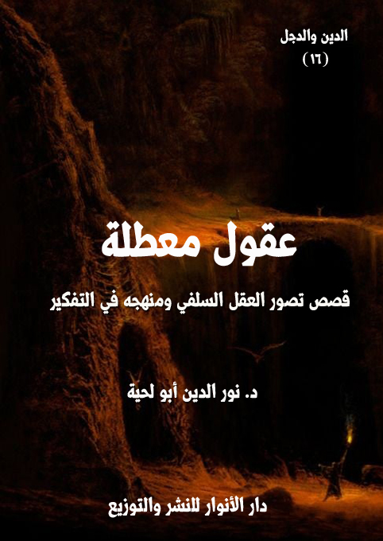

الكتاب: عقول معطلة
المؤلف: أ.د. نور الدين أبو لحية
الناشر: دار الأنوار للنشر والتوزيع
الطبعة: الأولى، 1437 هـ
عدد الصفحات: 128.
ISBN: 978-3-330-84518-3
لمطالعة الكتاب من تطبيق مؤلفاتي المجاني وهو أحسن وأيسر: هنا

التعريف بالكتاب
هذا الكتاب من الكتب التي حاولت فيها أن أصور الواقع السلفي عن طريق القصص الرمزية والواقعية، لأنه من الصعب التعبير عن الكثير من القضايا الواردة فيه تعبيرا علميا دقيقا من غير استعمال التصوير الأدبي والفني.
ويهدف إلى بيان الجذور التي ينطلق منها التشدد والتطرف والخرافة في العقل السلفي، وهو [التعطيل].. فالعقل السلفي نتيجة انبهاره الشديد بسلفه، وبآثارهم وتراثهم، وخضوعه المطلق لهم، أعطى عقله إجازة أو تقاعدا، بحيث لا يحتاج إلى استعماله، وكيف يحتاج إلى ذلك، وقد كفاه سلفه كل شيء؟
وكيف يحتاج إلى ذلك، وهو يعلم أنه إن غامر واستعمله فسيؤدي به إلى التجهم أو التعطيل أو التصوف أو الرفض أو يتبنى ما تبناه كل من استعملوا عقولهم من المواقف والرؤى؟
عقول معطلة (4)
هذا الكتاب من الكتب التي حاولت فيها أن أصور الواقع السلفي عن طريق القصص الرمزية والواقعية، لأنه من الصعب التعبير عن الكثير من القضايا الواردة فيه تعبيرا علميا دقيقا من غير استعمال التصوير الأدبي والفني.
ويهدف إلى بيان الجذور التي ينطلق منها التشدد والتطرف والخرافة في العقل السلفي، وهو [التعطيل].. فالعقل السلفي نتيجة انبهاره الشديد بسلفه، وبآثارهم وتراثهم، وخضوعه المطلق لهم، أعطى عقله إجازة أو تقاعدا، بحيث لا يحتاج إلى استعماله، وكيف يحتاج إلى ذلك، وقد كفاه سلفه كل شيء؟
وكيف يحتاج إلى ذلك، وهو يعلم أنه إن غامر واستعمله فسيؤدي به إلى التجهم أو التعطيل أو التصوف أو الرفض أو يتبنى ما تبناه كل من استعملوا عقولهم من المواقف والرؤى.
ولذلك كان الأسلم له أن يعطيه إجازة أو تقاعدا، ويستريح، ليضمن لنفسه أن يدخل مع سلفه الفردوس الأعلى، وهناك يستمتع بالجلوس على الأرائك والضحك على كل تلك الفرق والجماعات والحركات والشعوب التي استعملت عقولها، فأدخلتها نيران جهنم، وبئس المصير.
وهذه القصص تشمل معاني متعدد، كل قصة منها تعالج مظهرا من مظاهر تعطيل العقل، أو تذكر سببا من أسبابه.. أو تجمع ذاك جمبعا.
وقد صيغت بلغة رمزية في ثوب واقعي، حتى يتمرن القارئ الكريم على استعمال عقله في فك الرموز وقراءة ما بين السطور..
ولذلك أنصح من لا قدرة له على ذلك، أو لا يحب ذلك ألا يقرأ هذه القصص لأنه
عقول معطلة (5)
سيتهمني بالكذب والدجل، ويروح يستعمل الوسائل الكثيرة ليثبت أنه لا يوجد شخص اسمه العقل العجيب.. ولا شخص اسمه حرب.. ولا شخص اسمه سلام.. ولم تنظم محاضرة تحضر فيها هند أو زنيرة.. ولم تقف أميرة ذلك الموقف العظيم لتثبت لهم أنه يمكن أن نخاطب رسول الله صلى الله عليه وآله وسلم وأن نطلب منه المدد.
ولهذا فإني لا أجيز لأصحاب العقول القاصرة المعطلة أن يقرأوا هذه القصص، لأن معدة عقولهم لا تستطيع هضمها، وقد يسبب لهم ذلك عسر هضم، يؤدي بهم إلى الجنون.. وتعطيل العقل خير من الجنون.
لكنهم يمكن أن يتواضعوا قليلا، ويجلسوا بأدب وذلة مع الذين يستعملون عقولهم، ليقرؤوا لهم، ويفسروا ما أودع في هذه القصص من أسرار قد تنفعهم في دنياهم وأخراهم.. عسى عقولهم تعود للعمل، وعسى حياتهم تعود إلى الفطرة التي فطرهم الله عليها.
وأحب أن أنبه إلى أن هذه القصص على الرغم مما يحمله بعضها من سخرية، فإن ذلك لا يعني أنني أسخر من أحد من الناس، حتى من أصحاب العقول المعطلة.. وكيف أفعل ذلك، وقد قال تعالى: {يَاأَيُّهَا الَّذِينَ آمَنُوا لَا يَسْخَرْ قَوْمٌ مِنْ قَوْمٍ عَسَى أَنْ يَكُونُوا خَيْرًا مِنْهُمْ وَلَا نِسَاءٌ مِنْ نِسَاءٍ عَسَى أَنْ يَكُنَّ خَيْرًا مِنْهُنَّ} [الحجرات: 11]
وإنما قصدي من ذلك أن أكون مرآة عاكسة تعرض لهم صورهم وحقيقتهم كما هي عساهم ينفروا منها، وعساهم يعودون لوعيهم.. لأننا أحيانا كثيرة نحتاج إلى نضح الماء على وجوهنا حتى نستفيق ونفطن ويعود لنا وعينا.
عقول معطلة (6)
كان الكل يتحدث عن قدراته العقلية العجيبة إلى الدرجة التي جعلتني أنبهر به قبل أن أراه أو أسمعه أو أقرأ له.. وقد جعلني ذلك، ولفترة محترمة من عمري أزكيه وأثني عليه مع أني لم أعرفه.. لا من قريب ولا من بعيد..
لا تلوموني على ذلك.. فلست وحدي في هذا.. فالعقل الجمعي يسيطر أحيانا علينا من حيث لا نشعر.. فنقف المواقف الخطيرة ثقة منا بتلك العقول الكثيرة التي اجتمعت وقررت وحكمت.. ولم يبق لغيرها من العقول سوى أن تخضع لها وتسلم، اقتنعت أو لم تقتنع.. فيكفي أن يكون الجمهور هو الذي تحدث، وهو الذي حكم، وهو الذي قرر.. وهل توازي عقولنا المفردة عقول الجماهير؟
لكني، وبسبب موقف محرج وقع لي مع بعض طلبتي قررت أن أتمرد على العقل الذي فرضه علي الجمهور..
وقد كان سبب الموقف أني ذكرت صاحب ذلك العقل العجيب عند ذكري لأسماء المفكرين المعاصرين.. ويعلم الله أن نيتي لم تكن صادقة في ذلك.. بل كان قصدي هو أن يعرف طلبتي أنني أحيط بكثير من الأسماء، وأعرف الكثير من المفكرين، وأن ذلك نتيجة لاطلاعي الواسع..
نعم زينت لي نفسي الأمارة بالسوء حينها أن مقصدي نبيل.. فالطلبة يحتاجون إلى ثقة مطلقة في أستاذهم ليستفيدوا منه.. ولذلك فلا حرج عليه ـ كما تفتي نفسي الأمارة ـ أن يتكلف ـ في بعض الأحيان ـ أمثال تلك الحيل.
لكن الحفرة التي حفرتها لهم وقعت فيها، إذ برزت طالبة ذكية نجيبة لي كما يبرز الأسد لضحاياه الجرحى، وقالت لي بكل أدب: هل تعرف هذا العقل العجيب يا أستاذ؟
عقول معطلة (7)
لم أجد ما أقول، لكني احتلت لذلك بما تعلمته في فنون التعليم من حيل، فقلت لها: الكل يتحدث عنه.. والكل يزكيه.. والكل يثني عليه.. ولا يخفى تأثيره في الجماهير العريضة في وطننا العربي الكبير.. بل وصل تأثيره للعالم.
قالت: أنا لا أريد الكل.. أريدك أنت.. أريد أحكام عقلك أنت.
لم أجد مع هذه الجسارة، سوى أن قلت لها - وأنا أمارس حيلي البيداغوجية حتى لا تكتشف الطالبة تلك الثغرة الأمنية الخطيرة التي أوقعتني نفسي فيها -: أشكرك أيتها الطالبة المحترمة على هذا السؤال الوجيه.. وبما أن الوقت لا يكفي للحديث عن أفكاره التي جعلته محلا لإعجاب الجميع، فأعدكم أن نخصص غدا حصة خاصة به..
قلت ذلك، وأنا على ثقة من أنني قد قد تخلصت من المأزق الخطير الذي أرادت الطالبة الذكية أن توقعني فيه.. لكني لم أعلم أنني - بذلك الموقف - زدت من طينتي بلة.. بل رحت إلى الحفرة التي أوقعتني فيها، فزدت فيها أمتارا جديدة، لأنغمس فيها انغماسا كليا.
فبعد خروجي من الجامعة مباشرة ذهبت إلى المكتبة، وسألت الكتبي عن أعمال ذلك العقل العجيب، فأجابني، وهو يبتسم: عجبا.. هل يمكن أن تكون هناك مكتبة في الدنيا، ولا يوجد فيها أعمال ذلك العقل العبقري العجيب؟.. إننا معشر الكتبيين من دونها سنغلق متاجرنا، ونتوقف عن العمل، فليس هناك أعمال تسوق مثل أعماله.. بورك له في شفتيه.. وبورك في تلك الكاميرات وأجهزة التسجيل التي تتسابق على تسجيل صوته، والتقاط صوره..
تعجبت من قوله هذا، لأني كنت أطلب كتبه.. وقد احترت في علاقة كتبه بشفتيه وبأجهزة التسجيل والتصوير.. إلا أني خشيت أن يضحك علي صاحب المكتبة.. ويضحك معه عقل الجمهور الذي صرت مقيدا بقيوده.
عقول معطلة (8)
ما هي إلا لحظات حتى أحضر لي صاحب المكتبة مجموعة أقراص مضغوطة.. وهو يقول: تجد هنا كل أعمال ذلك العقل العجيب.. وصدقني فإنك ستنبهر بها انبهارا كليا.. وسترى عيناك ما لم تر مثله في حياتك.
تعجبت من قوله ذلك.. وتعجبت قبله من تلك الأقراص المضغوطة.. لأني كنت أتصور أنه سيأتيني بكتب.. لكني لم أستطع أن أسأله خشية أن يضحك علي.. وقد قلت لنفسي مسليا: لعل كتبه موجودة بصيغة مصورة.. لا بأس..
دفعت الثمن، وأنا أقول للكتبي: شكرا جزيلا.. سأحاول أن أقرأ ما استطعت منها هذه الليلة.
ضحك الكتبي ملء فيه، وهو يقول: تقرؤها.. عجبا لك.. في أي عصر تعيش أنت؟
قلت: الكتب تقرأ في كل العصور.. أم أنك أعطيتني كتبا مسموعة؟
عاد الكتبي للضحك، وهو يقول: ومن ذكر لك بأن العقل العجيب يكتب كتبا.. لقد تجاوزنا ذلك الزمان.. نحن في زمان الملتميديا أيها العقل القديم.
ابتسمت له، وأنا أحاول أن أظهر له بأني لا أزال أعيش هذا العصر: حتى الملتميديا نحتاج أن نقرأها.. فالأفكار تقرأ مكتوبة أو مسموعة أو مرئية.
شعر الكتبي بالخجل، وقال: معذرة لم أفهم قصدك.
وهكذا تخلصت من الطالبة والكتبي.. وذهبت إلى بيتي لأكتشف أني لم أكن أخادعهما، بل كنت أخادع نفسي.
لقد رحت لتلك الأقراص المضغوطة أشغلها، فوجدت ما انبهرت له..
لقد اكتشفت سر العبقرية في ذلك العقل العجيب.. واكتشفت معه سر ذلك الانبهار الذي أصاب الجماهير، فراحوا يسلمون له، ويخضعون.. واكتشفت مع ذلك كله سر تخلفنا عن ديننا وواقعنا.
عقول معطلة (9)
لقد أمضيت سبع ساعات كاملة أتفرج على تلك الأقراص المضغوطة - وأنا أحمل قلمي ودفتري - بحثا عن فكرة واحدة أنتجها ذلك العقل العجيب، لعلي أطلع بها طلبتي وفاء بوعدي، فلم أجد، ولا نصف فكرة.
فقد كان ذلك العقل العجيب في كل تلك اللقاءات التي عقدت له لا يستعمل سوى ذاكرته القوية العجيبة التي انبهرت لها الجماهير..
حتى أنه كان في ذكره للأحاديث لا يكتفي بأن يذكر نص الحديث بحروفه، بل يضم إليه ذكر من خرجه من المحدثين، وذكر سنده، وأحوال الرواة، وما قال فيهم علماء الجرح والتعديل، والاتصال والانقطاع.. ونحو ذلك، وكأنه يقرأ من كتاب..
ولذلك يمضي مع كل حديث يرويه ما يقارب ربع الحصة التي عقدت له..
أما ربعها الثاني، فيذكر فيه كلام إسحق بن راهوية وسفيان الثوري والبربهاري وابن بطة وابن بطال وغيرهم ليشرح به الحديث، أو ليؤكده، أو ليذكر فيه من المعاني الجديدة ما لم يتطرق له.
أما ربعها الثالث، فكان يذكر فيه ما يحفظه من قصائد السلف والخلف برنة جميلة تهتز لها العقول والقلوب.. فقد وهب مع الذاكرة العجيبة صوتا جميلا حول به نونية القحطاني ونونية ابن القيم إلى أغنية جميلة، وسمفونية لذيذة.
وأما ربعها الرابع، فكان يخصصه لتلك الخطب الراقية التي يحفظها هي الأخرى، والممتلئة بأنواع الاستعارات والكنايات والمحسنات البديعية.. وكان يرددها بسرعة وبصوت جهوري تمتلئ له لذة وطربا، ولو لم تفهم منه حرفا واحدا.
هكذا كانت كل حصصه تمضي.. فلا يشعر المستمع لها بأي سآمة وملل.. بل يظل فاغرا فاه منبهرا به إلى آخر لحظة..
وهكذا مضت سبع ساعات قضيتها في الاستماع إليه.. لكن دفتري ظل فارغا لم
عقول معطلة (10)
أسجل فيه حرفا واحدا.. لأني لم أجد كلمة واحدة من بنات فكره يمكنني أن أقوّله إياها، فهو يبدأ كلامه بالمنقول، وينتهي بالمنقول.. ولا حظ بينهما للمعقول.
لعلكم لم تصدقوني.. أو لعلكم تريدون نماذج عن ذلك.. لا بأس.. سأنقل لكم مشهدا يختصر وصفي، وهو عن حصة خصصها العقل العجيب لأسئلة النساء، وقد قدم لها بقوله: هذه الحصة مخصصة لأسئلة النساء استنانا فيها بما ورد في الحديث الذي حدث به أبو صالح السمان - واسمه ذكوان - عن أبي سعيد قال: قال النساء للنبي صلى الله عليه وآله وسلم: (غلبنا عليك الرجال، فاجعل لنا يوما من نفسك)، فوعدهن يوما لقيهن فيه، فوعظهن وأمرهن.. وفي رواية مسدد عن أبي عوانة قال: جاءت امرأة إلى رسول الله، فقالت: يا رسول الله، ذهب الرجال بحديثك، فاجعل لنا من نفسك يوما نأتي فيه تعلمنا مما علمك الله، فقال: (اجتمعن في يوم كذا وكذا، في مكان كذا وكذا)، فاجتمعن، فأتاهن رسول الله صلى الله عليه وآله وسلم فعلمهن مما علمه الله.. وقال البخاري: قال شريك عن ابن الأصبهاني قال: حدثني أبو صالح عن أبي سعيد وأبي هريرة عن النبي صلى الله عليه وآله وسلم..) (1)
وهكذا أخذ يسرد الكثير من الأسانيد والروايات المتقاربة للحديث.. وبعدها أخذ يتلقى الاتصالات.. والعجيب أنها كانت من مناطق مختلفة من العالم.. وكأن تأثيره عقله العجيب قد بلغ أقاصي الأرض، ولم يكن قاصرا على البلد الذي يقيم فيه.
وكان أول اتصال ورده من أمريكا، ومن امرأة أبدت – في مقدمة كلامها - إعجابها الكبير به، ثم أخبرته أنها مقبلة على الزفاف، وأن العادة هناك أن تلبس المرأة لباسا أبيض.. وأنها تريد أن تفصل لباسا محتشما بذلك اللون.
فأجاب مباشرة - وكأنه يقلب صحفا أمامه - بقوله: لقد أفتى في ذلك العالم الجليل، والمربي الكبير، والقدوة الصالح، والطود الشامخ في العلم والزهد والصدق والإخلاص
__________
(1) الجمع بين الصحيحين (2/ 447)
عقول معطلة (11)
والتواضع والورع والفتوى، شيخ التفسير والعقيدة والفقه والسيرة والأصول والنحو وسائر العلوم.. الداعي إلى الله على بصيرة المشهود له بصدق العمل، ومواقف الخير والدعوة والارشاد والإفتاء، الذي أجمعت القلوب على قبوله ومحبته وفضله وعلو مرتبته فضيلة شيخنا العلامة أبو عبد الله محمد بن صالح بن محمد بن سليمان بن عبد الرحمن العثيمين الوهيبي التميمي المولود في ليلة السابع والعشرين من شهر رمضان المبارك عام 1347 هـ، في مدينة عنيزة إحدى مدن القصيم.. بقوله: (إن الأبيض في الحقيقة من التبرج بالزينة فإن اللباس الأبيض للمرأة يكسوها جمالاً ويوجب انطلاق النظر إليها، لذلك كونها تلبس اللباس الأسود مع العباءة أفضل لها وأكمل) (1)
قال ذلك، ثم ردد العبارة اللازمة التي يكررها بعد إجابته على كل سؤال: مرروا اتصالا آخر..
فاتصلت فتاة من ألمانيا، وقالت: أنا فتاة أقيم في ألمانيا.. وأريد الانضمام للدراسة في بعض جامعاتها.. وقد طلبوا مني شهادة تثبت قدرتي على اللغة الألمانية.. فهل يجوز لي تعلمها؟
فأجاب مباشرة من غير تريث: سؤالك يحوي على شقين..
أما أولهما، فقد أجاب عليه الشيخ محمد صالح المنجد التلميذ النجيب لكبار العلماء الربانيين في هذا العصر من أمثال الشيخ صالح بن فوزان آل فوزان، والشيخ عبد الله بن محمد الغنيمان، والشيخ محمد ولد سيدي الحبيب الشنقيطي، والشيخ عبد المحسن الزامل، والشيخ عبد الرحمن بن صالح المحمود.. وهو فوق ذلك يعتبر التلميذ النجيب للشيخ عبد العزيز بن عبد الله بن باز، وكانت علاقته به ممتدة على مدى خمس عشرة سنة، وهو الذي دفعه إلى التدريس وكتب إلى مركز الدعوة والارشاد بالدمام باعتماد التعاون معه في
__________
(1) مجموع فتاوى ورسائل العثيمين (22/ 180)
عقول معطلة (12)
المحاضرات والخطب والدروس العلمية وبسبب الشيخ عبد العزيز بن باز أصبح خطيباً وإماماً ومحاضراً.
لقد أجاب هذا الشيخ الجليل تلميذ مشايخ الإسلام الكبار على سؤال شبيه بسؤالك، فقال: (وجودك – أختي السائلة - في مدرسة مختلطة حرام في الشرع؛ لأن الخلطة التي وصفتيها تكون عُرضة وسبباً للفساد المفضي إلى الفواحش المنكرة، وقد حذر الرسول صلى الله عليه وآله وسلم في كثير من أحاديثه الرجال من فتنة النساء، وعظم أمرهن حتى جعل فتنتهن أشد الفتن وأشد المضرات.. وفي الخلطة التي ذكرتها عدم التمكن من غض البصر، وفيه مدخل كبير لشهوة النساء للرجال وشهوتهم لهن وهذا لا يجوز بل هو رأس الفساد.. فكيف بنا نسمح لنساء هذا الزمان الذي انتشرت فيه أمراض القلوب وقلَّ الوازع الديني أن تجلس المرأة مع الرجل في مكان واحد مع عدم وجود المحرم وفي كل يوم لساعات طوال.. فاتقي الله تعالى يا أختي ولا تلتحقي بهذه المدرسة مهما كلف الأمر.. وليس هناك ضرورة تدعو إلى الخلطة، فالدراسة في هذه المدرسة ليست ضرورة ما دام أن المرأة تستطيع القراءة والكتابة، وتعلم أمور دينها فهذا يكفي؛ لأنها خلقت لهذا، أي: لعبادة الله تعالى وليس الذي بعد هذا ضرورة) (1)
أما الشق الثاني، فقد أجاب عليه العلامة الجليل أبو عبد الله محمد بن صالح بن محمد بن سليمان بن عبد الرحمن العثيمين الوهيبي التميمي المولود في ليلة السابع والعشرين من شهر رمضان المبارك عام 1347 هـ بقوله في شرحه لزاد المستقنع: (.. ومعلوم أن اعتياد التكلم بغير العربية حتى يكون عادة أمر غير مشروع لأن يورث محبة أهل تلك اللغة من الكفرة وهو مخالف لعقيدة الولاء والبراء من الكفار. قال شيخ الإسلام ابن تيمية: (واعلم أن اعتياد اللغة يؤثر في العقل والخلق والدين تأثيرًا قويًا بينًا، ويؤثر أيضاً في مشابهة صدر
__________
(1) موقع الإسلام سؤال وجواب.
عقول معطلة (13)
هذه الأمة من الصحابة والتابعين، ومشابهتهم تزيد في العقل والدين والخلق).. والذي أراه أن الذي يعلم صبيّه اللغة الإنجليزية منذ الصغر سوف يُحاسب عليه يوم القيامة؛ لأنه يؤدي إلى محبة الطفل لهذه اللغة، ثم محبة من ينطق بها من الناس؛ هذا من أدخل أولاده منذ الصغر لتعلم اللغة الإنجليزية أو غيرها من اللغات، فليتق الله من يريد جلب هذه اللغة إلى أبناء المسلمين، والله الله أن يضيع من يعول، وليتذكر قوله صلى الله عليه وآله وسلم: (ما من عبد يسترعيه الله رعية يموت يوم يموت وهو غاشٌ لرعيته إلا حرم الله عليه الجنة) رواه مسلم. اللهم هل بلغت؟ اللهم فاشهد) (1)
وقياسا على ما ذكره الشيخ من حرمة تعلم اللغة الإنجليزية، فإني أفتي بحرمة تعلم اللغة الألمانية، لاستوائهما في العلة، فكلاهما يكتب بالحروف اللاتينية، التي هي حروف صليبية في الأساس.. مرروا سؤالا آخر..
فاتصلت امرأة من بلدة عربية لا أذكرها.. وسألته عن جواز استعمال بعض المساحيق في البيت، ولزوجها لطلبه ذلك منها، فقال الشيخ مباشرة، ومن غير تفكير ولا تأمل، فقد كان عقله يملك معالجا قويا، ويملك معه ذاكرة عجيبة.. لقد قال مجيبا لها: لقد أجاب عن سؤالك هذا العلامة الجهبذ والمحدث الكبير، ناصر السنة، وقامع البدعة، فضيلة الشيخ محمد ناصر الدين بن نوح نجاتي الألباني المولود عام 1332 هـ في مدينة اشقودرة عاصمة ألبانيا آنذاك.. والفائز بجائزة الملك فيصل العالمية لعام 1419 هـ في فرع الدراسات الإسلامية، نظير جهده واجتهاده وتفانيه في خدمة الإسلام والعناية بسنة رسول الله صلى الله عليه وآله وسلم.. فقال: (لا يجوز للمرأة غير المتحجبة فضلا عن المتحجبة أن تستعمل المكياج الكافر، المكياج الفاسق، متى عرفتم شيء من زينة النساء يسمى باسم ماأنزل الله به من سلطان
__________
(1) شرح زاد المستقنع – كتاب النكاح – الشريط الثاني الوجه الثاني، وهو في الكتاب المطبوع مع بعض التغيير، انظر: الشرح الممتع على زاد المستقنع (12/ 43)
عقول معطلة (14)
[المكياج] هذه لغة مانعرفها لا نحن ولا أباؤكم من قبل، وإنما هو لفظة أجنبية تعبر عن زينة لفساق، نساء فاسقات، نساء أوربا، فتشبهت نساؤنا مع الأسف إلا من عصم الله منهن بالتزين بهذه الزينة التي تأثر المجتمع الإسلامي بها ألا وهي المكياج فلا يجوز للمرأة) (1).. مرروا اتصالا آخر..
اتصلت امرأة من فرنسا تسأل عن الحقائب اليدوية التي تحملها النساء في العادة، فقال من غير حاجة للتكفير: لقد أجاب عن هذه المسألة الخطيرة، والتي تعم بها البلوى شيخنا العلامة المحدث مقبل بن هادي بن قايدة الهمداني الوادعي الخلالي من قبيلة آل راشد بسؤال فحواه: (شاع في هذه الأيام بين النساء عند خروجهن حمل حقائب يدوية وأحيانا لا يكون فيها شيء وليست بحاجة إليها، فما حكم هذه العادة، وهل يكن متشبهات بالكافرات أم لا؟)، فأجاب بقوله: (إذا كان هذا الأمر جاء من قبل أعداء الإسلام فهو تشبه بأعداء الإسلام، ومن تشبه بقوم فهو منهم) (2).. مرروا اتصالا آخر..
اتصلت امرأة من كندا تسأل عن حكم لبس المرأة الكعب العالي، فأجاب العقل العجيب بقوله: لقد سئلت بمثل هذا السؤال اللجنة الدائمة للفتوى والمشكلة من كبار العلماء السلفيين من أمثال عبد الله بن قعود، وعبد الله بن غديان، وعبد الرزاق عفيفي، وعبد العزيز بن عبد الله بن باز، وذلك في السؤال الذي يحمل رقم (1678)، فأجابت بقولها: (لبس الكعب العالي لا يجوز؛ لأنه يعرض المرأة للسقوط، والإنسان مأمور شرعا بتجنب الأخطار) (3).. مرروا اتصالا آخر..
اتصلت امرأة من جنوب إفريقيا، وسألت: (هل يجوز للمرأة شرعا أن تقص
__________
(1) سلسلة الهدى والنور شريط (697)
(2) غارة الأشرطة (1/ 102)
(3) فتاوى اللجنة الدائمة (17/ 123)
عقول معطلة (15)
شعرها؟)، فأجاب العقل العجيب بقوله: لقد سئلت بمثل هذا السؤال اللجنة الدائمة للفتوى والمشكلة من كبار العلماء السلفيين من أمثال عبد الله بن قعود، وعبد الله بن غديان، وعبد الرزاق عفيفي، وعبد العزيز بن عبد الله بن باز، وذلك في السؤال الذي يحمل رقم (5007) فأجابت بقولها: (لا يجوز لها أن تقص أو تحلق شعر حواجبها أو شعر رأسها إلا لضرورة تدعو إلى ذلك كعلاج جروح بالرأس أو الحاجب يتوقف علاجها على قص الشعر أو بعضه فيجوز ذلك بقدر الحاجة، ويجب لها أن تزيل شعر وجهها وسائر جسدها بنتف أو نورة أو نحو ذلك ما عدا الرأس والحاجبين) (1).. مرروا اتصالا آخر..
اتصلت امرأة من السودان، وسألت: (ما حكم زغاريد النساء في الأفراح؟)، فأجاب العقل العجيب من غير تردد: لقد أجاب على ذلك فضيلة صالح بن فوزان بن عبد الله من آل فوزان من أهل الشماسية الوداعين من قبيلة الدواسر، المولود عام 1354 هـ، والذي توفي والده وهو صغير، فتربى في أسرته، وتعلم القرآن الكريم، وتعلم مبادئ القراءة والكتابة على يد فضيلة الشيخ: حمود بن سليمان التلال، الذي تولى القضاء أخيرا في بلدة ضرية في منطقة القصيم.. بقوله: (لا يجوز للمرأة رفع صوتها بحضرة الرجال؛ لأن في صوتها فتنة؛ لا بالزغردة، ولا غيرها، ثم إن الزغردة ليست معروفة عند كثير من المسلمين لا قديمًا ولا حديثًا؛ فهي من العادات السيئة التي ينبغي تركها، ولما تدل عليه أيضًا من قلة الحياء) (2)
هذا مجرد مشهد من المشاهد التي ظللت ساهرا معها تلك الليلة، وأنا ممتلئ إعجابا بذلك العقل الذي يحوي أكبر ذاكرة تخزين في الدنيا، ويحمل معها أكبر برسيسور.. عفوا.. معالج في الدنيا.. ويحمل معهما أكبر رام.. عفوا.. ذاكرة عشوائية في العالم أجمع..
__________
(1) فتاوى اللجنة الدائمة (5/ 201)
(2) المنتقى من فتاوى الفوزان (60/ 10)
عقول معطلة (16)
لكني في الصباح وبعد استيقاظي أخذتني الحيرة كل مأخذ، فما عساي أقول لتلك الطالبة، وكيف أواجه إلحاحها الشديد.. وما عساي أقول لزملائها، وقد وعدتهم أن أخصص لهم حصة حول ذلك العقل العجيب..
لكني الفنون التي تعلمتها من زملائي من الأساتذة راحت تتداركني.. وقد نجحت في تطيبقها أيما نجاح..
لقد ذهبت إلى الحصة، وأنا مرفوع الرأس، مع أنه لم يكن في عقلي أي معلومة أقدمها لهم عن ذلك العقل العجيب، ولا عن غيره من العقول..
وبمجرد دخولي إلى القاعة طلبت من الطالبة صاحبة السؤال أن تصعد، ثم قلت لزملائها: إن التعليم الجامعي لا يعتمد على التلقين بقدر ما يعتمد على تكوين القدرات، وتشكيل الكفاءات.. ولذلك فقد اخترت أحسن عضو في هذا القسم ليقدم لكم درسا، وتناقشوه فيه.. وهو حول العقل العجيب الذي وعدتكم بتخصيص حصة عنه.. وقد آثرت أن يكون الحديث عنه من طرف زميلتكم الباحثة العبقرية التي أعتقد جازما أن لها قدرات لا تقل عن أعجب العقول..
قلت ذلك.. ثم جلست مكان الطالبة.. وتركتها تقع في الحفرة التي حفرتها لي.
عقول معطلة (17)
كنت في إمارة الشارقة في دولة الإمارات العربية المتحدة حين سمعت أن عالما عربيا كبيرا استطاع أن يقضي بالأدلة العقلية اليقينية القطعية على كل النظريات التي أتى بها فيثاغورس اليوناني، وأريستاخورس الإسكندرى، وكوبرنيقس البولندى، وجاليليو جاليليه الايطالى.. وكل من جاء بعدهم كنيوتن وإنشتاين وغيرهم كثير.
كان كل الناس يسعون مهرولين لمركز الأبحاث المتواجد في وسط الإمارة.. وعندما وصلنا وجدنا كاميرات القنوات الفضائية كلها تنتظر الحدث الأكبر في العالم لهذا القرن.. بل لقرون عديدة.
رأيت مراسل قناة بي بي سي يسأل بعض الناس عن مشاعره، وهو ينتظر لحظة ظهور العبقري العربي الذي قضى على كل النظريات التي يعتقد أنها حقائق علمية، فأجاب، والفرحة بادية على كل كلمة يقولها: لقد كنت دائما أعتقد أن ما نمر به من التخلف ليس سوى مرحلة قصيرة.. وها قد عدنا بحمد الله من جديد لقيادة الأمم.. وها قد بدأنا بتصحيح أخطائها العلمية.. وسترون بعد ذلك كيف تنهار كل اكتشافاتهم العلمية كأحجار الدومينو.
ورأيت مراسل قناة سي ان ان وهو يتكلم بسرعة شديدة ولهفة شديدة في انتظار الحدث الأعظم..
ورأيت مدير الوكالة الفضائية الأمريكية (ناسا) يتحدث مع بعض الأمراء طالبا منه أن يسمح للعبقري بالعمل في الوكالة لقاء ما يشاء من الأموال..
وهكذا كانت كل القلوب تخفق لظهور البطل العبقري الذي حقق أخيرا المعجزة، وقضى على الخرافات التي كانت البشرية ولا زالت فترة طويلة تعتقدها حقائق ثابتة.
عقول معطلة (18)
ما هي إلا لحظات حتى أطل البطل العبقري على المنصة، وبيده كرة كبيرة.. فانهالت التصفيقات الحادة تحييه.. وتطلعت الأعناق تشرئب لرؤيته.
استلم المكروفون، وراح يقول: في البداية أهدي ثمرة اكتشافي العلمي لكل من تتلمذت عليه من العلماء النجباء الذين لولاهم لما وصلت إلى هذا المحل.. ولما استطعت أن أنجز هذا الإنجاز العلمي الضخم ابتداء من شيخ الإسلام ابن تيمية وانتهاء بابن باز والعثيمين وغيرهم من علماء الدعوة السلفية النجدية العباقرة.
تعجبت لذكره كل هؤلاء في مثل هذا المحل.. لكني اعتذرت له عن ذلك بأن هذا من وفائه وتدينه..
بعدها أخذ يقول: اكتشافي أيها السادة الأفاضل يرتبط بهذه الأرض التي نعيش عليها.. والتي احتقرها الكثير ممن يزعمون لأنفسهم العلم، فتصوروها مجرد تابع ذليل للشمس.. مع أنها في الحقيقة المركز الذي تطوف به الشمس لتمدة بأشعتها..
لقد أخطأ فيثاغورس في هذا حين استدل بدليل باهت، وهو أنه أنه إذا كانت هناك حجرة ومصباح.. فإننا في العادة نضع المصباح في وسط الحجرة.. وبناء على هذا المثال الباهت استدل على أن الشمس هى الثابتة.. لأنها المصباح.. والأرض هى التى تتحرك على خلاف ما كان معروفاً وقتذاك..
أما كوبرنيقس فقد اشتط، وكأنه يدعو الى عبادة الشمس فهو يقدسها أيما تقديس، ولم يأت بدليل، بل قال قولا مشابها لقول فيثاغورس حيث قال: هذا المصباح من يستطيع أن يضعه فى هذا المعبد إلا فى المنتصف.. نفس الكلام.. ولم يأت بدليل هو الآخر.
لقد ألف كوبرنيقوس كتاب أسماه (حركة الأجرام السماوية).. جعل كل شئ يتحرك ما عدا الشمس فهى ثابته عنده.. وهذا الكتاب بشهادة بعض علماء الغرب والشرق مسروق من كتاب لرجل رافضي خبيث هو نصر الدين الطوسى واسم كتابه (المجسطى)..
عقول معطلة (19)
ونصر الدين الطوسى ألف كتابه قبل كوبرنيقس.
فكيف بالله عليكم تأخذون علماً من رجل سارق ومدلس يدلس العلم؟.. وكيف تأخذون علماء من رافضي مجوسي خبيث؟
بعد هؤلاء جاء الذي أسموه (رائد العلم) وهو جاليليو الذي ألف كتابا سماه (الحوار).. ووضع فيه دفاعه عن آراء كوبرنيقس، وأقر كل ما جاء فى كتابه (حركة الأجرام السماوية)، وقال بأن الكون عبارة عن فراغ شاسع..
يا الله.. ما هذا الكفر والضلال.. لو تبينتم قوله لعلمتم أن قوله فيه كفر بين وإلحاد واضح.. لأن قوله معناه أن الفضاء لا نهائي، بمعنى أنه ينكر وجود السماء. ومعنى ذلك أنه لا جنة ولا نار.. لأن الجنة فى السماء.. وأيضاً لا وجود لله لأن الله فوق السماء، وقد ينزل منها كما في ثلث الليل الآخر.. ولكنه لم يكن ليصرح بذلك لعلمه أن الكنيسه ستحرقه كما حرقت (جيردانو بورنو) من قبل لقوله هذا الكلام، واكتفى بقوله: الكون عبارة عن فراغ شاسع..
هذا الرجل المدعو (جاليليو) لم يتزوج وله أولاد غير شرعيين.. وكان يعاقر الخمر.. ويأتى المواخير.. بالله عليكم ماذا تنتظرون من هذا الرجل الكافر الفاسق.. هل تنتظرون منه أن يعطيكم حقائق علمية.. حاشا لله.
بعد أن فند العبقري بالأدلة القطعية آراء كل العلماء السابقين.. صاح بعض الحاضرين من المسلمين: الله أكبر.. الله أكبر.. أخبرنا أيها ا لعبقري اللبيب عن اكتشافك العلمي العظيم الذي قضيت به على هذه الآراء الإلحادية..
قال العبقري: شكرا جزيلا.. لقد أخجلتموني بهذا.. أنا في الحقيقة تلميذ لمشايخنا من علماء السلف الصالح الذين لم ينخدعوا بأمثال هذه الأقوال.. وبناء عليها رحت أفكر منذ عشرين سنة حول الأدلة العقلية التي تمكنني من إقناع الناس بأخطاء أولئك الضالين
عقول معطلة (20)
والزنادقة.. لأن مشكلتهم أنهم لا يقبلون إلا عقولهم.. إنهم يعرضون عن أعلامنا الكبار الذين استدلوا على دوران الأرض حول الشمس بكل صنوف الأدلة النقلية..
ولهذا رحت أبحث عن الأدلة العقلية التي وجدتها جميعا تؤكد ما ورد في الأدلة النقلية..
ركزوا جيدا.. لأن الأدلة العقلية تحتاج إلى تركيز كبير لفهمها..
استجمع العبقري أنفاسه، قليلا، ثم شرب عصيرا غريبا كان بجانبه، ثم قال: سأبدأ بالدليل الأول.. انظروا.. عندما ترون الشمس مشرقة، ماذا تقولون: هل تقولون: أشرقت الشمس.. أم تقولون: أشرقت الأرض.. بالطبع ستقولون: أشرقت الشمس.. إذن أنتم نسبتم الفعل للشمس، فهى التى تشرق.. إذن الشمس هى التى تتحرك وتدور حول الأرض وليس العكس..
انطلقت تكبيرات كثيرة من الحضور المسلمين.. أما غيرهم فقد كانوا ينظرون بعجب شديد له وهو يتحدث، وكأنهم يرون كائنا جاءهم من كوكب آخر.. أو من زمن آخر.
بعد أن أطنب في شرح الدليل الأول.. راح يقول: اسمحوا لي من باب الأمانة العلمية أن أنسب الدليل لأصحابه.. فهذا الدليل استفدته من كلام لابن القيم في كتابه (مفتاح دار السعادة)، يقول فيه: (ثم تأمل الحكمة في طلوع الشمس على العالم كيف قدره العزيز العليم سبحانه فإنها لو كانت تطلع في موضع من السماء فتقف فيه ولا تعدوه لما وصل شعاعها الى كثير من الجهات، لأن ظل أحد جوانب كرة الأرض يحجبها عن الجانب الآخر وكان يكون الليل دائما سرمدا على من لم تطلع عليهم والنهار سرمدا على من هي طالعة عليهم، فيفسد هؤلاء وهؤلاء، فاقتضت الحكمة الإلهية والعناية الربانية أن قدر طلوعها من أول النهار من المشرق، فتشرق على ما قابلها من الأفق الغربي، ثم لا تزال تدور
عقول معطلة (21)
وتغشى جهة بعد جهة حتى تنتهي الى الغرب فتشرق على ما استتر عنها في أول النهار، فيختلف عندهم الليل والنهار فتنتظم مصالحهم) (1)
واستفدته من كلام للشيخ محمد بن صالح العثيمين حول هذه المسألة في تفسيره لسورة الكهف يصلح أن يكون منهجاً في التعامل مع مثل هذه المسائل.. وهو عند تفسير قوله تعالى: {وَتَرَى الشَّمْسَ إِذَا طَلَعَتْ تَزَاوَرُ عَنْ كَهْفِهِمْ ذَاتَ الْيَمِينِ وَإِذَا غَرَبَتْ تَقْرِضُهُمْ ذَاتَ الشِّمَالِ} [الكهف: 17]، لقد اعتبر الشيخ أن هذه الآية القرآنية (دليل على أن الشمس هي التي تتحرك، وهي التي بتحركها يكون الطلوع والغروب خلافاً لما يقوله الناس اليوم من أن الذي يدور هو الأرض، وأما الشمس فهي ثابتة.. فنحن لدينا شيء من كلام الله، الواجب علينا أن نجريه على ظاهره، وألا نتزحزح عن هذا الظاهر إلَّا بدليل بَيِّن، فإذا ثبت لدينا بالدليل القاطع أن اختلاف الليل والنهار بسبب دوران الأرض فحينئذ يجب أن نؤول الآيات إلى المعنى المطابق للواقع، فنقول: إذا طلعت في رأي العين وإذا غربت في رأي العين، تزاور في رأي العين، تقرض في رأي العين، أما قبل أن يتبين لنا بالدليل القاطع أن الشمس ثابتة والأرض هي التي تدور وبدورانها يختلف الليل والنهار) (2)
تعجبت من ليه لأعناق النصوص.. وأردت أن أقول بأن القرآن الكريم له أسلوبان في الحديث عن هذه المسائل: مطلق.. وهو ذكر الحقيقة كما هي في الواقع كما قال تعالى، وهو يصور الشمس في مسيرها، وكأننا نراها: (وَهُوَ الَّذِي خَلَقَ اللَّيْلَ وَالنَّهَارَ وَالشَّمْسَ وَالْقَمَرَ كُلٌّ فِي فَلَكٍ يَسْبَحُونَ) [الأنبياء: 33]، وقال: (لَا الشَّمْسُ يَنْبَغِي لَهَا أَنْ تُدْرِكَ الْقَمَرَ وَلَا اللَّيْلُ سَابِقُ النَّهَارِ وَكُلٌّ فِي فَلَكٍ يَسْبَحُونَ) [يس: 40]، وقال: (وَسَخَّرَ الشَّمْسَ وَالْقَمَرَ كُلٌّ يَجْرِي لِأَجَلٍ مُسَمًّى أَلَا هُوَ الْعَزِيزُ الْغَفَّارُ) [الزمر: 5]
__________
(1) مفتاح دار السعادة ومنشور ولاية العلم والإرادة (1/ 209).
(2) محمد بن صالح بن محمد العثيمين، تفسير سورة الكهف (ص: 32)
عقول معطلة (22)
والأسلوب الثاني: نسبي يمثل ما نراه بأعيننا.. مثل الجبال، نراها ثابتة مع العلم أنها تتحرك بمعدل عشرات المليمترات في السنة، كما قال تعالى: (وَتَرَى الْجِبَالَ تَحْسَبُهَا جَامِدَةً وَهِيَ تَمُرُّ مَرَّ السَّحَابِ صُنْعَ اللَّهِ الَّذِي أَتْقَنَ كُلَّ شَيْءٍ إِنَّهُ خَبِيرٌ بِمَا تَفْعَلُونَ) [النمل: 88]
وهكذا، فإن الله تعالى أخبرنا في تلك الآيات الكريمة عن رؤيتها للشمس.. وليس عن الحقيقة المطلقة.. ولهذا عبر عن ذلك بقوله: {وَتَرَى الشَّمْسَ إِذَا طَلَعَتْ تَزَاوَرُ عَنْ كَهْفِهِمْ ذَاتَ الْيَمِينِ وَإِذَا غَرَبَتْ تَقْرِضُهُمْ ذَاتَ الشِّمَالِ} [الكهف: 17]
لكن لم يكن ليسمعني أحد.. فقد كانت العيون والأبصار كلها متوجهة إليه، متيمة به.
سكت العبقري قليلا، ثم شرب قليلا من عصير الغريب الذي كان بجانبه، ثم قال: بعد أن اقنعتكم بالدليل الأول.. هاكم الدليل الثاني.. لقد أخبرنا الله عز وجل بأنه ثبت الأرض بالجبال، وأنها رواسى، وأنها أوتاد للأرض.. فهل يعقل أن يثبت الله الأرض بالجبال ثم تتحرك بعد ذلك؟
كبر الحضور من المسلمين.. وبهت الحضور من غيرهم..
طأطأ العبقري رأسه، وقال: من باب الأمانة العلمية.. فإني أريد أن أذكر لكم بأني استفدت هذا الدليل من كتاب سماحة الوالد الشيخ العلامة ابن باز المعنون بـ (الأدلة النقلية والحسية على جريان الشمس وسكون الأرض وإمكان الصعود إلى الكواكب (، والذي طبعته الجامعة الاسلامية بالمدينة المنورة سنة 1395 هجرية، فقد ورد في (ص 23) منه: (و كما أن هذا القول الباطل - يقصد ثبوت الشمس ودوران الأرض- مخالف للنصوص فهو مخالف للمشاهد المحسوس ومكابرة للمعقول والواقع لم يزل الناس المسلمهم وكافرهم يشاهدون الشمس جارية طالعة وغاربة ويشاهدون الأرض قارة ثابتة، ويشاهدون كل بلد وكل جبل في جهته لم يتغير من ذلك شيء، ولو كانت الشمس تدور كما يزعمون لكانت
عقول معطلة (23)
البلدان والجبال والأشجار والأنهار والبحار لا قرار لها، ولشاهد الناس البلدان المغربية في المشرق، والمشرقية في المغرب، ولتغيرت القبلة على الناس حتى لا يقرّ لها قرار)
وقال في (ص 24) منه: (ثم هذا القول مخالف للواقع المحسوس فالناس يشاهدون الجبال في محلها لم تسيّر فهذا جبل النور في مكة في محله وهذا جبل أبي قبيس في محله وهذا أُحد في المدينة في محلّه وهكذا جبال الدنيا كلها لم تسيّر وكل من تصور هذا القول يعرف بطلانه وفساد قول صاحبه وأنه بعيد عن استعمال عقله وفكره قد أعطى القياد لغيره كبهيمة الأنعام فنعوذ بالله من القول عليه بغير علم ونعوذ بالله من التقليد الأعمى الذي يردي من اعتنقه وينقله من ميزة العقلاء إلى خلق البهيمة العجماء)
شرب العبقري جرعات من العصير الغريب، ثم راح يقول، وهو يفتر عن ثغره بابتسامة عريضة: لاشك أنكم تنتظرون بشغف الدليل الثالث.. ركزوا جيدا.. لقد أشار إليه الله عز وجل في اعتباره الأرض موضوعة.. لقد قال يذكر ذلك: {وَالْأَرْضَ وَضَعَهَا لِلْأَنَامِ} [الرحمن: 10].. هل يعقل أن يتحرك الشئ الموضوع!؟ وهل يمكن لأحد أن يضع شيئا، ثم يأتى بعد ذلك ليجده قد تحرك بمفرده!؟
تأمل في وجوه الحاضرين.. فوجد الوجوم ظاهرا عليها، وكأنها لم تفهم مراده، فقال: لا بأس.. سأوضح لكم أكثر.. الوضع له معنيان: أحدهما أنه جعلها فى الأسفل.. لأن الوضع يعنى السفول، وجاءت فى مقابلة {وَالسَّمَاءَ رَفَعَهَا} [الرحمن: 7].. والثانى: الثبات لأن كلمة الوضع دليل على أن الواضع يضع فى مكان معين لا تنفك الأرض عن الحركة بعيداً عنها.
شرب من العصير الغريب قليلا، ثم قال: إن فهمتهم الدليل الثالث.. فسيمكنكم بسهولة أن تفهموا الدليل الرابع.. لقد أشار إليه الله سبحانه وتعالى في قوله {إِنَّ اللَّهَ يُمْسِكُ السَّمَاوَاتِ وَالْأَرْضَ أَنْ تَزُولَا وَلَئِنْ زَالَتَا إِنْ أَمْسَكَهُمَا مِنْ أَحَدٍ مِنْ بَعْدِهِ إِنَّهُ كَانَ حَلِيمًا
عقول معطلة (24)
غَفُورًا} [فاطر: 41].. هل يعقل أن يتحرك الممسوك، خاصة إذا كان الماسك هو الله عز وجل.
شرب من العصير الغريب قليلا، ثم قال: لاشك أنكم قرأتم القرآن من أوله إلى آخره.. تدبروا جيدا.. لقد ذكرت الأرض 460 مره فى القرآن الكريم، ومع ذلك لم يأت معها أى فعل يدل على حركة الأرض.. هل تعلمون لماذا.. الجواب ببساطة هو: أن السماء والأرض هما الثابتان الوحيدان فى هذا الكون، وكل شئ ما دونهما يتحرك.
سأضرب لكم مثالا يبسط لكم هذا.. انظروا جيدا.. إن الله سبحانه وتعالى لم يذكر فى القرآن الكريم أن السماء والأرض تسجدان.. مع أن الله ذكر أن مابين السماء والأرض من مخلوقات تسجد.. والشجر والدواب وكثير من الناس وكثير حق عليه العذاب.. هل تعلمون لماذا!؟.. الجواب بسيط، وهو أن السجود يحتاج إلى حركة بالانتقال من وضع ما إلى وضع آخر حسب كيفية كل مخلوق فى سجوده..
اسمعوا جيدا قوله تعالى: {أَلَمْ تَرَ أَنَّ اللَّهَ يَسْجُدُ لَهُ مَنْ فِي السَّمَاوَاتِ وَمَنْ فِي الْأَرْضِ وَالشَّمْسُ وَالْقَمَرُ وَالنُّجُومُ وَالْجِبَالُ وَالشَّجَرُ وَالدَّوَابُّ وَكَثِيرٌ مِنَ النَّاسِ وَكَثِيرٌ حَقَّ عَلَيْهِ الْعَذَابُ} [الحج: 18] ركزوا جيدا.. الآية الكريمة تذكر أن ما فى السماوات وما فى الأرض يسجد، وليست السماء والأرض نفسها.. فى حين أن كل شئ يسجد ما عدا السماء والأرض.. وكما قلنا فإن الله قدر على السماء والأض الثبات مع أن الله ذكر أن السماء والأض تسبحان مع بقية المخلوقات، وذلك لأن التسبيح لا يحتاج الى حركه.
شرب من العصير الغريب قليلا، ثم قال: الدليل السادس نص عليه حديث ورد فيه أن (البيت المعمور في السماء يقال له الضراح، وهو على مثل البيت الحرام بحياله، لو سقط لسقط عليه، يدخله كل يوم سبعون ألف ملك، ثم لايرونه قط، وإن له في السماء حرمة على قدر حرمة مكة)
عقول معطلة (25)
تأملوا جيدا في هذا الحديث.. هو ينص على أن في الأرض توجد الكعبة.. وفي الحديث ذكر الرسول صلى الله عليه وآله وسلم أن البيت المعمور فوق الكعبة مباشرة، وأن له منطقة محرمة في السماء بقدر المنطقة المحرمة على الأرض، فوقها مباشرة، وحدد النبي صلى الله عليه وآله وسلم كلامه بقوله: (لو سقط لسقط عليه)، ولم يقل الرسول صلى الله عليه وآله وسلم فوق الكعبة دون تحديد وتثبيت مكان وجود البيت المعمور وجعل له منطقة محرمة بالسماء فوق المنطقة المحرمة التي بالأرض، ومن المعروف أن ثبات السماء لم يختلف عليه أحد، فلو كانت الأرض تدور والسماء ثابتة لتغير موضع البيت الحرام عن حيال البيت المعمور، فلو سقط لم يسقط عليه، وهذا واضح.
شرب من العصير الغريب قليلا، ثم قال: الدليل السابع من إبداعي.. وقد أحضرت هذه الكرة لشرحه.. لا تستغربوا فحتى نحن المسلمين عندنا نظريات وعقول..
أشار إلى موضع في الخارطة، وقال: (لو خرجنا مثلا من مطار الشارقة في رحلة دولية إلى الصين.. ولو وقفت الطائرة في السماء، فإن الصين، إذا كانت الأرض تدور، تأتي إلى الطائرة.. أما لو كانت الأرض هي التي تدور لما استطاعت الطائرة أن تلحق بالصين، لأن الصين تدور وأنت تدور) (1)
وبقي يكرر هذا، ويأتي بالأمثلة الكثيرة عنه.. وقد كانت الكاميرات تلتقط كل نفس من أنفاسه، وتحفظ كل كلمة يقولها خاصة إذا ارتبطت بالقرآن الكريم.
بعد أن انتهى سألت رجلا كان بجواري.. كان يبدو عليه الإعجاب الشديد بالعبقري، قلت له: هل أنت مقتنع بما ذكر من الأدلة؟
نظر إلي متعجبا، وقال: وأنت؟
قال التلميذ: لست أدري.. ولكني أرى أن ما ذكره من أدلة لا يكفي لتفنيد ما يذكره
__________
(1) هذا نص كلامه كما في اليوتيوب على هذا الرابط:
(https://www.youtube.com/watch?v=jmJI__Al 3 Aw.)
عقول معطلة (26)
العلم في هذا الباب.
أخذ بتلابيبي بشدة، وقال: ويلك.. أتريد أن تنكر معلوما من الدين بالضرورة.. لقد نقل العلامة ابن باز الإجماع على ثبوت الأرض، فقال: (أجمعت آراء السلف من أمثال شيخ الإسلام ابن تيمية وابن كثير وابن القيم الذين أجمعوا على ثبوت الأرض).. ولهذا فإن القول بأن الشمس ثابتة وأن الأرض دائرة هو قولٌ شنيعٌ ومنكر.. ومن قال بدوران الأرض وعدم جريان الشمس فقد كفر وضل.. ويجب أن يستتاب فإن تاب وإلا قتل كافراً مرتداً، ويكون ماله فيئاً لبيت مال المسلمين.
أصابني الرعب من قوله هذا، فقلت بلسان مرتجف: ما بك يا رجل.. كنت أمزح فقط.. وإلا فأي عاقل في الدنيا يصدق أن الأرض تدور؟
أطلق يده عني، ثم دفعني، وقال: لا بأس.. ولكن لا تكررها.. فلا يجوز المزاح في أمور الدين.
عندما ذهبت إلى البيت فوجئت بالقنوات الكثيرة، وهي تعرض في نشرات أخبارها خبر العبقري الغبي، بعد أن نشرت أخبار الإرهاب والتفرق والتمزق والتخلف في بلاد المسلمين.. لتقول للعالم: هذا هو الإسلام.
وقد زاد من ألمي وغثائي أنها قامت بالبحث عن العصير الغريب الذي كان يشربه كل حين.. والذي لا أستطيع أن أسميه لكم حتى لا يصيبكم الغثاء الذي أصابني.
عقول معطلة (27)
لست أدري لم أنفر من اللحى الطويلة، فلا أذكر أني رأيت في صباي من آبائي وأجدادي من كان صاحب لحية طويلة.. كان الكل يقصرون لحاهم، أو يحلقونها تماما.. ولهذا لا تنطبق علي آراء فرويد في عقدة الصبا.
ولكني بعد أن شببت عن الطوق.. وبدأت - وخصوصا في الجامعة - أرى أصحاب اللحى الطويلة، بدأ يصيني هذا النوع من الرهاب.. وزاد الرهاب أكثر عندما بدأت تظهر على شاشات القنوات العالمية لحية أسامة بن لادن الطويلة.. ولحى كثيرة جرعتنا في بلادنا كل أصناف المرارة.
وقد كنت أعاتب نفسي كثيرا على هذا الرهاب خشية أن أبوح به لأحد من الناس، فيتهمني بالكفر والزندقة، لأن اللحية لم تعد مجرد شعرات تنبت على الوجه، وإنما صارت أصلا من أصول الدين، وأساسا من أسسه التي يقوم عليها، بل يقوم الجرح والتعديل على أساسها.. بل تقوم المعاملات المختلفة بين الناس على اعتبارها.. فمن كان صاحب لحية، وخصوصا الطويلة، وثق فيه الناس، ولم يحتاجوا لأي رهن أو سندات.
لكني بعد أن قرأت ما قال المحدثون في أصحاب اللحى الطويلة زال عني الحرج، وصرت أصرح بذلك، ولا أبالي به، فقد قرأت عن بعض المحدثين قوله: (من طرائف جرح الرواة، الجرح لأجل طول اللحية!!، وقد تتبعتها فوجدتها قيلت في أكثر من راوٍ للحديث)، ثم ذكر أمثلة على ذلك، لا بأس أن أسوقها هنا، لعلها تدعو إلى إجراء دراسات ميدانية أو بيولوجية أو طبية لقياس علاقة اللحية الطويلة بالمخ أو بالمخيخ أو بالمراكز العصبية أو مراكز الذكاء والفطنة.
فقد نقل عن سؤالات الآجري للامام ابي داود قوله: (وسئل أبو داود عن أبي
عقول معطلة (28)
إسرائيل الملائي فقال ذكر عند حسين الجعفي فقال: كان طويل اللحية أحمق)
ونقل عن العجلي قوله: (قال سعيد بن منصور قلت لابن إدريس رأيت سالم بن أبي حفصة؟، قال: (نعم رأيته طويل اللحية أحمقها)، وقال حسين الجعفي: (كان طويل اللحية أحمقها).
ونقل عن ثقات ابن حبان في ترجمة موسى بن السندي: (سمعت أبا حنيفة يقول يقولون: (من كان طويل اللحية لم يكن له عقل)، ولقد رأيت علقمة بن مرثد طويل اللحية وافر العقل)
ونقل عن شفاء العليل لأبي الحسن المأربي توضيحاً لذلك، حيث قال: (الوصف بطول اللحية يدل على الغفلة التي تؤدي إلى رفع الموقوفات، وإسناد المرسلات، فهذا هو الأصل، ولا يترك إلا لقرينة أقوى من ذلك.)
ونقل عن الخطيب البغدادي في تاريخ بغداد قوله في ترجمة أبي عبد الله العوفي، وكان طويل اللحية جدا، وقد مدحها بعضهم، فقال:
لحية العوفي أبدت... ما اختفى من حسن شعري
هي لو كانت شراعا... لذوي متجر بحري
جعل السير من الصين... إلينا نصف شهر
هي في الطول وفي العرض... تعدت كل قدر
ومن أخباره وأخبار لحيته ما حدث به ابن أبي داود قال: قامت امرأة إلى العوفي فقالت: عظمت لحيتك فافسدت عقلك وما رأيت ميتا يحكم بين الأحياء قبلك، قال: فتريدين ماذا؟، قالت: وتدعك لحيتك تفهم عني؟، فقال بلحيته هكذا ثم قال: تكلمي يرحمك الله.!!.
ومنها ما حدث به الساجي بالبصرة، قال: اشترى رجل من أصحاب القاضي العوفي
عقول معطلة (29)
جارية فغاضبته ولم تطعه، فشكا ذلك إلى العوفي فقال: أنفذها إلي حتى أكلمها فأنفذها إليه، فقال لها: يا عزوب يا لعوب يا ذات الجلابيب، ما هذا التمنع المجانب للخيرات، والاختيار للأخلاق المشنوءات، فقالت له: أيد الله القاضي: ليس لي فيه حاجة فمره يبيعني، فقال لها: يا منية كل حليم، وبحاث عن اللطائف عليم، أما علمت أن فرط الاعتياصات من الموموقات على طالبي المودات والباذلين لكرائم المصونات مؤديات إلى عدم المفهومات؟ فقالت الجارية: ليس في الدنيا أصلح لهذه العثنونات على صدور أهل الركاكات من المواسي الحالقات، وضحكت وضحك أهل المجلس. وكان العوفي عظيم اللحية.
كانت هذه بعض أخبار لحى سلفنا الصالح.. أما أخبار خلفنا الفالح، فهي أكثر من أن تعد أو تحصى.. وسأحكي لكم قصة قد تدخل ضمن ما ذكره اليافعي وغيره عن اللحى الطويلة، وأدعو القراء الكرام لتسجيل ملاحظاتهم وحكاياتهم في هذا عسى أن نخرج موسوعة عن اللحى والعقول.
في ذلك اليوم دخلت إلى محل الملابس لأشترى بعض اللوازم لأهلي في رمضان، فوجدت صاحب المحل، وكان صاحب لحية طويلة لا تقل عن لحية العوفي، وقد رأيت الكثير من الزبائن يحلقون إلى شاشة التلفاز الكبيرة التي وضعت في مقدمة المحل، ليراها كل من يدخل، وقد عدت وخرجت من المحل لأتأكد أني دخلت محل ثياب لا إلى دار سينما.. لكن تأكدت من ذلك، فكل شيء ما عدا تلك الشاشة يدل على أنه محل ثياب.
سألت صاحب المحل عن سر الشاشة الكبيرة، فقال: أنا ميسور الحال بحمد الله، فلدي هذا المحل، ولدي غيره كثير.. وقد جعلت بيني وبين الله أن أجعله وسيلة للدعوة إلى الله.. فقد وضعت في كل محل شاشة كهذه الشاشة، عسى أن يسمع كل داخل إليه ما قد يفيده ويوجهه، فأكسب ثواب قوله صلى الله عليه وآله وسلم: (لأن يهدي الله بك رجلا واحدا خير لك من حمر
عقول معطلة (30)
النعم) (1)
قلت: فلتشركني معك في الأجر.. فلدي بعض الأشرطة العلمية الإيمانية المفيدة للدكتور مصطفى محمود.. قد كان لها دور كبير في التوجيه والتربية وتعميق الحقائق الإيمانية.
قال: لا أحتاجها..
قلت: لم؟.. أتنكر على الرجل شيئا؟
قال: لا.. قد كانت تعجبني كثيرا.. ولكن المشكلة فيها أن مصطفى محمود حليق اللحية.. ومظهره لا يمثل الداعية المسلم.. حتى أنك لا تفرق بينه وبين أي شخص آخر.
قلت: ألهذا الحد تحتل اللحية كل هذه القيمة عندك؟
قال: أجل.. هي سنة رسول الله صلى الله عليه وآله وسلم.. وهي سمة الإنسان المسلم التي تفرقه عن اليهود والنصارى والشيوعيين والملاحدة.
قلت: لا بأس.. فلدي أشرطة أخرى للشيخ محمد متولى الشعراوي.. وأنت تعرف فضله وما رزقه الله من فهوم جليلة للقرآن الكريم.. وهو فوق ذلك صاحب لحية محترمة مهذبة.
قال: أجل.. وأنا أحترمه كثيرا.. ولكن مشكلته هي في لحيته المحترمة المهذبة.. أصدقك القول.. لو أن لحيته كانت أطول قليلا لكان هو المفضل عندي.. ولكنت وضعت دروسه في جميع محلاتي.. ولكن المشكلة أن الشيخ الشعراوي كان يقصر لحيته كثيرا.. وأنت تعرف أن العلامة التويجري وإخوانه كثير قد كتبوا في تحريم ذلك.
قلت: لا بأس.. فلنستمع اليوم إلى أصحاب اللحى الطويلة.. لعلنا نجد عندهم ما لا نجده عند المردان أو المحلقين أو المقصرين.
__________
(1) رواه البخاري ومسلم.
عقول معطلة (31)
استبشر صاحبي لقولي هذا، وقال: وأخيرا أراك تنزل عند رأيي.
قلت: لا مندوحة لي من ذلك.. ولكن لابد أن تجلس معي أنت أيضا لنسمع ما يردده أصحاب اللحى الطويلة الذين نسخوا من عداهم.
راح صاحبي يبحث في خزانته عن الشخصية التي يتناسب مظهرها مع الدعوة إلى الله، فوجد شيخا معروفا، بل هو أشهر من نار على علم.. كان صاحب لسان فصيح.. وقامة فارعة.. ولحية كثة.. ولكني لم أر عقله.. ولهذا لست أدري هل كان بطوله وطول لحيته، أم كان أقصر من ذلك.. لكني بعد أن سمعته عرفت معنى قول الشاعر:
ما أحد طالت له لحية... فزادت اللحية في هيئته
إلا وما ينقص من عقله... أكثر مما زاد في لحيته
وضع الشريط (1).. وبدأ الشيخ يخاطبني، ويخاطب صاحب المحل، وبعض الزبائن الذين أعجبهم سمت الشيخ.. لكن المصيبة أن المعلومة التي اجتهد بكل ما أوتي من قوة أن يوصلها لهم، ويستميت في الدفاع عنها هي ملخصة في رواية مكذوبة مفادها أن (خديجة أرسلت إلى النبي صلى الله عليه وآله وسلم تدعوه إلى نفسها، تعني التزويج، وكانت امرأة ذات شرف، وكان كل قريش حريصا على نكاحها قد بذلوا الأموال لو طمعوا بذلك.. فدعت أباها فسقته خمرا حتى ثمل، ونحرت بقرة، وخلقته بخلوق، وألبسته حلة حبرة، ثم أرسلت إلى رسول الله صلى الله عليه وآله وسلم في عمومته فدخلوا عليه، فزوجه، فلما صحا قال: ما هذا العقير وما هذا العبير وما هذا الحبير؟ قالت: زوجتني محمد بن عبد الله قال: ما فعلت أنى أفعل هذا، وقد خطبك أكابر قريش فلم أفعل) (2)
__________
(1) يمكن الاستماع لهذا الشريط عبر هذا الرابط:
(https://www.youtube.com/watch?v=SqncXG 91 Rdw)
(2) انظر الفيديو على الرابط التالي:
https://www.youtube.com/watch?v=H 6 CmgjtTQe 4.
عقول معطلة (32)
ما إن انتتهى من حديثه هذا حتى قام أحد الزبائن ممن كان مشغولا بسماع الخطيب غاضبا، وقال: أسكت عنا هذا الأحمق.. فلو اجتمع جميع أعداء رسول الله صلى الله عليه وآله وسلم في تشويهه وتشويه أم المؤمنين خديجة ما بلغوا ما بلغ.
وقامت امرأة، وقالت: أهذه هي خديجة التي يحدثوننا عنها.. كيف تجرؤ على فعل هذا؟
قال آخر: وكيف يرضى رسول الله صلى الله عليه وآله وسلم أن يتزوج بهذه الطريقة؟
ثارت فوضى في المحل.. فأسرع صاحب المحل إلى الشريط يوقفه، ويحاول أن يستلطف الزبائن.. ثم التفت إلي، وقال: لا تتسرع بالحكم من خلال مشهد واحد.. سأضع شريطا آخر لشخص آخر.. ألطف نبرة، وأطول لحية.. وسينسخ عنك تلك الصورة المشوهة التي تحملها.
وضع شريطا آخر لشيخ آخر لا يقل شهرة.. كان يتحدث عن المرأة في الإسلام، وما إن تحدث بعض الفقرات العاقلة حتى أصابته لوثة اللحية الطويلة، فقال – ولست أدري هل كان يشعر بما يقول أم لا-: (أيها الإخوة الكرام! إن صلاح البنيان الاجتماعي لا يكون إلا بإعادة النظر في أمر المرأة، ولابد لكل دعوة إصلاحية من شهداء، أفلا تكون شهيداً، أفلا تكون طليعة من طلائع الفتح، إننا نحتاج إلى مراجعة أنفسنا فيما يتعلق بالنساء، إعادة النساء إلى البيوت مرة أخرى، نعلمهن كتاب الله تبارك وتعالى، وسنة النبي صلى الله عليه وسلم وكفى بهما، فالبنت لا تحتاج أن تتعلم الإنجليزي ولا الفرنسي، ولا جغرافيا، ولا تاريخ، ولا تربية قومية، ولا حساب مثلثات، ولا كيمياء، البنت لا تحتاج إلى هذا كله، لا في الدنيا ولا في الآخرة، نحن نحتاج إلى زوجات صالحات، الأمهات يعلِّمن البنات كل شيء؛ لأنهن سيكن زوجات بعد ذلك، كثير من البنات يتعثرن في بداية حياتهن الزوجية، لماذا؟ لأن الأم لم تعلمها كيف تطبخ، ولا كيف ترعى الزوج، لم تعلمها الكياسة، ولا
عقول معطلة (33)
الفطنة، ولا الذكاء، تدخل على زوجها ومعها سلاح، ولو أن المرأة معها شهادة عليا (ماجستير) أو (ليسانس)، وتقدم رجل معه دبلوم، وهو رجل صالح، ورجل فاضل، يقولون: لا. لماذا؟ لأن هناك تفاوت في الكفاءة، أي كفاءة هذه؟) (1)
ثارت فوضى في المحل، وقال بعضهم: من هذا المجنون الذي يتحدث؟
وقالت امرأة: ما هذا الإسلام الذي يتحدثون عنه؟
لم ييأس صاحب اللحية الطويلة، فوضع شريطا آخر لداعية آخر صاحب لحية أقل طولا، فاستبشرت خيرا، لكنه ما إن تحدث قليلا حتى أتى بجميع الطامات والموبقات فذكر – مجيبا على أسئلة وجهت له- جواز ترك الرجل زوجته للصوص والمجرمين إذا خاف على حياته من القتل.. وجواز إغلاق الرجل الباب على زوجته وعشيقها إذا شاهدهما في سريره، بدون أن يرى الفاحشة كاملة.. وجواز أن يتلصص أو يتجسس الرجل على المرأة وهي تستحم، إذا أراد خطبتها (2).
ما إن وصل إلى هذا الحد من حديثه حتى حدثت فوضى كبيرة في المحل، وخرج الناس جميعا نساؤهم ورجالهم وأطفالهم.. ولم أبق إلا أنا وهو، فالتفت إلي، وقال: خذ ما تشاء من الثياب، أرجو منك فقط أن تقدم لي خدمتين.
قلت: أنا طوع أمرك.
قال: أما الأولى فأن تحضر لي ما ذكرت من الأشرطة.
قلت: والثانية؟
قال: أن تحضر لي معك مقصا أهذب به هذه اللحية.. فأظن أنها قد أكلت من عقلي
__________
(1) من شريط بعنوان (مؤامرة تحرير المرأة) للشيخ أبي إسحاق الحويني، وهو على الرابط التالي:
(http://audio.islamweb.net/audio/index.php?page=FullContentعقول معطلة (audioid=92353)
(2) انظر الفيديو على الرابط التالي:
http://elaph.com/Web/News/2014/8/929686.html#sthash.rfMicRJ 3.dpuf.
عقول معطلة (34)
ما أكلت من عقولهم.
عقول معطلة (35)
إن نسيت كل شيء في حياتي، فلن أنسى ذلك اليوم الذي زرت فيه صديقا لي في العاصمة، وهناك وعندما حضرت الصلاة ذهبنا إلى مسجد قريب نصلي فيه، وبعد أن انتهت الصلاة نهض الإمام، وقال: سنصلي الآن على جنازة رجل.. وإلى هنا كان الأمر عاديا.. لكن رجلا آخر قام، وقال: صلوا عليه جميعا، فالرجل قد مات على العقيدة الصحيحة.
تعجبت من هذه الكلمة، وسألت صاحبي عندما خرجنا عن سر قوله هذا، فقال: لقد تعودنا على هذا في مسجدنا هذا وغيره، وقد أصبح من الظواهر المألوفة في العاصمة، والتي لا تثير أي استغراب.
قلت: أهم يقولون هذا عند كل جنازة؟
قال: لا.. ولو قالوها عند كل جنازة لفقدت معناها.
قلت: ولكن الذي أعلمه أن صلاة الجنازة لا تقام إلا على المسلمين، ولذلك لا يحتاج الإمام ولا غيره لتنبيه الناس إلى عقيدة الميت.. فما دام مسلما، فعقيدته صحيحة.
ضحك صاحبي بصوت عال، وقال: ذلك في معتقداتك أنت أيها البدوي.. أنت تجهل التطورات التي وصلنا إليها نحن أهل المدن الكبرى..
قلت: أتعد هذا من التطورات؟
قال: أجل.. هذا من التطورات الكبرى.. فالتطور لا يصيب الحياة الدنيا وحدها، بل هو يصيب أيضا الحياة الدينية.
لست أدري هل كان صاحبي يمزح حين قال هذا، أم كان جادا، لكني استمررت في سؤاله على كل حال، وقلت: لا بأس أسلم لكم ـ معشر الحضر ـ بأننا لا نزال بدوا، ولا
عقول معطلة (36)
زلنا نجهل التطورات التي جاء بها رجال التدين الحديث.. فأخبرني عن جدوى قوله: (إن الرجل عقيدته صحيحه)
فقال: هذا وسام عظيم وشهادة عظيمة.. سيظل أهله وأقاربه وأصدقاؤه يفخرون بها.. وسيظل غيرهم يحن إلى أن يشهد له بمثلها.. فهي تشهد له أنه سيثبت عند السؤال، وسينجو من منكر ونكير.. بل ربما يتاح له أن يعاين منزلته من الجنة في ذلك اليوم، وبعد انصراف الناس مباشرة من الجنازة.
قلت مستغربا: ولكن ذلك لله، وقد قال تعالى عن أشرف خلقه: {وَمَا أَدْرِي مَا يُفْعَلُ بِي وَلَا بِكُمْ} [الأحقاف: 9]، فالآية الكريمة تنص على أن رسول الله صلى الله عليه وآله وسلمكان يكل علم مصيره إلى الله تعالى، بل ورد في الحديث الشريف ما يدل على هذا، فعن أم العلاء أنها قالت بعد وفاة عثمان بن مظعون ـ وهو من الصحابة الأوائل الذين ثبتوا مع رسول الله صلى الله عليه وآله وسلمفي كل المحن التي مر بها ـ: (رحمة اللّه عليك أبا السائب شهادتي عليك، لقد أكرمك اللّه تعالى)، فقال لها رسول اللّه صلى الله عليه وآله وسلممصححا وموجها: (وما يدريك أن اللّه تعالى أكرمه؟)، ثم قال: (أما هو فقد جاءه اليقين من ربه وأني لأرجو له الخير، واللّه ما أدري وأنا رسول اللّه ما يفعل بي)، قالت، فقلت: (واللّه لا أزكي أحداً بعده أبداً) (1)
ابتسم صاحبي، وقال: لقد ذكرت لك أنك لا تزال بدويا.. فكل استدلالاتك بدوية.. ومفاهيمك أيضا بدوية..
قلت: فما الجديد الذي طرأ، ونسخ تلك النصوص المقدسة؟
قال: فهوم السلف.. ألا تعلم أن القرآن والسنة غير كافيين للهداية.. بل يحتاجان منا إلى مراجعة السلف لنفهمهما الفهم الصحيح؟
قلت: فما قال السلف في هذا؟
__________
(1) رواه البخاري.
عقول معطلة (37)
قال: لقد نصوا على أنه يمكن الشهادة لمن صحت عقيدته بالجنة.. والشهادة لمن سقمت عقيدته بالنار.
قلت: عجبا.. هل تجرأوا على هذا؟
قال: بل اعتبروه من السنة.. لقد قال ذلك الذي يلقب بشيخ الإسلام: (وكذلك من أجمعت الأمة على الثناء عليه، فإننا نشهد له بالجنة، فمثلاً: الأئمة: أحمد، والشافعي، وأبو حنيفة، ومالك، وسفيان الثوري، وسفيان بن عيينه، وغيرهم من الأئمة رحمهم الله، أجمعت الأمة على الثناء عليهم، فنشهد لهم بأنهم من أهل الجنة) (1)
وقد تبعه على قوله هذا كل المشايخ والعلماء، وأضافوا إلى ما ذكره الكثير من أعيان العلماء، فالشيخ ابن عثيمين ذكر أنه يشهد لابن تيمية بالجنة، ويشهد لأعدائه بالنار، فقال في [شرح رياض الصالحين]: (وشيخ الإسلام ابن تيمية رحمه الله أجمع الناس على الثناء عليه إلا من شذ، والشاذ شذ في النار، يشهد له بالجنة على هذا الرأي) (2)
قلت: أرى أن للقوم من صكوك الغفران ما بزوا به غيرهم.
قال: وهل ترى أن يكون لأولئك الصليبيين الكفرة صكوك غفران، ثم لا يكون لنا مثلها معشر الأمة المرحومة؟
قلت: لا بأس.. سلمت لك بما ذكرت.. لكن ما جدوى أن يعلم الناس بذلك..
قال: هم يقصدون أن يخبروا الناس بذلك لغرضين.. أما أولهما فأن يصلوا عليه جميعا..
انتفضت، وقلت: وفي حال لم يذكر ذلك.. ألا يصلون عليه جميعا؟
قال: طبعا.. إذا لم يذكر الإمام ذلك.. فلن يصلي عليه إلا العامة من الناس.. أما أتباع
__________
(1) مجموع الفتاوى (18/ 314)
(2) شرح رياض الصالحين 4/ 570 – 573.
عقول معطلة (38)
السلف وأعيان الناس وأهل العلم منهم، فيكره لهم الصلاة عليه.. ألم تسمع بأنه لما أدخلت جنازة محمد بن علوي المالكي الصوفي للحرم في صلاة المغرب لتصلى عليه الجنازة رأى الشيخ السديس زحمة الناس، فسأل عن السبب، فقالو له: هذه جنازة محمد علوي مالكي.. فرفض الشيخ الصلاة عليه.. وتركوا الجنازة الى صلاة العشاء.. وقتها كان الشيخ (...) يصلي بهم العشاء، وكان عنده علم بصاحب الجنازة.. في البداية رفض الصلاة عليه.. وبعدها كثر اللغط من أتباع المالكي.. وقتها دخلت جنائز، فوافق الشيخ الصلاة على كل الجنائز، ومن ضمنهم جنازة المالكي.
قلت: ولكن.. ألا ترى أن في هذا تشددا، فصلاة الجنازة عبادة، وهي حق لكل مسلم.. فكيف تأخذون دينكم ـ معشر الحضر ـ في هذا من رجل إنما هو قارئ قرآن لا علاقة له بعلم ولا بفقه؟
قال: بل نأخذ ديننا من سلفنا الأول.. فقد ترك سلفنا الصالح الصلاة على من هو دونه.. فقد رفض سفيان الثوري الصلاة على بعض المبتدعة، وقال: (والله إني لأرى الصلاة على من هو دونه عندي، ولكن أردت أن أري الناس أنه مات على بدعة)
قلت: لا بأس.. فلنفرض أني اقتنعت بما قلت.. فما هي العقيدة الصحيحة التي تمنحني تلك الصكوك، وتضمن لي مصيري إلى الجنة؟
قال: ليس من السهل أن تعرفها في مجلس أو مجلسين.. لأنها عقيدة مؤسسة على الدليل، وكل مسألة منها مشفوعة بما يدل عليها من أقوال السلف..
قلت: فأخبرني عن مجامعها.
أخرج لي من جيبه كتابا صغيرا، ثم قال: سأختصر لك الأمر.. خذ هذا الكتاب، واحفظه عن ظهر قلب، واعتقد بما فيه.. وإياك أن تشك في حرف منه، فإن مت عليه مت على العقيدة الصحيحة.
عقول معطلة (39)
أخذت الكتاب، وكان اسمه (شرح السنة)، وكان من تأليف أبي محمد الحسن البربهاري، وقد تعجبت من الصورة التجسيمية التي رسمها لله، والتي امتلأ بها كتابه، وقد تعجبت أكثر عندما قرأت في خاتمته قوله بكل جرأة: (فمن أقر بما في هذا الكتاب وآمن به واتخذه إماما، ولم يشك في حرف منه، ولم يجحد حرفا واحدا، فهو صاحب سنة وجماعة، كامل، قد كملت فيه السنة، ومن جحد حرفا مما في هذا الكتاب، أو شك في حرف منه أو شك فيه أو وقف فهو صاحب هوى) (1)
__________
(1) شرح السنة، ص: 132.
عقول معطلة (40)
الأصل في المساجد التي أقيمت على أسس من تقوى الله أن تكون ملاذا لأصحاب النفوس المشتتة لتطمئن، ولأصحاب العقول الحائرة لتهتدي، ولأصحاب الأرواح المسجونة في سجون الأهواء لتتحرر وتسمو.
والأصل فيها أن تكون صماما لأمن المجتمع ووحدته.. فلا يرتفع فيها صوت إلا صوت الوحدة والسلام والسكينة.
وعلى عكسها مساجد الضرار التي وصفها القرآن الكريم أدق وصف، فقال: {وَالَّذِينَ اتَّخَذُوا مَسْجِدًا ضِرَارًا وَكُفْرًا وَتَفْرِيقًا بَيْنَ الْمُؤْمِنِينَ وَإِرْصَادًا لِمَنْ حَارَبَ اللَّهَ وَرَسُولَهُ مِنْ قَبْلُ وَلَيَحْلِفُنَّ إِنْ أَرَدْنَا إِلَّا الْحُسْنَى وَاللَّهُ يَشْهَدُ إِنَّهُمْ لَكَاذِبُونَ} [التوبة: 107]
ومساجد الضرار لا تتوقف على ذلك المسجد الوحيد الذي بناه المنافقون بمعونة المشركين في عهد رسول الله صلى الله عليه وآله وسلم ليكون وسيلة لخلط القيم الشيطانية بالقيم الإسلامية، بل هو مسجد قد يبنى في أي مكان، وقد يوجد في أي زمان، بشرط واحد ما أسهل توفره، وهو أن يصبح محلا للفتنة، لا للسلام.. ولتشتيت القلوب، لا لطمأنينتها.. ولتفريق الأمة، لا لتوحيدها.
والمساجد التي تتوفر على هذا الوصف في عصرنا أكثر من أن تحصى.. بل إنها تكاد تزاحم المساجد المؤسسة على التقوى، وتنافسها، وتلغيها..
فما أكثر الفتن التي انطلقت بأسماء مختلفة من المساجد، وبعد صلاة الجمعة، لتشعل نيران الفتن في المجتمع، وتحرق وتقتل وتكفر وتبدع وتضلل وتهدم باسم الله، وباسم الدين، وتعطي صورة عن التدين القاسي الغليظ الممتلئ بكل القيم الشيطانية.
ربما أكون مخطئا في هذه الأحكام.. لكني سأذكر لكم مشهدا من المشاهد عن مسجد
عقول معطلة (41)
من المساجد، ولكم أن تحكموا عليه بما شئتم.. لكن فقط.. لا تخضعوا للعقل الجمعي في أحكامكم.. بل انطلقوا من كتاب الله تعالى الذي فرق بين مساجد الضرار ومساجد التقوى.. فجعل للأولى الفرقة والفتنة والتضليل والتشويه.. وجعل للثانية الوحدة والسلام والطمأنينة والسكينة.
وتبدأ قصتي مع ذلك المسجد من سفر حملت فيه بعض أهلي للتداوي.. وقد كان مرضه شديدا، والحمى تغرز فيه أنيابها السامة لتجعله يتلظى من حرها وسمها.. لكني لورعي الشديد، والممتلئ بالبرودة، وبعد مروري ببعض المساجد، وسماعي لآذانها، طلبت من السائق أن يتوقف بنا لأداء الصلاة، لنكمل بعدها مسيرنا للمستشفى.
وقد كان في نيتي أن أدخل، وأصلي مباشرة من دون انتظار الجماعة.. لكن الأمر بعد دخولي إلى المسجد خرج من يدي، وأصبح في يد أولئك الذين لست أدري ما أسميهم.
فبعد أدائي والسائق للصلاة فرادى، وعزمنا على الخروج، لاقانا رجل من الذين تعرفون.. لست أدري هل كلفته إدارة المسجد بالحجابة.. أم أنه تولى ذلك تطوعا، فقد لاقانا، وقال لنا بلغة غليظة: إلى أين.. الصلاة لم تقم بعد؟
قلت: لقد صليناها فرادى.. ونحن الآن مستعجلون.. نريد الخروج.
أوقفنا، وقال: يا أخي.. هذا لا يصح.. ما بالكم.. ألم تقرؤوا كتب الفقه.. ألم تسمعوا إلى المشايخ.. بعد سماع الآذان لا يحق لكم أن تخرجوا من المسجد إلا بعد أداء صلاة الجماعة فيه؟
قال ذلك، ثم أخرج لنا مطوية، وراح يقرأ لنا فتاوى العلماء في ذلك.. لكنني تجرأت، وقلت: ولكن..
فقاطعني بغضب شديد، وقال: يا الله.. هل هناك من يعقب على أحكام الشريعة.. ما بالك يا رجل.. ألا تفهم.. صلاة الجماعة واجبة حسب الأدلة الكثيرة الصحيحة.. ولا
عقول معطلة (42)
يحق لكم أن تتركوا الواجب..
قلت متوسلا: أرجوك اسمعني فقط..
قال بغلظة: كيف أسمعك، وأنت تتحدى أوامر الله، ولا تقيم دينه.. هل تحسب أن المسجد ملعب، تدخله متى تشاء، وتخرج منه متى تشاء.. المسجد بيت الله، وله حرمته..
أردت أن أتكلم، لكن صاحبي السائق، أخذ بيدي، وقال: صدقني.. لا جدوى للحديث معه.. فلنصبر، ولننتظر صلاة الجماعة.. فنكسب التخلص منه، ونكسب أجر الجماعة.
لم أجد إلا أن أسلم له فيما قال، ولو أن كل ثانية كانت تمر علي في ذلك المسجد، وكأنها سنة كاملة، لأن قلبي كان مع ذلك المريض الذي تكاد الحمى تفتك به.
انتحيت ناحية من المسجد، ورحت أحمل مصحفا، وأخذت أقرأ القرآن الكريم.. لكن غليظا آخر.. ولست أدري كيف سمع قراءتي الخافتة.. اقترب مني، وقال: لقد ارتكبت أخطاء كثيرة فاحشة في قراءتك لهذه الآية..
قلت: شكرا جزيلا.. أرجو أن توضح لي.
قال: لقد حولت المد اللازم إلى مد طبيعي.. وفوق ذلك لم تؤد الغنة جيدا في النون الساكنة.. ورققت الراء مع أنها لا ترقق في ذلك المحل..
وأخذ يعد علي أخطائي الكثيرة من قراءتي لآية واحدة.. فقلت له معتذرا: شكرا جزيلا على المعلومات.. أنا في الحقيقة نسيت بعض الأحكام التي ذكرتها.
غضب الرجل، وقال: وهل تحسب أن أحكام الترتيل لعبة لك أن تنساها متى تشاء، وتتذكرها متى تشاء.. أحكام الترتيل هي المدخل الذي تدخل به إلى القرآن.. وإلا فلا يصح لك أن تحمله ولا أن تقرأه.. أنت بقراءتك هذه تحرف القرآن من حيث لا تشعر.
قال ذلك، ثم أخرج من جيبه مطوية، وراح يقرأ لي فتاوى العلماء في ذلك.. وأنا أكاد
عقول معطلة (43)
أنفجر.. لكني لم أملك إلا أن أستسلم له، وأقول ـ والغيظ قد أخذ مني كل مأخذ ـ: شكرا جزيلا على النصيحة الغالية، وسأعمل بها.
أخرج ورقة وقلما من جيبه، وقال: بورك فيك.. لاشك أنك رجل صالح.. ولهذا سأضمك إلى الفريق الذي أدرّسه أحكام الترتيل.. أعطني بطاقتك لأسجل اسمك في القائمة.. فلدي دورة هذا الأسبوع.
قلت: ولكن أنا..
قاطعني، وقال: لا تخف يا رجل.. فالدورة مجانية.. ولم نقمها إلا لوجه الله.. أعطني بطاقتك فقط.
أردت أن أتكلم، فقال: ما بك يا رجل.. هل تتصور أنني سأسلب مالك.. أقسم لك أن الدورة مجانية.. أعطني بطاقتك فقط.
التفت إلى السائق الذي وضعني في هذه الورطة، فرأيته يخرج بطاقته، ويسلمها مستسلما لغليظ مثل الغليظ الذي بجانبي، فلم أجد سوى أن أفعل ما فعل.. وليتني ما فعلت، فقد قام بمجرد أخذها، وقال: سأقوم بتسجيل بياناتك في الدفتر المخصص لذلك، وسنلتقي بعد الصلاة.. وسأسلمك حينها البطاقة.
أخذت بيده، وقلت: أنا مستعجل الآن.. ولدي مريض.. أرجوك أرجع لي بطاقتي.
نظر إلي بغلظة، وقال: أراك تتكبر على العلم الشرعي.. ألا تعلم الأجور المعدة لطلبة العلم.. ألا تعلم ما ورد في الحديث الذي رواه البخاري بسنده عن..
وأخذ يذكر لي الكثير من الأحاديث بأسانيدها، وأنا كالمرجل الذي يغلي، ولكني خفت إن اعترضت عليه، أن يعتبرني معترضا على الأحاديث التي كان يرددها.. فلذلك لم أجد إلا الصمت والاستسلام.
بعد أن انصرف عني، نظرت إلى الساعة قلقا مضطربا، فتقدم إلي أحدهم، وقال:
عقول معطلة (44)
أراك مضطربا قلقا.. هل حصل شيء؟
طمعت في أن يجعل الله فرجي على يديه، فقلت: أجل.. وددت لو أذن لي أن أخرج لأن لدي حاجة ضرورية..
وضع يده على عيني، وراح يفتحها، كما يفعل الأطباء، ثم راح يقول بصوت خافت: العلامات كلها متوفرة فيك.. فأنت مضطرب في المسجد.. وتريد الخروج منه.. وتتحيل لذلك بكل أنواع الحيل.. وهذه كلها علامات على أنك مسكون..
اندهشت من قوله هذا، وقلت: مسكون.. من طرف من؟
قال: من طرف الجن.. أنت الآن مسكون من طرف عفاريت كفرة.. كل الأدلة تدل على ذلك..
أخرج بطاقة صغيرة من جيبه، وقال: هذه بطاقتي.. وفيها أرقام هواتفي، وعيادتي، يمكنك أن تزورني في أي وقت تشاء.. لكن عجل حتى لا تتفاقم حالتك..
قال ذلك.. ثم انصرف عني.. فجاءني غليظ آخر، وجلس بجانبي، ثم أخذ يحدق في وجهي، فظننت أنه يعرفني.. أردت أن أسأله عن شأنه، فقال لي بكل برودة: ألا تستحيي من نفسك؟
تعجبت من هذا الصلف والوقاحة، لكني لم أشأ أن أدخل معه في صراع، فقلت له بكل هدوء: لم؟.. هل تراني فعلت شيئا؟
قال: ألا ترى الفرق بينك وبين جميع من في المسجد؟
قلت: معاذ الله أن أرى فرقا بيني وبين إخواني المؤمنين.. ما بالك يا رجل أنا مسلم موحد.. وأؤمن بأن المؤمنين جميعا إخوة.
قال: لا تخرج عن الموضوع.. أخبرني.. ألا ترى أنك تختلف جذريا عن هؤلاء الذين تزعم أنهم إخوانك؟
عقول معطلة (45)
قلت: في أي شيء؟ فأنا لا أرى أي فرق بيني وبينهم.
أخرج مرآة من جيبه، وقال: انظر إلى وجهك، فلعل نسيته.
نظرت إلى وجهي في المرآة، ثم قلت: وجهي هو وجهي الذي أعرفه منذ سنوات.. لم يتغير.. فما الذي تراه أنت، ولا أراه أنا؟
أخذ المرآة بقوة، وأعادها إلى جيبه، وقال: ما أغباك وأشد غفلتك.. ألا ترى أن جميع أهل المسجد ملتحين إلا أنت؟
قلت: ألا ترى لحيتي.. نعم هي قصيرة.. ولكن مع ذلك يمكنك أن تعتبرها لحية.
مد يده إلى لحيتي، وأخذ يشدها بقوة، ويقول: هل تعتبر هذه الشعرات لحية.. قارن بين طولها وطول لحيتي.. أو بينها وبين لحى من تراه من المصلين.
كدت أنفجر من الغضب.. لكن الجبن حملني على أن أداريه قدر المستطاع، فقلت: شكرا جزيلا على النصيحة..
أخرج من جيبه مطوية، وقال: ما دمت قلت ذلك.. فاسمع لما أقرؤه عليك من فتاوى كبار العلماء في تحريم حلق اللحية أو تهذيبها..
قال ذلك، ثم أخذ يقرأ لي الفتاوى الكثيرة.. ويرددها علي بصوت مرتفع.. وهو في كل حين ينظر إلي، ويقول: هل اقتنعت.. ألا يكفيك هذا؟
وأنا أقول: بلى.. اكتفيت.. يكفيني هذا.
فيرد علي بصلافته ووقاحته: إن لم تكفك تلك الفتوى.. فاستمع لهذه..
وهكذا بقي يردد علي أمثال ذلك إلى أن قام قيم المسجد، وطلب من الناس الاصطفاف للصلاة، فتنفست الصعداء.. لكني لم أعلم المصائب التي كانت تنتظرني.
بقينا مدة واقفين منتظرين إقامة الصلاة.. لكن لا الإمام ولا القيم ولا غيرهما أقدم على ذلك.. ولعلهم خشوا إن صلى الناس أن ينفضوا عنهم.. ولذلك راحوا يستغلون كل
عقول معطلة (46)
لحظة..
أخذ الإمام مكبر الصوت، وقدم خطبة طويلة حول أحوال المسلمين وضعفهم وفقرهم وتعرضهم للإبادة في جميع أنحاء الأرض، ثم وضح غرضه من تلك الخطبة الطويلة، وقال: بناء على هذا سنقوم الآن بجمع تبرعاتكم لإنقاذ المسلمين.. فأنفقوا ما استطعتم.. وكلما كان أكثر كان أفضل.
ثم أخذ يرتل الآيات القرآنية المرتبطة بالإنفاق في الوقت الذي حمل فيه بعض المصلين أكياسا، وراحوا يمرون بها على المصلين..
مددت يدي إلى جيبي أبحث عن بعض المال الذي أخرج به المسلمين من المصائب التي يعيشون فيها، فلم أجد إلا المبلغ الذي أريد تقديمه للسائق والمستشفى.. فأصابني حياء شديد.. وطأطأت رأسي رجاء أن يمر من يجمع المال علي من دون أن يلتفت، لكن ذلك لم يحصل.. فقد كان المكلف بجمع المال أكثر صلافة من الجميع.. بل كان أكثر غلظة وشدة من جامعي المكوس والضرائب.. فقد مد يده إلي، وقال: يا رجل.. ضع ما عندك هنا.. ألا تريد أن تنقذ المسلمين؟
قلت: أرجو المعذرة.. لم أحضر معي أي مال.
نظر إلي بغلظة، وقال: أنت تكذب.. وفي المسجد.. أنا أعلم أن في جيبك مالا، ولكنك بخيل.. ولا تخاف الله.. وليس في قلبك رحمة.
التفت للمصلين حولي، فوجدتهم جميعا يستعيذون مني ومن بخلي، بل إن الذي كان بجواري همس في أذني قائلا: ألا تخاف الله.. كيف تلقى الله وأنت ترى ما نزل بالمسلمين من مصائب، ومع ذلك لا تمد يدك إليهم بالمعونة؟
شعرت بتأنيب كبير من نفسي، وشعرت حقا بأني بخيل كما يقولون.. ومددت يدي لجيبي، لكني تذكرت السائق والمستشفى والمريض.. فقلت في نفسي مطمئنا لها: هؤلاء أيضا
عقول معطلة (47)
مسلمون.. وهم أيضا محتاجون إلى مالي..
بعد أن انتهوا من جمع المال، قامت الصلاة، فتنفست الصعداء، لكن الإمام بعد إقامة الصلاة قال: ننبه إلى أننا سندعو في الصلاة بقنوت النوازل ليخرج المسلمون من أزمتهم، وليفرج الله عليهم، ويقمع أعداءهم، ويجمد الدماء في عروقهم.
قلت في نفسي: لا بأس.. ما دامت الصلاة قد بدأت، فسرعان ما تنتهي، فقد أوصى رسول الله صلى الله عليه وآله وسلم بتخفيف صلاة الجماعة.. ولا شك أن هؤلاء حريصون على تطبيق هذه السنة.
لكن الأمر لم يكن كما تصورت.. فقد راح يصلي صلاة طويلة، لست أدري ما كان يقرأ في كل ركعة، ولا ما يقول في كل ركوع وسجود.. والذي آذاني أكثر أن الذي أصلي بينهما خنقاني خنقا شديدا، فكلما أبعدت كتفي راحا يضغطان عليها، وكلما أبعدت قدمي راحا يلصقان فيهما قدميهما بقوة.. ويشهد الله أني لم أخشع في تلك الصلاة ولم يحضر قلبي فيها، لأن الصراع الذي بيني وبين جاري فيها شغلاني عن القراءة والتسبيح والتكبير، ولم أستفق إلا بدعاء القنوت.. وما أدراك ما دعاء القنوت..
لقد راح الإمام يستعرض فيه جميع مناوئيه وأعدائه.. ويدعو عليهم واحدا واحدا.. يسميهم بأسمائهم.. ولم يكتف بذلك بل راح إلى جميع طوائف المسلمين يدعو عليهم بالويل والثبور وعظائم الأمور.. ولما فرغ منهم راح لليهود، فدعا الله أن يزلزل أرضهم، ويحرق مصانعهم، ويجمد الدماء في عروقهم.. ولما فرغ منهم راح للنصاري، ودعا عليهم بالجنون والبرص والجذام وسيء الأسقام.. ولما فرغ منهم راح للبوذيين، فدعا عليهم بهمزات الشياطين ونفثهم ونفخهم وهمزهم.. ولما فرغ منهم راح للشيوعين، ودعا عليهم بالخسف والمسخ والكسوف والخسوف..
وهكذا لم يترك دينا ولا ملة ولا شعبا إلا دعا عليهم، وأنزل أحقاده فيهم..
وبعد أن انتهى، وانتهت الصلاة، أردت الخروج، فأخذ بيدي مجاوري في الصلاة،
عقول معطلة (48)
وقال: ويلك يا رجل.. ما هذه العجلة.. أين التسبيحات.. هل ضاقت نفسك من الصلاة إلى هذا الحد؟
قال ذلك، ثم أخرج مطوية، وراح يقول: انظر ما ورد فيها من فضل.. وأخذ يقرأ لي بعض الأحاديث الواردة في ذلك مشفوعة بأقوال السلف والخلف.
ولما انتهيت منها ومنه قمت أريد الخروج.. لكني وجدت المصلين مبعثرين على أنحاء المسجد، ولم أجد ممرا آمنا أمر منه، فقلت في نفسي: لا بأس.. أنا الآن مضطر.. وليس علي من حرج في أن أمر عليهم وهم يصلون..
قلت ذلك، وأنا متصور بأن الأمر يسير، وأن الحرج فيه مرفوع.. لكني لم أحاول المرور أمام المصلي الأول حتى ضربني على صدري ضربة شديدة كدت أسقط أرضا، لولا أن أحدهم أمسك بي، وقال بكل غلظة: له الحق في ذلك.. فكيف تتجرأ على المرور بين يديه وهو يصلي.. ألا تعلم عقوبة ذلك؟
قلت: ولكن لم ضربني بكل تلك القسوة.. كان يمكنه أن يمنعني بهدوء.
قال: وكان يمكن أن يضربك ضربة قاتلة.. ألا تعلم فتاوى العلماء في ذلك؟
قال ذلك، ثم أخرج لي مطوية، وقال: انظر ما قال العلماء في المار بين يدي المصلي.
لم أنج منه، ومن فتاواه إلا بعد معاناة شديدة، وبعد أن كادت تخرج روحي.
بعد أن تخلصت منه، وبعد أن كاد يفرغ المسجد من المصلين أسرعت إلى الباب، لأنجو بنفسي، لكني فوجئت بمكبر الصوت، وهو ينادي على اسمي من جملة أسماء كثيرة، ويدعونا بعدها للاقتراب من محراب المسجد، للتسجيل في الدورة المرتبطة بأحكام الترتيل.. فتذكرت بطاقتي.. ورحت أسرع إلى المحراب مع جمع من المصلين، بينهم السائق.
وأمام المحراب.. وقف الإمام، وراح يشكرنا لأننا تقدمنا لهذه الدورة، ثم راح يشرح لنا أهمية أحكام الترتيل، وأنه لا يمكن قراءة القرآن الكريم ولا فهمه من دونها.. وراح
عقول معطلة (49)
يطنب في ذلك، ثم وزع لنا مطوية فيها فتاوى العلماء المرتبطة بذلك.. وطلب منا أن ندفع مبلغا رمزيا مقابلها..
وكنت كلما رفعت يدي لأستأذن، وأخبره بالمريض الذي ينتظرني في الخارج، كان يقول: سأترك لكم مجال الأسئلة بعد أن أنتهي.. فلا تستعجل.
بعد أن كدت ألفظ آخر أنفاسي، سلم لنا البطاقات بعد أن سجل كل البيانات الموجودة فيها، وبعد أن أرغمنا بكل الوسائل على الإمضاء على الحضور اليومي، وبعد أن استل منا بعض المال الذي زعم أنه سيوزع للمسلمين الذين يتآمر العالم عليهم.
بعد أن أخذت بطاقتي، وتنفست الصعداء، رحت أهرول فارا من المسجد، وكأنني فار من أسد هصور يريد أن يلتهمني.
ركبت السيارة، وركب السائق معي، والتفت إلى المريض، فوجدته يرتعش بشدة، وقد أخذت الحمى منه كل مأخذ حتى أنه لم يستطع أن يتكلم.
طلبت من السائق أن يسرع بنا.. فأسرع.. وما هي إلا فترة وجيزة حتى كنا بجانب المستشفى.. فطلبت من السائق أن يخبرني عن المبلغ الذي يستحقه.. فنظر في العداد، وقال: لقد بقيت معك زهاء ساعتين.. وعليك أن تدفع لي حقهما..
قلت مستغربا: لكن المسافة بين بيتي وبين المستشفى لا تتجاوز ربع ساعة.
قال: وهل نسيت ذهابك إلى المسجد.. وحضورك للدورة.. أم أنك تحسبني متفرغا لك.. وليس لي أسرة ولا أولاد.
قلت: ولكنك كنت معي.. وأنت الذي طلبت مني أن نبقى.
أخرج مطوية من جيبه، وقال: لن أجادلك.. فهذه فتاوى العلماء في هذا الشأن.. وأنا أعمل كل يوم بهذه الطريقة.. ولم يجادلني أحد غيرك.. ما أشد بخلك.
لم أجد ما أقول له، لأن لساني انعقد، وعقلي غاب، ولم أصحو إلا بعد فترة طويلة..
عقول معطلة (50)
وعندما صحوت وجدت المريض الذي أحضرته واقفا على رأسي، ويقول لي: هل أنت بخير.. لقد قلقنا عليك كثيرا؟
قلت: وأنت.. كيف حالك.. فأنا ما جئت هنا إلا لأجلك.
قال: مشكلتي بسيطة.. فقد أعطاني الطبيب الدواء، وحقنني بحقنة.. وها أنا كما تراني بصحة جيدة..
قلت: وأنا؟
قال: لقد طلب الطبيب أن تبقى في المستشفى أياما.. لأن حالتك تستدعي مراقبة خاصة.
بينما أنا كذلك إذ دخل علي إمام المسجد الذي صليت فيه، وعانيت منه، وكان يمسك بيده كيسا، ثم اقترب مني، وقال: بمجرد أن أخبروني بما حصل لك أسرعت إليك، لأقدم لك آخر المواعظ والنصائح.. فلا تنس أن تنطق الشهادتين قبل أن تلفظ أنفاسك.. ولا تنس أن توصي بمالك للمسلمين الذين يتآمر عليهم العالم.. وقد أحضرت لك هدية قيمة أرجو أن تعجبك.
قال ذلك، ثم أخرج لي من الكيس صندوقا صغيرا مكتوب عليه [أكفان السعادة]، وأعطاني معه مطوية بعنوان [كيف تطبق السنة عند موتك؟]
عقول معطلة (51)
من العبارات التي نجدها في المجتمعات الصوفية أو المحافظة هذه العبارة التي لقيت جدلا واسعا، ونقدا شديدا [مدد يا رسول الله] أو [مدد يا أولياء الله] أو [مدد يا سيدي فلان]
وأنا لست مفتيا حتى أبين الخلاف الوارد في المسألة ووجوه القول فيها وأدلة كل قول، وترجيح القول المتناسب مع الدليل.. ولست قاضيا حتى أصدر حكمي حول القائلين بهذا.. وإنما أنا مجرد قاص وحكواتي يريد أن يذكر حكاية ترتبط بهذه الكلمة.. وتصور واقع قائليها.. وللمفتين والقضاة بعد ذلك أن يحكموا على قائل تلك العبارة بما شاءوا.. وما أكثر المفتين.. وما أكثر القضاة.
وبطل قصتنا هذه ليس رجلا.. وإنما هو امرأة.. كان اسمها أميرة.. وهي حقا كانت في ذلك اليوم أميرة، بل ملكة لا يضاهيها الملوك ولا الأمراء.. فقد كان لها من قوة الشخصية والهيبة والوقار والصدق ما جعلها تعتلي في قلوبنا وعقولنا أعلى عروشها، وأكرم مجالسها.
وتبدأ القصة من ذلك الإعلان الذي نشرته الجرائد، وعلق في المساجد، وتداوله الناس فيما بينهم، وهو عن دورة تكوينية لا تعطي شهادات للمتكونين فيها، وإنما تمنحهم تذكرة وتأشيرة ورحلة مجانية للأراضي المقدسة للقيام بالعمرة والزيارة..
وبما أنني كنت متلهفا لتلك الزيارة، فقد أسرعت للتسجيل فيها، وأسرع معي الكثير من أمثالي ممن تمتلئ قلوبهم بالأشواق لتلك البقاع الطاهرة، ولا يجدون في جيوبهم ما يلبي رغبات قلوبهم.
ولكننا جميعا لم نكن نعلم الأغراض التي كانت تراد من تلك التبرعات المجانية.. فقد حسبناها مجرد عمل خيري من بعض الصالحين.. ولم نكن نعلم أن الهدف منها أن تغسل
عقول معطلة (52)
عقولنا، وتسلب منا فطرتنا، وتزاح منها تلك الأشواق الطاهرة، ليحل بدلها التدين العقيم الممتلئ بالغلظة والقسوة.
في أول درس لنا في تلك الدورة قدم شيخ من المشايخ ممن تعرفون هيئتهم وسمتهم.. وبدأ بالتعريف بنفسه، ومشايخه، وأثنى عليهم جميعا، ودعانا إلى الارتباط بهم والتمسك بحبلهم.. وقد قبلنا منه كل ذلك.. ولم نعتب عليه في شيء منه مع مبالغته الشديدة.
ثم أخذ يحدثنا عن المدرسة التي ينتمي إليها، وكان من حديثه قوله ـ بنبرة يختلط فيها اللين بالشدة، والخطابة بالتدريس ـ: إنهم السلف.. أولئك الطاهرون الذين نستمد منهم كل شيء.. فهم مصابيح الهداية.. وهم النور الذي من فقده عمي.. وهم الحياة التي من لم يعشها مات قلبه وتهدمت أركان دينه..
(أيها المسلمون.. إن الحضارة الإنسانية بمكتشفاتها ومخترعاتها غالبا ما يكون آخرها خيرا من أولها بخلاف أديان الناس ومعتقداتهم؛ فإن متديني كل دين صحيح يكون أولهم خيرا من آخرهم، وسلفهم أهدى من آخرهم، ذلك أن الحضارة بدأت تحبو، في حين أن الأديان ولدت واقفة، والحضارة تراكم معرفي، أما الدين فهو وحي منزل وهدي محكم.. والفرق بين الأتباع الأوائل لكل دين صحيح وبين متأخريهم كمثل الفرق بين الماء عند منبعه والماء عند مصبه بعدما جرى وخالط ما خالط من الشوائب.. لذا فإن خير يهود: أنبياؤهم وأحبارهم الأولون، وخير النصارى: عيسى ابن مريم وحواريوه، وخير المسلمين: محمد صلى الله عليه وآله وسلم وصحابته المرضيون ثم الذين يلونهم ثم الذين يلونهم) (1)
ولهذا، فإن (شئتم أن تعرفوا قرب أهل دين من دينهم فانظروا إلى قربهم من سلفهم، فكلما اقتربوا اهتدوا، وكلما جفوا ضلوا)
وهكذا بقي فترة من الزمن يحثنا بالترغيب والترهيب على التمسك بالسلف
__________
(1) من خطبة جمعة ألقاها الشيخ صالح بن محمد آل طالب بالمسجد الحرام، ببعض تصرف.
عقول معطلة (53)
والاهتداء بهديهم والاستمداد من مددهم إلى أن صرنا نراهم، وكأنهم بيننا يتحركون، ومعنا يتحدثون.
وفي ظل ذلك الجو الذي عشناه صاحت أميرة بما قلب كل شيء رأسا على عقب.. لقد راحت ترفع صوتها بقولها: (مدد يا رسول الله)
وهنا ثار زلزال عنيف في القاعة التي كنا فيها، وصاح الشيخ بهستيرية وجنون: أخرجوا المشركة من بيننا.. من أذن لها بالدخول.. إلى متى يظل هؤلاء المشركون يلاحقوننا في كل مكان.. ألم تسمعوا بالفتاوى المبيحة لدمائهم.. ألم تقرؤوا ما قال سلفنا الصالح في حقهم؟
حاول بعض الناس تهدئته.. لكنه لم يستطع أن يستعيد هدوءه.. وكأن تلك الكلمة كانت حقنة جنون حقنته بها أميرة لتبرزه على حقيقته التي كان يحاول إخفاءها بإظهاره اللطف والوقار والهدوء.
بعد ذلك الصياح الهستيري سقط الشيخ.. والتف حوله بعض الحضور، يقومون بإسعافه بما تتطلبه حالته من إسعاف.
وقد كان ما حصل له من إغماء وارتباك فرصة لنسمع أميرة، وهي تنسخ كل تلك المعاني التي حاول الشيخ أن يغسل بها عقولنا.. فقد طلب المنظمون للدورة من أميرة أن تخرج.. فتقدمت إلى الباب بكل هدوء، ثم أخذت تخاطب الجمع بقولها: اعذروني أيها السادة، فربما كنت سببا في تعكير صفوكم.. أو تكدير الجو الذي كنتم تعيشونه.. ولكن ائذنوا لي فقط أن أعبر لكم عن نفسي وعن حقيقتي وعن حقيقة هذا الذي حكم علي بالشرك.. وحكم علي معه بالردة والقتل..
نعم أنا أتيت هنا معكم طمعا في زيارة لتلك البقاع الطاهرة، ولكن قدر الله وما شاء فعل.. ولكن اعلموا أن حبيب الله الذي تريدون زيارته لم يغب عنكم.. بل هو معكم،
عقول معطلة (54)
ويمكنكم أن تعيشوا معه في كل لحظة، وأن تستمدوا منه كل ما تريدون.. وأنا ما خاطبته بما خاطبته به إلا بعد شعوري بحياته وحضوره.. ولذلك مددت يدي وقلبي إليه، وطلبت منه أن يمدني بما كان يمد به من كان يعيش معه من بركاته وخيره وفضله.
هل نسيتم حلمية تلك التي عاشت بركاته صلى الله عليه وآله وسلم ولاحظتها بعينها.. فتحولت من تلك البدوية الفقيرة الجائعة التي تكسب قوتها من الإرضاع إلى حليمة السعدية تلك المرأة التي تحن لها القلوب.. وتشتاق لها الأرواح..
يمكنكم أن تصبحوا مثلها تماما.. بشرط واحد هو أن تعيشوا مع رسول الله صلى الله عليه وآله وسلم.. وتحملوه في قلوبكم مثلما حملته حليمة في حجرها.. حينها سترون صحاريكم تتحول إلى جنان.. ومآتمكم تتحول إلى ولائم.. وأحزانكم تتحول إلى مسرات.
هل نسيتم أولئك الذين أجدبوا وقحطت أرضهم، وماتت مواشيهم.. لكنهم بمجرد استغاثتهم برسول الله صلى الله عليه وآله وسلم أغيثوا (1).. فهل ترون رسول الله صلى الله عليه وآله وسلم يكرمهم ويبخل عليكم.. استغيثوا به كما استغاثوا.. وستجدونه بينكم يرفع يديه الطاهرتين إلى السماء يدعو لكم.. فقط قطعوا حجاب الوهم الذي جعلكم تنصرفون عنه، وسترونه بينكم.
هل نسيتم ذلك الأعمى الذي قصد رسول الله صلى الله عليه وآله وسلم وطلب منه أن يرد عليه بصره.. وفعل رسول الله صلى الله عليه وآله وسلم ذلك.. وعلمه ذلك الدعاء الذي نتوجه به إلى الله بجاه نبينا صلى الله عليه وآله وسلم.. وتحقق للأعمى مراده (2).. ويمكن أن يتحقق لكل أحد مراده.. لأن جود رسول الله صلى الله عليه وآله وسلم أعظم من
__________
(1) الأحاديث في ذلك كثيرة جدا، وقد ذكرنا أمثلة منها في كتابنا [معجزات حسية]، ومن تلك الروايات: ما روي أن وفد سلامان قدموا في شوال سنة عشر فقال لهم رسول الله (: (كيف البلاد عندكم؟) قالوا: مجدبة، فادع الله أن يسقينا في أوطاننا، فقال (: (اللهم اسقهم الغيث في بلادهم) فقالوا: يا رسول الله ارفع يديك، فإنه أكثر وأطيب. فتبسم، ورفع يديه حتى بدا بياض إبطيه، ثم رجعوا إلى بلادهم، فوجدوها قد مطرت في اليوم الذي دعا فيه رسول الله (في تلك الساعة (رواه أبو نعيم)
(2) الحديث روي برويات متعدده منها أن أن رجلا ضرير البصر أتى النبي (، فقال: ادع الله أن يعافيني، فقال: إن شئت دعوت، وإن شئت صبرت، فهو خير لك، قال: فادعه، قال: فأمره أن يتوضأ فيحسن الوضوء، ويدعو بهذا الدعاء: اللهم إني أسألك وأتوجه إليك بنبيك محمد: نبي الرحمة، إني توجهت بك إلى ربي في حاجتي هذه لتقضى لي، اللهم فشفعه في. رواه الترمذي وغيره.
عقول معطلة (55)
أن ينحصر في أعمى.
هل تذكرون أولئك الذين شملتهم بركة ملمس رسول الله صلى الله عليه وآله وسلم.. حينما امتدت يده الطاهرة لأمراضهم فشفيت.. أو إلى آلامهم فزالت (1).. يمكنكم جميعا أن يحصل لكم ذلك وأكثر منه..
فرسول الله صلى الله عليه وآله وسلم الذي فعل كل ذلك لا يزال حيا بيننا.. لا يحجبنا عنه إلا حجاب الوهم.. وعندما تزيلونه فسترون بينكم يحدثكم، وتحدثونه، ويصافحكم وتصافحونه.. وحينها سترون من بركاته ما لا يمكن لخواطركم أن تدركه.
لا تتوهموا أبدا أنكم بذلك ستقعون في الشرك، أو تخرجون من التوحيد كما يزعم هذا المحجوب.. فرسول الله صلى الله عليه وآله وسلم هو رمز الوحدة والتوحيد.. ومحبته والهيام فيه والتواصل معه هو علامة الإخلاص والصدق والتوحيد..
رسول الله صلى الله عليه وآله وسلم وكرمه وجوده ورحمته ليسوا سوى مظهر من مظاهر العظمة الإلهية التي لا تحد ولا تعد ولا توصف.. ومن احترم المظاهر، فقد احترم مظاهرها.. ومن عظم الوسائل وراعاها، فقد عظم الحكيم الذي وضعها، والقدير الذي قدرها.. وقد قال تعالى
__________
(1) من الروايات الواردة في ذلك ما روي أنه يوم خيبر، سأل النبي (، فقال: (أين علي؟)، فقيل: يا رسول الله، يشتكي عينيه، قال: (فأرسلوا إليه)، فأتى به فبصق رسول الله (في عينيه ودعا له فبرئ، حتى كأنه لم يكن به وجع، فأعطاه الراية (رواه البخاري ومسلم)، ومنها ما روي عن حبيب بن فديك أن أباه خرج به إلى رسول الله (وعيناه مبيضتان لا يبصر بهما شيئا، فسأله: (ما أصابك؟) فقال: وقعت رجلي على بيضة حية فأصيب بصري، فنفث رسول الله (في عينيه فأبصر، فرأيته وهو يدخل الخيط في الإبرة، وانه لابن الثمانين سنة، وإن عينيه لمبيضتان (رواه ابن أبي شيبة والبيهقي وابو نعيم.).. ومن ذلك ما روي عن رفاعة بن رافع بن مالك قال: رميت بسهم يوم بدر، ففقئت عيني، فبصق فيها رسول الله (ودعا لي، فما آذاني منها شئ (رواه الحاكم والبيهقي وابو نعيم).. ومن ذلك ما روي أنه أصيبت عين أبي ذر يوم أحد، فبزق فيها رسول الله (فكانت أصح عينيه (رواه أبو نعيم)
عقول معطلة (56)
داعيا لنا إلى مراعاة الوسائل وطلبها: {يَاأَيُّهَا الَّذِينَ آمَنُوا اتَّقُوا اللَّهَ وَابْتَغُوا إِلَيْهِ الْوَسِيلَةَ} [المائدة: 35]، وقال واصفا عباده المقربين: {أُولَئِكَ الَّذِينَ يَدْعُونَ يَبْتَغُونَ إِلَى رَبِّهِمُ الْوَسِيلَةَ} [الإسراء: 57]
لذلك لا تخافوا من الشرك.. فكل محبة تبدونها لرسول الله صلى الله عليه وآله وسلم إنما هي تتوجه إلى الله قبل أن تتوجه إليه.. بل عين محبتكم لرسول الله صلى الله عليه وآله وسلم هي محبة لله تعالى.. هكذا يقول العارفون الغارقون في بحار التوحيد.. فاسلكوا سبلهم لتنجوا من همزات الشياطين الذين احتقروا آدم وأبوا السجود له.. وهم الآن يحتقرون رسول الله صلى الله عليه وآله وسلم، ويصورونه لكم بصورة الصنم الذي يمكن أن يعبد من دون الله.
أيها الجمع الكريم.. لقد ذكر الله تعالى أن رسول الله رحمة للعالمين.. والعالمون أكثر من أن ينحصروا في قرن دون قرن أو زمان دون زمان.. ولذلك يمكنكم أن تكونوا مثل الذين كان هذا الشيخ يثني عليهم.. بل يمكنكم أن تكونوا أفضل منهم.. فجل عطاء الله أن ينحصر في الأزمنة أو الأمكنة..
عطاء الله مرتبط بقلوبكم وأرواحكم.. فهي المعارج التي تعرجون بها إليه..
لقد ذكر رسول الله صلى الله عليه وآله وسلم ذلك، فقال: (إن أشدَّ أمتي لي حبا قوم يخرجون بعدي يود ّأحدهم أنه أعطى أهله وماله وأنه رآني) (1)
ولا أحسب إلا أنكم من هؤلاء الذين حركتهم الأشواق إلى رسول الله صلى الله عليه وآله وسلم.. ولذلك راحوا يلتسمون كل السبل لزيارته..
وأنا أقول لكم: يمكنكم أن تزوروه وأنتم هنا بين أهليكم.. زوروه بمشاعركم ووجدانكم وقلوبكم وأرواحكم.. وسترون الله العظيم كيف يملأ بصائركم، بل أبصاركم بطلعته البهية، وجماله المقدس.
__________
(1) رواه أحمد.
عقول معطلة (57)
ما قالت ذلك حتى صاح الجميع: يا رسول الله.. مدد.. نظرة إلينا.. نحن على بابك.. على أعتابك.. صافحنا بيمينك.. قربنا منك.
حتى أولئك المنظمون الذين كانوا يسعفون الشيخ تركوه وراحوا يرددون أمثال تلك العبارات.. وقد أفاق الشيخ على صياحهم.. فراح يقول بهستيرية وجنون: مشركون.. كلكم مشركون.. كلكم مرتدون.. كلكم في النار.
لم ينتبه إليه أحد.. فقد كانت بصائرهم جميعا تنظر إلى لجمال الذي لا يفنى.. وتستمد من السراج الذي لا ينطفي نوره.
عقول معطلة (58)
كم هي عظيمة المسافة بين علوم الأذواق وعلوم الأوراق:
علوم الأذواق ينفعل لها كل الوجدان، وتتذوقها كل اللطائف، وتتوحد في الانسجام معها كل أركان الماهية الإنسانية، فتتحول كل الخلايا إلى قلوب تخفق، وعواطف تهتز، ومشاعر تتأجج، كما قال سلطان العاشقين معبرا عن ذلك:
وفي كلّ عُضْوٍ فيَّ كُلُّ صَبَابَةٍ... إليها وشَوْقٍ جاذبٍ بزِمَامي
ولي كُلّ عُضوٍ فيه كلّ حشاً بها... إذا ما رَنَتْ وقعٌ لكلّ سِهام
ولو بسطتْ جسْمي رأتْ كلّ جوهرٍ... به كُلّ قلبٍ فيه كُلّ غَرام
وقال في قصيدته الأخرى معبرا عن هذا المعنى الجليل:
فلو بسطت جسمي رأت كل جوهر... به كل قلب فيه كل محبة
وقد جمعت أحشاي كل صبابة... بها وجوى ينبيك عن كل صبوة
وبعلوم الأذواق تتحول القلوب والعقول وكل اللطائف إلى أبصار ترى الحقائق، ولا تكتفي بسماعها.. وتعيشها، ولا تكتفي بحكايتها، كما قال العارف معبرا عن ذلك:
قلوب العارفين لها عيون... ترى مالا يري للناظرين
وبعلوم الأذواق تتحول جميع الجوراح واللطائف إلى ألسنة تعبر بالصمت المطبق.. وأجنحة تطير من غير ريش في عوالم الملكوت التي حجب عنها أصحاب الأوراق، كما قال العارف الذائق:
وألسنة بأسرار تناجي... تغيب عن الكرام الكاتبين
وأجنحة تطير بغير ريش... إلى ملكوت رب العالمين
أما علوم الأوراق.. فهي علوم محجوزة في مساحة محدودة من العقل.. مطوقة بقيود
عقول معطلة (59)
كثيرة أولها ذلك الطين المتثاقل إلى الأرض.. والمحجوب بالملك عن الملكوت.. وبالجسد عن الروح.. وبالحكمة عن القدرة.. وبالقيد عن الإطلاق.. وبالكثرة عن الوحدة.
ولذلك كان الصراع شديدا على مدار التاريخ بين أصحاب الأذواق وأصحاب الأوراق.. فأصحاب الأوراق يحتقرون أصحاب الأذواق، ويزدرونهم، ويتهمونهم بالجنون والزندقة والهرطقة.. لأن العقل الورقي محجوب بالظاهر عن الباطن، وبالحس عن المعنى.
وهكذا يسخر أصحاب الأذواق من أصحاب الأوراق، ويقولون لهم: إن كل تلك العلوم التي تقرؤونها وتكتبونها لا تساوي لحظة واحدة نعيشها مع الحبيب.. ونشرب فيها من شرابه الذي تذهل له العقول، وتحلق به إلى العوالم التي لا يمكن التعبير عنها إلا بالسكوت والوجوم والبهت..
وحين يسخر أصحاب الأوراق من تلك الحركات التي تهتز لها أجساد أصحاب الأذواق عند تذكرهم للحبيب وتمايلهم طربا لذكره والشوق إليه، يرد عليهم أصحاب الأذواق قائلين:
فقل للذي ينهى عن الوجد أهله... إذا لم تذق معنى شراب الهوى دَعْنا
إذا اهتزت الأرواح شوقا إلى اللقا... ترقصت الأشباح يا جاهل المعنى
أما تنظر الطير المقفص يا فتى... إذا ذكر الأوطان حنَّ إلى المغنى
اعذروني.. فقد شغلني التفريق بين هذين الصنفين من العلوم عن القصة التي أريد أن أحدثكم عنها.. وهي قصة رمزية واقعية.. ربما وقعت لكم.. وربما ستقع في يوم من الأيام.. لتختاروا القبلة التي تتوجه لها عقولهم وقلوبكم.. هل قبلة الأوراق، أم قبلة الأذواق؟
وأحب أن أذكر لكم فقط، وخصوصا لمن عاشوا مرحلة طويلة من أعمارهم مثلي في
عقول معطلة (60)
عالم الأوراق بألا يقلقوا أو ينزعجوا أو يظنوا أنهم خسروا عالم الأذواق بصحبتهم لعالم الأوراق..
فعالم الأذواق يتقبلهم بشرط واحد.. وهو أن يخمدوا ذلك الكبرياء الذي أنشأه فيهم عالم الأوراق، فتصوروا أنفسهم قد تميزوا عن غيرهم بتلك العلوم التي حفظوها، أو الفنون التي اكتسبوها.. عندها فقط يمكنهم أن يتحولوا من عالم الأوراق إلى عالم الأذواق، أو يمكنهم أن يجمعوا بينهما.
ومن القصص في ذلك ما روي عن الششتري أنه كان وزيرا وعالما، وأبوه كان أميرا، وقد عاش فترة طويلة من عمره بصحبة عالم الأوراق إلى أن حنت نفسه لعالم الأذواق، فراح إلى شيخ من المشايخ، فذكر له ذلك، فلاحظ فيه الشيخ تلك الكبرياء التي تنشئها الأوراق في أصحابها، فقال له: لن تنال شيئا مما تصبو إليه حتى تبيع متاعك، وتلبس عباءة، وتأخذ دفا، وتدخل به إلى السوق، وتغني للناس..
لم يجد الششتري ـ الذي كان مستعدا لحرق كل كتبه من أجل كأس واحدة من عالم الأذواق ـ إلا أن يفعل ما طلبه الشيخ.. فراح في السوق ينادي ويغني ويضرب الدف..
لكنه فوجئ بلسانه ينطلق بشعر المحبة الإلهية النابع من نهر كانت الأوراق الكثيرة التي قرأها وكتبها قد سدت منافذه..
قد يضحك الكثير من أصحاب الأوراق على هذه القصة، وعلى من يطرح مثل هذه الأفكار.. ولذلك لكم أن تتجاوزوها.. ولكم أن تعتبروني لم أقصها عليكم.. أو تعتبروها فلتة لسان أو فلتة قلم.. ولكن اسمعوا أو اقرأوا بقلوبكم وعقولكم القصة التي سأحكيها لكم.. والتي ربما تكون أقرب إلى عقولكم من قصة الششتري وشيخه.
وهذه القصة تبدأ من شبابي الباكر، حين كنت طالبا للعلم، وكنت مشغوفا بالأوراق لدرجة لا يتصورها أحد.. فقد كنت أعشق أسواق الكتب، وأهيم بها، ولا أجد راحتي إلا
عقول معطلة (61)
فيها.. وكان لي زميلان.. وكانت طباعنا في حب الكتب واحدة، وإن كنا مختلفي الأذواق والمشارب.
أما أحد زميلي، فقد كان مشغوفا بها إلى الدرجة التي نسي فيها جميع لطائفه، وغفل بها عن جميع حقائقه، وكان يذكر لنا كل حين الكتب الكثيرة التي قرأها، والعلوم الكثيرة التي أحاط بها..
وأما الثاني، فقد كان صاحب ذوق رفيع، وتأمل عال، وكان يقرأ أحيانا الجملة الواحدة، فيعيش في معانيها أياما معدودات..
وأما أنا فقد كنت في برزخ بينهما أميل إلى الأول، كما أميل إلى الثاني، ولا أستطيع الترجيح بينهما.. ولم أحدد وجهتي إلا بعد فترة طويلة..
في ذلك اليوم الذي افترقنا فيه سرنا إلى بعض الزوايا القديمة المهجورة طلبا للبحث عن بعض المخطوطات النادرة.. وهناك التقينا الشيخ الذي قلب حياتنا جميعا رأسا على عقب.
عندما التقى بنا، قال لنا من غير أن نسأله: لاشك أنكم تبحثون عن ذلك المخطوط النادر الذي تتصورون أنكم إذا ظفرتم به سعدتم.
قلنا جميعا: أجل.. فهل هو عندك؟.. نحن مستعدون أن نشتريه بأي ثمن.. اطلب فقط ما تريد.
قال: لقد جاء الكثير يطلبونه.. وقد دللتهم عليه.. لكنهم رفضوا أخذه..
فرحنا بقوله هذا، وقلنا: إذن هو لا يزال عندك.. هيا أحضره لنا، فقد شوقتنا إليه.
قال: لو كان الأمر بالسهولة التي تتصورونها لأخذه جميع من قصدني.
قلنا: فنحن مستعدون لأي شيء تطلبه منا.. المهم أن تعطينا إياه.. ولو إعارة.
قال: هذا المخطوط لا يعار لأحد.. هذا المخطوط لا يعطي أسراره إلا لمن ملكه.
عقول معطلة (62)
قلنا: لم نفهم.. ما الذي تقصد؟
قال: هذا المخطوط يحتاج لعيون خاصة تقرؤه.. وقلوب خاصة تعيه.. وآذان خاصة تسمعه.. ولطائف خاصة تشعر به.
بهت صاحبي صاحب الذوق الرفيع لهذا الكلام، وتأثر به تأثرا شديدا، وصاح: أجل.. هذا ما أبحث عنه.. هل أجده عندك؟
أما صاحبي المشغوف بعالم الأوراق، فأخذ بيدي، وقال: هيا بنا.. لا شك أن هذا الرجل مجنون من المجانين.. فمثل هذه الزوايا الخربة لا يوجد فيها إلا المجانين.
قلت له: دعنا قليلا نسمع ما يريد قوله.. فلعل له شأنا.
أخذ الشيخ بيد زميلي صاحب الذوق الرفيع، وقال: جاهل من قرأ جميع كتب الدنيا، ولم يقرأ كتابه.. وضال من اهتدى إلى كل مكتبات الدنيا، ولم يهتد لتلك المكتبة العظيمة التي زرعها الله في قلبه.. وأعشى البصيرة من أبصر كل شيء، ولم يبصره.
أصابت صاحبي صاحب الذوق الرفيع دهشة لهذا الكلام، وقال: أعده علي.. لكأني سمعته من قبل..
قال الشيخ: هذا الكلام لا يكرر ولا يعاد.. لأنه إن سمعته أذناك وحدهما لم يفدهما.. وإن سمعه قلبك، فقلبك أعظم جهاز تسجيل في الدنيا، وهو لن يحتاج إلى تكرار.. بل لن يحتاج إلى حروف وأصوات.
قال صاحبي: بلى.. لقد سمعته بقلبي.. أنت الآن تتحدث عن خزائن الأسرار التي أودعها الله في حقائقنا منذ الأزل.. منذ سمعنا ذلك النداء الجليل: {أَلَسْتُ بِرَبِّكُمْ} [الأعراف: 172]
قال الشيخ: عجبا لمن سمع ذلك النداء الجليل كيف يتيه عنه.. ثم كيف يبحث عن الدليل، وقد سمع صاحب الدليل.. ورآه بقلبه.. وعشقه قبل أن يكون كل شيء.
عقول معطلة (63)
قال صاحبي: أجل.. لكن الغفلة والتيه ملآنا بالحجب..
قال الشيخ: لقد قال لي شيخي أول صحبتي له، وقد رآني مشغولا بأوراق كثيرة أريد من خلالها أن أتعرف على الله.. لكني لم أزدد منه إلا بعدا: (يا أبا الحسن حدّد بصر الإيمان تجد اللّه في كل شي ء وعند كل شي ء ومع كل شي ء وقبل كل شي ء وبعد كل شي ء وفوق كل شي ء وتحت كل شي ء وقريبا من كل شي ء ومحيطا بكل شي ء.. بقرب هو وصفه وبحيطة هي نعته، وعدّ عن الظرفية والحدود وعن الأماكن والجهات، وعن الصحبة والقرب بالمسافات، وعن الدور بالمخلوقات، وامحق الكل بوصفه: الأول والآخر والظاهر والباطن وهو هو هو، كان اللّه ولا شي ء معه، وهو الآن على ما عليه كان) (1)
ثم التفت لي ولصاحبي، وقال: اعذراني.. فقد انشغلت بصاحبكما عنكما..
قلت: لا عليك.. لكن ليتك لو شرحت لنا ما تقصد.
قال: القلوب التي تفقه الأسرار لا تحتاج لمن يشرح لها.. والتي لا تفقه الأسرار لا يمكن أن تفهم ما لا يمكن شرحه.
غضب صاحبي المشغوف بالأوراق، وقال: دعنا منك أيها الشيخ الخرف.. هل تعرف مع من تتحدث.. أنا أعرف خمس لغات.. وقد قرأت مئات المجلدات.. وأتقنت ـ وأنا لا أزال شابا يافعا ـ الكثير من العلوم.. ثم تزعم أنك تفهم ما لا أفهم، أو تعرف ما لا أعرف.
ابتسم الشيخ لكلامه هذا.. ولم يبد أي غضب، بل قال له: ولا شك أيضا أنك أكلت من الطعام، وشربت من الشراب ما لم يدخل جوفي مثله.
قال صاحبي: أتتهكم علي؟
قال الشيخ: لا.. معاذ الله أن أتهكم على أحد من خلقه.
__________
(1) الكلام الوارد هنا للشيخ عبد السلام بن مشيش لتلميذه أبي الحسن الشاذلي..
عقول معطلة (64)
قال صاحبي: أجل.. لقد سافرت إلى الكثير من البلاد.. وقد أكلت فيها من الطعام، وشربت من الشراب ما لم تحلم بمثله.
قال الشيخ: فهلا وصفته لي حتى كأني أذوقه كما ذقته..
قال صاحبي: لا يمكن ذلك..
قال الشيخ: لقد زعمت أن لك علما وقدرات لغوية.. فهل عجزت جميعا عن وصف الطعام والشراب؟
لم يدر صاحبي ما يقول، فرد عليه الشيخ: كما عجزت لغتك عن التعبير عن طعام جسدك.. فقد عجز لساني كذلك عن وصف طعام روحي.. ولذلك اكتفيت بالرمز الذي لا يفهمه إلا من يعيش عالم الرموز.
في ذلك اليوم افترقنا نحن الثلاثة.. ولم نلتق إلا بعد أكثر من ثلاثين سنة.. لن أحكي لكم سبب ذلك، لأنه لا يعنيكم.. ولكني سأحكي لكم قصة صاحبيَّ، وما صار إليه حالهما بعد تلك العقود من السنين.
أما صاحب الأوراق منهما، فقد رأيته على شاشات التلفاز، بعد أن استضافته قناة من القنوات الكبرى المشهورة.. لعلكم تعرفونها.. تلك القناة التي لا تتقن إلا إثارة الفتن والتحريض على الشغب..
وقد كان مقدم الحصة أيضا معروفا بحبه للإثارة، وإيثاره للتحريض والمحرضين، وقد راح يقدمه بطريقة عجيبة جعلت منه بطلا من أبطال الإسلام الكبار.
وقد تعجبت ـ بادئ الأمر ـ للمنجزات الكثيرة التي حققها في تلك العقود القليلة من السنين.. فقد رأيته يذكر انتماءه لعشرات الجمعيات.. وتأليفه لعشرات الكتب.. وتوليه للكثير من المناصب.. ورحلته للكثير من البلاد.. وفوق ذلك توليه إدارة أعرق جامعة في بعض البلاد العربية.. وفوق ذلك كله صداقته للكثير من الملوك والأمراء..
عقول معطلة (65)
أصدقكم بأني فرحت كثيرا لما ناله من حظوظ.. وقلت في نفسي: هي فرصة لأن يؤدي رجل قارئ ومثقف مثله خدماته الجليلة للأمة..
لكني ما إن سمعت حديثه حتى سقط في يدي.. وتألمت كثيرا لما أصابه..
لقد بدا لي ممتلئا بالقسوة والغلظة.. وكان يجيب عن الأسئلة التي ترد عليه بكل كبرياء وغرور.. حتى أنني عندما اتصلت بالحصة من بيتي وأخبرته أنني صديقه القديم لم يلتفت لكلامي، بل راح يقول ضاحكا أو ساخرا للمذيع: الكل يزعم صداقتي.. هذه ضريبة المناصب.. ولم يزد على ذلك.
ولم يؤذني كل ذلك، بل آذتني تلك الفتاوى الخطيرة التي كان يصدرها، والتي كان يحرض فيها على الفتنة وسفك الدماء وخراب الأوطان..
بل إنه في أثناء إجابته عن سؤال طرح عليه حول الزوايا والصوفية قال: أتذكر أني ذهبت في شبابي إلى بعض تلك الزوايا، وقد رأيت فيها من الخرافات والضلالات والهرطقات ما لا يقع في مثله اليهود والنصارى، لذلك أنا أرى أن تعامل بمثل ما تعامل بها سلفنا من العلماء الربانيين الذين حكموا على أصحابها بالردة، وحكموا على بنيانها بالهدم.
وظل يرطن بمثل هذه الأحاديث والفتاوى والبيانات إلى أن ضجرت منه ومن كل الأوراق التي قرأها، والتي كانت مبعثرة بين يديه..
في ذلك الحين خطر على بالي أن أبحث عن صديقي صاحب الذوق الرفيع، لا للسؤال عنه.. بل لاختيار القبلة التي يحتاج قلبي للتوجه إليها.. هل هي قبلة الأوراق.. أم قبلة الأذواق؟
لم يكن من الصعب علي البحث عنه، فقد قصدت أهله، وسألته عنهم، فأخبروني أنه في تلك الزواية التي ذهب إليها منذ ثلاثين سنة.. وأخبروني أنه يقيم فيها مع أسرته الصغيرة.. وأن حياته كلها مرتبطة بها.
عقول معطلة (66)
أسرعت إليها، وأنا أحمل تلك الصورة القديمة عنها، لكني فوجئت بها تتغير تغيرا كبيرا.. فقد تحسن بنيانها، وانتشر العمران حولها، وقد رأيت بجنبها مجموعة من السيارات الفخمة، فخشيت أن يكون قد حصل لصاحبي صاحب الأذواق ما حصل لصاحبي صاحب الأوراق من الاستغراق في الدنيا والانشغال بها، لكني وجدت الأمر خلاف ذلك تماما.
عندما دخلت إلى الزاوية، وسألت عن صاحبي، أخبرت أن لديه بعض الأشغال، وأنه سيحضر بعد حين، فجلست في قاعة الاستقبال أنتظر مع مجموعة من الرجال، وهذا بعض ما دار بينهم من حديث:
قال أحدهم: لقد انتفعت كثيرا بزيارة هذا الشيخ.. فقد أخرجني من كثير من الأوهام التي كادت تصل بعقلي إلى الجنون.. فمع أني قرأت الكثير من الكتب لحل إشكالاتها إلا أن تلك الكتب لم تزدني إلا أوهاما وضلالا.. وقد عرف الشيخ علتي، وأعطاني دواءها، ومنذ ذلك الحين، وأنا أرى الكون والحياة بصورة أجمل بكثير مما كنت أراهما..
قال آخر: صدقت.. وأنا مثلك في هذا.. بل إني بفضل الله استطعت أن أدير المدرسة الخاصة التي أملكها وفق المنهاج التربوي الذي نصحني به.. وهو منهاج يعتمد على التكوين الأخلاقي والتربوي قبل أن يعتمد على حشو ذهن الطالب بالمعلومات والملكات..
قال آخر: أذكر جيدا أول يوم دخلت عليه فيه.. لقد عرف علتي بمجرد أن رآني، فقال: عندما تنزع بيديك الغشاوة من عينيك ستبصر الحقيقة أقرب إليك منك.. ولن تحتاج حينها لفيلسوف ولا لمتكلم.. ثم أخذ يردد علي تلك الحكمة التي جعلتها شعار حياتي: (كيف يشرق قلب صور الأكوان منطبعة في مرآته، أم كيف يرحل إلى الله وهو مكبل بشهواته، أم كيف يطمع أن يدخل حضرة الله، وهو لم يتطهر من جنابة غفلاته، أم كيف
عقول معطلة (67)
يرجو أن يفهم دقائق الأسرار وهو لم يتب من هفواته)
قال آخر: لقد كان قلبي قبل الالتقاء به خاليا من كل المشاعر.. وكنت قاسيا عتلا غليظا.. وكنت أذيق من حولي كل ما تنتجه نفسي وقلبي من أصناف الضغائن إلى أن سقاني تلك الكأس الطاهرة من شراب المحبة.. وأنا منذ منذ ذلك الحين أشعر بالكون كله في حفلة تسبيح عظيمة..
قال آخر: إن الذي رغبني في صحبته هو أنني أنسى عند الدخول إليه كل تلك الثروات التي جمعتها.. والتي لا يحترمني الناس إلا بسببها.. أما هو فلم يكن يلتفت لها.. بل إنني عندما عرضت عليه أن يأخذ من أموالي ما شاء ابتسم، وقال: الحياة أعظم من أن نضيعها في عد النقود.. الحياة فرصة لأن نتزود للأبد.. فاملأ خزائن قلبك بالحقائق والأذواق، لا بالفضة والذهب.. فالفضة والذهب يزولان، أما الحقائق والأذواق فهي التي تنفعك في تلك الرحلة الأبدية.
قال آخر: وأنا مثلكم.. فلولا صحبتي له لكنت الآن مع أولئك الدمويين الذين يخربون أوطانهم، ويشعلون نيران الفتن فيها.. لقد عرضت علي حينها مبالغ كبيرة لأسخر القناة الفضائية التي أملكها على التحريض على الفتنة.. لكني عندما قصدته، وقبل أن أستشيره في أي شيء، أخذ يحدثني عن السلام والمحبة، وأنه لا يمكن أن يحصل تغيير إلا بهما.. وقد كانت كلماته الصادقة تلك سببا في انهيار المشروع الذي كان يريد الشياطين إقحامي فيه، وجري إليه.
بقي القوم يتحدثون عن مناقب الرجل، وما استفادوه منه إلى أن دخل علينا ممتلئا هيبة ووقارا وإيمانا وتواضعا.. فصافح الجميع، ثم مد يده إلي، وهو يقول: مرحبا بصديقي القديم.. ألم تحسم أمرك بعد؟
قلت: ما تعني؟
عقول معطلة (68)
قال: ألا تزال تحن إلى عالم الأذواق.. أم أن أوراقك لا تزال تحول بينك وبينه؟
قلت: خذ جميع أوراقي.. واسقني كأسا واحدة من الكؤوس التي سقيت بها هؤلاء الناس.
ابتسم، وقال: ما دامت أوراقك لا تحول بينك وبين الارتواء من كؤوس الأذوق، فدعها معك.. فإن حالت بينك وبينها فأحرقها، فهي سموم قاتلة.
قلت: هل علمت ما حصل لصاحبنا صاحب الأوراق.. فقد..
قاطعني، وقال: لقد أخبرني شيخي بمصيره من أول يوم التقينا فيه معه.. لقد بكى بعد انصرافكما بكاء شديدا، وقال: يوشك لصديقك ذلك أن يأكل الفالوذج على موائد الأمراء.. فإن شئت أن تصحبه فافعل.. فإن الدنيا ستفتح له كل أبوابها.
قلت: فلم لم تفعل؟
قال: عندما تذوق من رحيق المحبة الطاهرة، وتشع عليك أشعتها الجميلة ستحتقر كل ما عداها، وكل من عداها.. وسيصبح الساقي حينها هو الأمير والملك.. وستطلق عند رؤيته كل ما حصلت عليه، وما لم تحصل.. ألم تعرف ما حصل لمولانا جلال الدين عند رؤيته لشمس تبريز؟
قلت: بلى.. لقد قرأت ذلك.. وتأثرت لقصته.
قال: فهل كان يمكن لمولانا أن يكون بتلك الصفة التي عرفته بها لو لم يشرب من شراب المحبة التي سقاه بها شمس تبريز؟
قلت: لا.. لا يمكنه ذلك.
قال: ولكنه كان قبل صحبته صاحب أوراق كثيرة..
قلت: لكن كل تلك الأوراق مع كثرتها لم تكن تدفئ روحه التي كانت تحتاج إلى من يشعل فيها نيران المحبة..
عقول معطلة (69)
قال: فهل تعرف الغزالي.. وعلومه الكثيرة قبل رحيله إلى عالم الأذواق؟
قلت: أجل.. لقد ذكر ذلك عن نفسه في كتابه [المنقذ من الضلال]
قال: لو أن صاحبك عرف هذا.. وراح يراجع ما قرأ.. ويعيش ما طالع.. ولا يكتفي بترديده على نفسه وعلى الناس.. لما صار أداة يتلاعب بها الأمراء ومن معهم من الشياطين.
قال ذلك، ثم استأذننا في الذهاب إلى تلاميذه، وطلب منا صحبته، فرأينا منهم العجب.. لا في عالم الأذواق فقط.. بل في عالم الأوراق أيضا..
عقول معطلة (70)
سأقص عليكم اليوم قصة حزينة لحرب وسلام، تعرفان من خلالها دور العنف واللين، أو الحرب والسلام في انغلاق العقول وانفتاحها.. وتعطيلها وتفعيلها.. ولتعلموا أن شجرة الحقيقة المقدسة لا تؤتي ثمارها الطيبة إلا لأصحاب القلوب الطاهرة الممتلئة بالسلام والمحبة..
فالعلم لا يتعلق بالمرسل فقط، بل يتعلق بالمستقبل أيضا.. كالمطر الذي ينزل على الورود فيزيد أريجها الطيب انتشارا، وينزل على المستنقعات الآسنة، فيملأ الجو من حولها قذارة.
وحرب وسلام موجودان توأمان في كل شخص منا.. ففينا جميعا، ومع أول ميلادنا ولد فينا هذان الشخصان.. لكن من الناس من يعتني بحرب، فيطعمه ويسقيه ويعتني به.. فيقوى ويشتد.. فإذا ما بلغ أشده واستوى، كان أول ما يفعله أن يقتل أخاه سلاما، حتى لا يزاحمه في طعامه أو ينافسه في شرابه.. فحرب لا يحب إلا أن يكون وحده..
وفينا من يعتني بسلام.. فيقوى ويشتد.. وبقوته وشدته يضمر حرب، أو يموت غيظا.. لأن الحرب لا تطيق أن ترى السلام، أو تتعايش معه.
ومن حكمة الله تعالى في تربيته لخلقه أن يريهم نفوسهم في نفوس الآخرين وحركاتهم.. لأن الخارج ـ عند أهل الحقائق ـ ليس سوى صدى للداخل، وكل إناء بما فيه ينضح.
وقد أراني الله بحكمته ولطفه التوأمان اللذان ولدا معي كما ولدا معكم في صورة صديقين عرفتهما مذ كنت صبيا صغيرا، وصحبتهما في جميع مراحل الدراسة، وعندما افترقت بنا الدنيا ظللت أتابع أخبارهما إلى آخر لحظة..
عقول معطلة (71)
وقد فكرت مرات كثيرة في أن أكتب مسرحية حولهما.. وبما أن بضاعتي مزجاة في هذا الفن النبيل من الفنون الإنسانية، فإني سأذكر هنا مشاهد من تلك المسرحية، وأترك لإخواني وأصدقائي من الفنانين الموهوبين ليحولوا من هذه المشاهد كائنا حيا يراه الناس بأعينهم، ويلمسونه بأرواحهم، عساهم يلتفتوا لتلك الكائنات التي تتكون منها ذواتهم، قبل أن يلتفتوا لذوات الآخرين.
أما الفصل الأول من مسرحة حرب وسلام، فيبدأ من صبانا الباكر، حيث كان حرب يميل إلى كل اللعب والرياضات الممتلئة بالعنف والقسوة، وخصوصا الملاكمة، فقد كان يحبها حبا شديدا، وكان لذلك يقابل كل من لقيه بلكمة ثقيلة يمازحه بها.. وكان إذا صافح زملاءة ضغط على أيديهم بشدة، ليقيس عضلاته بعضلاتهم، أو ليفرض شخصه عليهم بتلك القبضة القوية.
وكان يحدثنا بإعجاب شديد على تلك اللكمات التي هشم بها الأنوف، وأسال بها الدماء، وكسر بها الأسنان.. كما يحدثنا عن الطيور التي طاردها، والحشرات التي وطئها، والحيوانات التي خنقها بقبضته القوية..
وقد ظلت هذه الصفات معه، وكبرت مع كبره، ونمت شجرتها في نفسه مع نموه.. فكانت قبضة يده القوية ـ في كبره ـ يستعملها في كل محل حتى وهو يمسك بعصا المحراب، أو هو يلوح بها خطيبا، أو هو يحاور بها غيره من مخالفيه.. حتى وهو يروي أحاديث رسول الله صلى الله عليه وآله وسلم أو هو يقص قصص الأنبياء كان يتحدث عنهم، باعتبارهم أصحاب قبضات قوية كقبضته، وأصحاب نفوس عنيفة كنفسه.
وبخلاف حرب كان سلام ممتلئا سلاما من صغره الباكر.. فكان أبعد الناس عن العنف وأميلهم إلى الهدوء والسكينة والسلام.. هو كاسمه تماما.. ولذلك كان يؤثر الرياضات والألعاب التي تتناسب مع تلك الطبيعة التي جبل عليها، أو آثرها، أو ربي
عقول معطلة (72)
عليها.
وقد كان لذلك مستضعفا من طرف زملائه وخصوصا حرب، الذي كان يلكمه بلكمة قوية كلما التقى به، وكان سلام لحبه السلام، لا يقابل تلك اللكمة إلا بابتسامته التي ظلت معه إلى آخر لحظة من حياته.. وقد كانت تلك الابتسامة وما يصاحبها من كلمات طيبة سما قاتلا لحرب يجعله لا يكتفي باللكمة واللكمتين، بل يضيف إليها ما يرضي غريزته العدوانية، أو السبع الذي كان يتربع على عرش قلبه.
وأحب أن أنبه هنا إلى أن الأمر لم يكن مرتبطا بقوة جسد حرب، ولا بضعف جسد سلام، فقد كان كلاهما متشابهين في القوة الجسدية، بل لعل قوة جسد سلام كانت تفوق قوة جسد حرب.. ولكن نفسه المسالمة كانت تتحكم في جسدها الذي اؤتمنت عليه، بينما كانت نفس حرب تمد حربا بمدد إضافي يجعله يرى نفسه مثل الهرة عندما تنتفخ، وترى في انتفاخها أنها تحولت أسدا هصورا.
وهكذا كان حرب، فقد كان أشبه الناس في تلك المرحلة بالهرة التي تنتفخ كل حين، لتري غيرها أنها ليست سبعا ضعيفا، بل هي سبع قوي لا يصح لأي أحد أن يقترب منه.
هذه مشاهد من الفصل الأول من مسرحية حرب وسلام.. وقد تطورت هذه المشاهد بعد ذلك، فانتقلت من عالم الجسد إلى عالم الفكر إلى غيرها من العوالم.. فالقبضة القوية لا تقتصر على الجسد فقط، بل تشمل النفس والروح والسر وكل اللطائف الإنسانية لتغذيها بغذائها.
أما الفصل الثاني، فيبدأ من أيام تكويننا الدراسي، وخصوصا في المرحلة الجامعية حيث كان لكل من حرب وسلام منهجه الخاص في الدراسة، وفي التعامل مع المعلومة، وفي الانفعال لها.
أما حرب، فكان ـ بطبيعة اهتماماته التي ربي عليها ـ أميل إلى العنف منه إلى السلام،
عقول معطلة (73)
وإلى الشدة منه إلى اللين.. ولذلك كان إذا رأى اختلاف مواقف الناس من أي جهة من الجهات آثر العنف والشدة على السلام واللين.. وقد أراح ذلك عقله كثيرا.. فلم يتكلف من التعب والعناء في الدراسة ما تكلفه سلام.. لأن السلام يحتاج جهدا مضاعفا، وقوة كبيرة حتى لا يقع في أحكام خاطئة، فيظلم أو يجهل أو يجور أو يعتدي.
ومن الأمثلة على ذلك أننا عند دراستنا المنطق، رأيت سلام مقبلا عليه بكل جهده، يتعلم مسائله دقيقها، وجليلها، ويحاول التدرب عليه، وتكوين ملكة فيه.. أما حرب، فقد رمى الكتاب من اليوم الأول، لأن عقله لم يستطع أن يفهم تلك المصطلحات، ولا وقته كان يسمح له بالتدرب على تلك البراهين..
ولكنه لم يكتف بذلك.. بل راح يبحث عمن تكلم فيه، أو نهى عنه، أو ذمه.. وسرعان ما وجد ضالته.. فراح بدل تعلم المنطق يتعلم كيفية نقضه ونقده وسبه وحربه.
وهكذا عند دراستنا المقاييس المرتبطة بالأديان.. فقد رأيت معاناة سلام في البحث عن كل دين، وعقائده، وتاريخه.. وكان يفرح كثيرا كلما رأى قواسم مشتركة بينها وبين الإسلام، أو بينها وبين القيم الإنسانية..
وأذكر أنه كان يقص علي كل حين أخبار الرهبان الطيبين الذين قضوا حتفهم في بعض الخدمات الاجتماعية أو الإنسانية.. وكان يغضب عندما يسميهم بعض زملائنا بالصليبيين الحاقدين، ويقول لهم بكل قوة: هل اطلعتم على ذلك؟.. هل شققتم على قلوبهم؟.. لم ترمونهم بفعل الجبابرة والطغاة والظالمين من غير بينة؟
وأذكر أنه جاءني مرة بكتيب صغير، كان اسمه [إنجيل بوذا]، وقرأه علي فرحا مسرورا، وهو يقول: لا شك أن هذا الرجل لا يختلف عن أولئك الأنبياء أو الأولياء أو الصديقين.. وإن كان التحريف قد لحق أتباعه في بعض الأمور، فإن هناك مساحة مشتركة بيننا وبينهم يمكننا لو صدقنا النية أن نردمها بسهولة، وأن نبني بيننا وبينهم علاقات ممتلئة
عقول معطلة (74)
بالطيبة والإنسانية.
وهكذا كان في تعامله مع الأديان المختلفة.. وقد جر عليه ذلك حروبا كثيرة من طرف حرب وأصحابه حتى اتهموه بالردة وأخواتها.
هذا حال سلام مع تلك العلوم.. أما حال حرب، فكان مختلفا تماما، فهو لم يقرأ أي كتاب، ولا طالع أي بحث، ولا عرف أي دين من خلال مصادره، ولا من خلال واقعه.. وإنما اكتفى عقله الصغير بمقالات خطابية قصيرة ألفها بعض الخطباء المشهورين في ذلك الحين، يدعو فيها إلى هدم كل كنيسة، وقتل كل راهب، وذبح كل رجل دين..
وكان أحب المشاهد إلى نفسه ـ والتي كان يرددها كثيرا ـ مشهد ذلك المجنون الذي حرق الإنجيل في أكبر شارع للمسيحيين، لينتقم للقرآن الكريم الذي حرقه بعض القساوسة.
وكان يصيح كل حين، ومع الأستاذ والطلبة بقوة: كيف تسمح قلوبكم بأن يعيش على هذه الأرض من يشرك بالله، أو يشوهه أولا يؤدي فرائض دينه.. أين غيرتكم.. أين إيمانكم.. أين دينكم؟
وعندما كان يقول هذا كان الأستاذ يطأطئ رأسه، ولا يدري بما يجيبه، لأن حربا كان قد شكل في كبره، كما شكل في صغره، عصابة لا تردد إلا ما يقول، ولا تصيح إلا بما يصيح..
ولهذا كان الأساتذة يتحاشونه، بل يرشونه بالنقاط الكثيرة هربا منه ومن شره.. وذلك ما جعله ينجح في كل المراحل، وبتفوق، ومن غير أن يبذل أي جهد.. فقد كانت قبضته لا عقله سبب تفوقه ونجاحه.
وهكذا عندما درسنا التصوف الإسلامي.. فقد رأيت سلاما ينسجم معه انسجاما كبيرا، فكان يبيت الليل مع كبته الصفراء القديمة، يطالعها حرفا وحرفا، ويتجاوب معها، فيهتز ويتواجد من حيث شعر أو لم يشعر..
عقول معطلة (75)
ولم تكفه تلك المطالعات، بل راح يبحث عن المشايخ والطرق، ويسألهم، ويجلس معهم، ويستفيد منهم.. وكان يحدثنا كثيرا عن تلك المواجيد والأذواق والأشواق التي يعيشها الصوفية في رحاب الملأ الأعلى.. وكان يحدثنا كذلك على ذلك التسامح والسلام الذي تمتلئ به أرواحهم وعقولهم وقلوبهم.
لكن حربا كان مختلفا في ذلك تمام الاختلاف مع سلام.. فبمجرد أن بدأنا دراسة هذه المادة، وأخبرنا الأستاذ عن تسامح أهله وسلامهم، حتى انقبض انقباضا شديدا، وراح يبحث عمن يعاديهم، وينفر منهم، وسرعان ما وجد ذلك..
ولذلك فإنه بدل أن يجهد ذهنه وعقله في البحث عن تلك الحقائق التي يتحدث عنها الصوفية، ويسلكون في سبيلها كل طريق، راح يحفظ فتاوى تكفيرهم وتضليهم وتبديعهم وهدر دمائهم..
ثم راح يبشر بكل ذلك في الجامعة، وبين الطلبة الذين أعجبوا به، وبقوة ذاكرته، وبشدته في الحق، ونصرته للسنة، وحربه للبدعة.. وقد أكسبه ذلك شهرة كبيرة، وأتباعا كثيرين.. عرف بعد تخرجه كيف يستثمرهم ليصل إلى كل ما يريد.
وهكذا كان الأمر، أو أشد منه عند دراستنا للفرق الإسلامية، فقد كان سلام حريصا على الوحدة الإسلامية، وعلى تهوين الخلافات الواقعة بين المسلمين، وكان يلتمس لذلك كل ذريعة، ويبحث عن كل مبرر، وكان يصيح كل حين مرددا الآيات القرآنية الداعية إلى الوحدة، والمنفرة من الخلاف.
وكم أذكر فرحته الشديدة عندما وجد الكتب المعتدلة التي تشرح حقيقة مواقف الشيعة من القرآن أو السنة أو من العقائد والشرائع المختلفة.. فقد كان يقرؤها، ويرددها في كل مجلس يسمع فيه من ينشر قيم العداوة والبغضاء، وما يتبعها من التكفير والتضليل.
ولم يكتف سلام بذلك، بل كان يتصل بمشايخ تلك الفرق، ويجلس بين أيدهم كما
عقول معطلة (76)
جلس مع الصوفية، ويستفيد منهم، وقد أكسبه ذلك التعرف على مدارسهم ومناهجهم وعلومهم ورجالهم.. وقد تراكم ذلك كله في عقله، فجعل منه عقلا جامعا منفتحا على آفاق كثيرة لم يكن يصل إليها من دون ذلك الانفتاح.
وبخلافه كان حرب.. فقد كان حربا على كل تلك الفرق.. فكل فرقة ندرسها يذهب إلى ما كتب فيها أعداؤها من خطب وفتاوى، فيحفظها عن ظهر قلب، ثم يصيح بها في كل محل، وسرعان ما يتلف الناس حوله منبهرين بشجاعته وقوته وفصاحته.. وبتلك الذاكرة العجيبة التي حفظت كل تلك الفتاوى.
وهكذا كان الأمر عند دراستنا للمذاهب الفلسفية، والأفكار والرؤى الإنسانية، فقد كان سلام منفتحا على كل رؤية، دارسا لكل مذهب فلسفي، يحاول أن يفهمه، ويستوعبه، ليخرج من بين أشواكه ما شاء له سلامه من رحيق وعسل..
وعلى خلافه حرب الذي لم يكن عقله يطيق أن يسمع غيره، ولا غير ما رآه.. فلذلك كان يكتفي بحفظ أسماء تلك المذاهب ورجالها، وكان يصيح في كل مجلس بتضليلها وتكفيرها والتحذير منها.. وكان ذلك يعجب الكثير من الناس الذين يجدون فيه صدى لما في نفوسهم، وبوقا لحرب الذي يجثم على عرش قلوبهم.
وهكذا كان الأمر عند دراستنا للفنون المختلفة.. فقد كان سلام ميالا لها جميعا، معتبرا أنها هدية من الله لعباده ليعبروا به عن الجمال الذي لا تطيق الحروف الجافة التعبير عنه.. ولذلك راح يقرأ لكل شاعر وكاتب وروائي.. وكان فوق ذلك يتدرب على كل تلك الفنون، ويحاول أن يعبر بها عن السلام الذي يملأ قلبه.
أما حرب، فقد كان حربا على كل تلك الفنون.. وقد حفظ الفتاوى الكثيرة التي تحرمها، وتسد الطريق على أهلها.. وقد أكسبه ذلك أيضا أتباعا جددا، وشهرة جديدة.
وهكذا كان الأمر عند دراستنا للحركات الإصلاحية.. فقد كان سلام منبهرا
عقول معطلة (77)
بالحركات العقلانية والتنويرية في نفس الوقت الذي كان حرب منبهرا بالحركات المسلحة والمتشددة.. وكان معجبا إعجابا شديدا بالشيخ محمد بن عبد الوهاب وحركته النجدية، فقد أخذت منه كل مأخذ، وكان يقول لنا كل حين: إن هذه الحركة هي الحركة الوحيدة التي تمثل الإسلام الحقيقي.. لأنها وقفت بكل قوة في وجه كل ذلك التزييف والتحريف الذي تعرض له الإسلام..
وقد كان من أعجب ما رأيته منه، وأنا أعرف كسله ونفوره من العلم والدراسة، هو ذلك الاستغراق الذي حصل له وهو يقرأ كتب ابن عبد الوهاب وتلاميذه وحفدته، ويرددها كل حين.. ولا يكتفي بذلك، بل راح يستعمل كل الوسائل للتواصل بهم والاستفادة منهم..
ثم راح بعد ذلك، يبشر بهم في الجامعة وبين الطلبة، وبين الناس، وسرعان ما كسب أتباعا كثيرين، وشهرة جديدة.
وهكذا كان الأمر في كل العلوم والفنون إلى أن تخرجنا..
وبتخرجنا ينتهي الفصل الثاني من هذه المسرحية، ليبدأ الفصل الثالث، وهو فصل ممتلئ بالأسى والحزن.. ولذلك أنصح أصحاب القلوب الضعيفة أن يتوقفوا عند هذا الحد، ويخرجوا من المسرح.
أما غيرهم، فأذكر لهم أننا بعد تخرجنا مباشرة.. اختلفت بنا السبل..
أما حرب، فقد وجد عناية كبيرة من جهات متعددة، كانت كلها تتنافس على توظيفه والاستفادة من قدراته العجيبة.. وكانت كلها تدفع له مبالغ طائلة جعلته يتحول في وقت قصير إلى غني من الأغنياء، بل يتحول إلى رجل أعمال كبير..
وأول تلك الجهات هي القنوات الفضائية التي تحب الصوت المرتفع، والقبضات القوية، إرضاء لأذواق الجماهير.. وقد أعطته ما شاء من الوقت لينشر فكره التجديدي
عقول معطلة (78)
المتمثل في القوة والتغيير.. ولذلك كان شعاره الذي تبدأ به كل حصة هي قبضة قوية مكتوب عليها شعار [الله أكبر]
وسرعان ما تحول الشعار بعد ذلك إلى [الشعب يريد إسقاط النظام]، وقد وجد حرب فرصته تحت هذا الشعار، فقد كان لا يكتفي بتلك المساحة الكبيرة التي أعطيت له من جميع القنوات العالمية.. وإنما كان يذهب بنفسه مشجعا لكل تلك الأيادي التي تسفك الدماء، وتخرب الأوطان، وتقضي على الحياة.. في نفس الوقت الذي كان ينعم فيه بحماية أكثر الأنظمة طغيان وظلما وعتوا.
أما سلام.. فقد كان آخر من توظف من دفعتنا.. وسرعان ما طرد من العمل بعد اتهامه بالزندقة والهرطقة والردة.. لأنه كان يدعو إلى السلام في مجتمع لا يحب إلا الحرب.
وقد اضطره ذلك إلى أن يعود إلى الريف الذي ولد فيه، ليرعى غنم أهله، ويعيش حياة التأمل التي كان يحلم بها..
وبعد عشر سنين من رعي الغنم.. وبعد أن رأى بنيان الأمة يكاد ينهد.. ورأى حرب، وكيف أصبح بوقا لكل شيطان.. خرج من الريف، وذهب يصيح في كل مدينة يحل بها ينفر من الدجل، ويحذر منه، ويستعمل في ذلك كل ما في السلام من قوة وحق.
وقد شاء الله الذي بيده كل شيء أن يقيض له من يقف بجنبه من الأقوياء، وأصحاب المال والجاه.. فأخذوا بيده، وطلبوا منه أن يقف في وجه مشروع حرب..
وهنا بدأت الحرب بين حرب وسلام..
أما حرب، فقد توقف عن إشعال تلك النيران التي كان يوقدها بين الشعوب والحكام، وراح يشعلها بين الشعوب وسلام.. وكان يخاطب الشعوب بقوله: لا يمكنكم أن تتخلصوا من الاستبداد والظلم والطغيان، وسلام بينكم.. فاشنقوه.. فلا يشنق حكام الجور إلا بأمعاء علماء السلطان.
عقول معطلة (79)
وقد نسي أنه من كبار علماء السلطان، فلم يكن يتغدى إلا عند الأمراء، ولم يكن يتعشى إلا عند الملوك..
وما هي إلا سنوات قليلة حتى استجابت بعض العقول لدعوة حرب، وراحت تنفذ كل ما يطلبه منها..
وبما أن سلام كان بسيطا ومتواضعا، ولم تكن له حراسة خاصة، بل لم يكن له أبواب قوية تحمي بيته.. فإنه سرعان ما وصل إليه تلاميذ حرب، وغرزوا فيه أنياب حقدهم.. وقد وجد من رآه قتيلا ثلاثا وثلاثين جراحة، ووجدوا في ثوبه مائة وبضعة عشر خرقا من السكاكين الحادة، بالإضافة إلى أثر الضرب (1).. ووجدوا مع ذلك كله ابتسامته العذبة التي لم تفارقه في جميع حياته.
هكذا انتهى الفصل الثالث والأخير من هذه المسرحية.. ومع كونه فصلا مؤلما إلا أن الواقع كان هكذا، وما كان لي أن أتجاوز الواقع.. ولو كان الأمر بيدي لما أنهيت المسرحية بهذه النهاية المؤلمة.
نعم بقي فصل رابع، لن أقصه للجميع، بل سأخص به فقط من يثق في من الناس.. أما من عداهم، فأدعوهم إلى مغادرة المسرح، حتى لا تتغير نظرتهم لي، فيتهموني بالجنون أو الهرطقة.. ذلك أن هذا الفصل يتجاوز الملك إلى الملكوت.. ويتجاوز الظاهر إلى الباطن.. ويتجاوز السراب إلى الحقيقة.. وما أصعب أن نرى الحقيقة.
وخلاصته التي أذن لي في الحديث عنها هي أنني بعد ما حصل لسلام من القتلة الشنيعة التي قتل بها، وبعد أن أقيمت الأفراح في تلك الأيام ابتهاجا بما حصل له أصابني حزن شديد، لم أجد مطفئا له غير ذهابي لقبره الذي وضع على رأس جبل، وفي مكان خال حتى لا يستطيع زيارته أي أحد.
__________
(1) أشير بهذا إلى حصل للإمام الحسين في كربلاء، انظر: المحمودي، العبرات: 2/ 136.
عقول معطلة (80)
وهناك تجاوزت الملك إلى الملكوت.. وهناك اكتشفت حقيقة سلام، وسر ابتسامته، وتمنيت لو أني قضيت حياتي كلها في صحبته، بل تمنيت لو كنت خروفا من تلك الخراف التي رعاها، أو عصا من تلك العصي التي حملها، وهو يرعى الغنم.
بينما كنت على قبره أبكي وأتألم شعرت بيد تربت على كتفي، فالتفت لها، فإذا به سلام واقف أمامي تظلله أنوار كثيرة لا طاقة لي بوصف جمالها.. كان كله يشع من الأنوار، وكانت تنبعث منه روائح طيبة، لم أشم مثلها في حياتي جميعا.. وكانت ابتسامته بلسما لكل الجراح التي تألمت لها، أو شكوت منها.
قلت له بمجرد أن رأيته، والانبهار قد أخذ مني كل مأخذ: هل أنت سلام؟
قال لي: أجل.. هل نسيتني؟
قلت: ولكنك مت.. وهذا قبرك.. لقد رأيت صورتك وأنت ميت، وقد طعنت في كل مكان من جسمك.. حتى أن البعض أخبرني بأنهم اجتزوا رأسك، وفصلوه عن جسدك.
ابتسم، وقال: لقد أخطأوا فيما ذكروه لك.. وما أكثر ما يخطئون.
قلت: كيف تقول ذلك، وقد تناقلته جميع وكالات الأنباء.. وقد رأيت صورتك قتيلا بعيني؟
قال: ومن أين لوكالات الأنبياء أن تصور الإنسان.. إنها لا تصور سوى كفن الإنسان ولباسه الذي يلبسه.. أما حقيقته، فأعظم من أن تصور، أو يحاط بها.
قلت: لقد تألمت كثيرا لما حصل لك.
قال: لو عرفت حقيقة ما حصل لي لسررت سرورا لا يطيقه جسدك، ولفرحت فرحا يظل معك طول عمرك.
قلت: فهلا حدثتني عن حقيقة ما حصل لك؟
عقول معطلة (81)
قال: ذلك أعظم من أن يصور.. فلعالم الملكوت أذواقه وألوانه التي لا توجد في عالم الملك.. ولا يمكن لأي لغة في الدنيا أن تعبر عنها.
قلت: وتلك الطعنات ألم تؤلمك؟
قال: لقد كنت أرى الملائكة، وهي تضع مكان كل طعنة سلاما ومحبة وسعادة، تمنيت معها لو تحولت إلى غبار أو رماد لتنعم كل خلية من خلاياي بذلك النور المقدس.
قلت: لم يكن ألمي بسبب تلك الطعنات فقط.. بل تألمت لأنك طردت من عملك، واضطررت مع علمك الكثير إلى أن ترعى الغنم.
قال: لو كنت تعيش المشاعر التي أعيشها، وتشاهد المشاهد التي كنت أشاهدها لما تألمت لحظة واحدة.. لقد كنت أشعر بعبوديتي الله، وفضله العظيم علي.. وكنت مع تلك الشياه التي أرعاها، أعيش مع كل من رعاها من الأنبياء والأولياء والصديقين، فآنس بهم، وبلقائهم أنسا لا يمكن التعبير عنه.
قلت: وقد تألمت لما كان حرب يذيقك إياه من ألوان بطشه.
ابتسم، وقال: يحق لك ذلك.. لأنك كنت ترى جسدي، ولم تكن ترى روحي، ولم تكن ترى تلك الطيور الجميلة التي كان تغرد حولي، وتؤانسني..
قلت: هل تقصد أنك لم تكن تشعر بالقبضة القوية التي كان حرب يسلطها عليك؟
قال: كان يشعر بها جسدي.. ولكن روحي لم تكن تتألم لها، لأن بلسم السلام الذي تضعه الملائكة والأرواح النورانية على جراحي وآلامي كان يكسبني من السعادة ما لا يمكن تصوره.
قلت: الذي أعرفه أن ذلك يكون في الآخرة.. وليس في الدنيا.
قال: الدنيا والآخرة أخوان.. أحدهما يعيشه الظاهر والجسد، والآخر يعيشه الباطن والروح.. فمن شاء أن يدخل جنته في دنياه دخلها، ومن شاء أن يدخل ناره دخلها.
عقول معطلة (82)
قلت: على حسب قولك هذا، فإن حربا يعيش في نار أحقاده.
قال: عندما كنت أراه كنت أرى الثعابين تحيط به، والحيات تطوق عنقه، والنيران تلتهم قلبه.. وكنت أشفق عليه إشفاقا شديدا، ولذلك لم أكن أقابله إلا بالابتسامة لأطفئ تلك النيران التي تحرقه.. لكن نيرانه لم تكن تنطفئ بابتسامتي، بل لم تكن تزيد إلا التهابا.
قلت: أخبرني عنك الآن.. كيف أنت؟
قال: أنا الآن في عالم السلام الذي أحببته وعشت له ومن أجله.. وفي عالم السلام كل سعادة وراحة وطمأنينة وصدق..
قلت: وحرب؟
قال: إن الله بفضله العظيم لا يعطينا إلا بحسب قابلياتنا.. ولو أنه أعطى حربا ما أعيشه الآن لما أطاق، ولازداد عذابه، ولتعذب كما كان يتعذب بابتسامتي، ولذلك كان من عدل الله ورحمته أن ينزله في المحل الذي تأنس فيه نفسه.. ولم تكن نفسه لتأنس إلا بالصراع.. ولهذا وفر له كل ما يشتهيه من صراع، ليتنعم به.
قال ذلك، ثم غاب عني من غير أن أعرف كيف حضر، ولا كيف غاب.. ولكن حضوره كان أعظم مؤنس له.. وقد ظللت أشم عطره زمنا طويلا.. وظللت أشاهد أنواره المشعة كل حين.
وكنت في كل مناسبة يقيمها حرب فرحا بقتله.. أفرح معهم، وأوزع الحلوى، وأتبادل معهم التهاني والتباريك.
عقول معطلة (83)
لم يحدث في التاريخ انقلاب في الموازين مثلما حدث في عصرنا هذا، وبين المسلمين خصوصا، وبين من يزعمون أنهم الفرقة الناجية والطائفة المنصورة، والذين يعتبرون أنفسهم قد خصوا وحدهم دون من عداهم بمعرفة الحقائق وسلوك سبيلها.
فقد صار كل الظلمة والعتاة والطغاة والمستبدين في عيونهم عدولا وصالحين ومتقين.. وأقيمت لأجل الدفاع عنهم المحافل، ونظمت المؤتمرات.. بل حتى المساجد ومنبر رسول الله صلى الله عليه وآله وسلم صار مرقاة لكل من ينافح عمن كان همهم تشويه الدين وتحويله من دين الله إلى دين البشر.. ومن دين العدالة إلى دين الطغيان.. ومن دين الرحمة إلى دين القسوة.
وهكذا صرنا نرى الكتب التي تدافع عن الحجاج، وتعتبره نموذجا مثاليا للقائد المسلم الذي استطاع أن يوحد الدولة، ويقضي على كل بؤر الفتن فيها..
وصرنا نرى من يدافع عن المتوكل ذلك الطاغية المستبد الذي مارس كل وسائل التعذيب للمخالفين والمعارضين، بل صار مثالا للخليفة السني العادل.. بل صار يلقب بناصر السنة وقامع البدعة.
وهكذا صرنا نرى من يدافع عن يزيد، بل يترضى عنه، ويتكلف تأويل النصوص ليثبت أن رسول الله صلى الله عليه وآله وسلم نفسه استغفر له، وأخبر أنه من أهل الجنة..
وصرنا نرى من يدافع عن الطلقاء، ويسميهم صحابة أجلاء، بل يعتبر كل ما ورد في فضل الصحابة والسابقين منهم مرتبطا بهم.
في هذا الوقت الذي قامت فيه سوق الطلقاء والظلمة والمستبدين نرى كساد أسواق السابقين الذي ضحوا بأنفسهم في سبيل قيام الإسلام.. فلا أحد يذكر بلالا، ولا الصخرة
عقول معطلة (84)
التي كانت تجثم على صدره، وهو ينادي أحد أحد.. ولا أحد يعرف المصير الذي صار إليه، ولا الحياة التي عاشها بعد وفاة حبيبه رسول الله صلى الله عليه وآله وسلم.
ولا أحد يذكر سمية تلك التي كانت أول شهيدة في الإسلام.. ولا أحد يذكر زوجها ياسر الذي كان أول الرجال استشهادا في سبيل الله.. ولا أحد يذكر ابنهما عمارا.. لأن ذكره سيشوه الطلقاء، وسيقلب صفحاتهم المنتنة، وسيبعث في جماهير المغفلين السؤال عمن قتله، ولم قتله، وكيف قتله؟ وكل ذلك سيحول الطلقاء من صحابة أجلاء إلى ظلمة وطواغيت.
ولا أحد يذكر لبينة جارية بني المؤمل المستضعفة المعذبة (1)، وقد كانت من السابقين إلى الإسلام، وأوذيت إيذاء شديدا.. لأن في ذكرهم لها ولكيفية تعذيبها إحراجا كبيرا لمن قدمناهم بأهوائنا وأذواقنا ومعاييرنا البشرية القاصرة.
ولا أحد يذكر أم عبيس، وهي أمة لبني زهرة (2)، كانت قريش ـ التي صرنا نعظمها ـ تعذبها عذابا شديدا هي وزوجها أبو عبيس.. ولا زلنا إلى الآن نجهل نسبهما كما نجهل كل ما يرتبط بهما.
ولا أحد يذكر النهدية تلك الجارية اليمنية المستضعفة التي كانت من السابقين إلى الإسلام، فكانت سيدتها تعذبها، وتقول: والله لا أقلعت عنك (3).. وهكذا كان حال ابنتها التي عذبت معها، ولا نزال إلى الآن لا نعرف اسمها ولا اسم ابنتها، ولا أي تفاصيل عنها في نفس الوقت الذي نعرف فيه أنساب الطلقاء، ونعتز بها.
ولا أحد يذكر زنيرة (4) تلك الجارية المستضعفة التي كانت يتداول المشركون على تعذيبها بكل صنوف العذاب الحسي والمعنوي، حتى أن أحدهم كان يقول ساخرا منها: ألا
__________
(1) أنساب الأشراف: 1/ 84.
(2) أنساب الأشراف 1/ 84.
(3) أنساب الأشراف: 1/ 84.
(4) أنساب الأشراف 1/ 84.
عقول معطلة (85)
تعجبون لهؤلاء واتباعهم محمدا؟ فلو كان أمر محمد خير اً وحق اً ما سبقونا إليه؟ أفسبقتنا زنيرة إلى رشد، وهي من ترون؟
ويذكر المؤرخون أنها عذبت حتى عميت، فقال لها أبو جهل: إن اللات والعزى فعلتا بك ما ترين، فقالت، وهي لا تبصره: وما تدري اللات والعزى، من يعبدهما ممن لا يعبدهما؟ ولكن هذا أمر من السماء، وربي قادر على أن يرد بصري، فأصبحت من تلك الليلة وقد رد الله عليها بصرها، فقالت قريش: هذا من سحر محمد.
وبمناسبة الحديث عن زنيرة.. فسأقص عليكم قصة ترتبط بها.. وترتبط بعدوتها اللدود هند زوج أبي سفيان لنرى كيف نسيت الأمة زنيرة.. وكيف عظمت هندا.. أو كيف نسيت الضحية، في نفس الوقت الذي كرمت فيه الجلاد.
وهذه القصة ليست غريبة، بل ربما عشنا الكثير من أمثالها من حيث لا نشعر.. وهي تعبر تعبيرا رمزيا وواقعيا عن تلك المقاييس المنتكسة التي صرنا نصور بها الحقائق، ونقوم بها أهلها.
في ذلك اليوم لاحظت إعلانا إشهاريا في الجامعة التي أعمل بها شدني إليه، فقد كان عن محاضرة بعنوان [علو الهمة]، وهو من سلسلة محاضرات بعنوان [صناعة القيادة في الإسلام]
وبما أني في ذلك الحين كنت أعيش انتكاسة في همتي، ودناءة في مطالبي، فقد عزمت على الحضور إليها، ولم أكتف بذلك، بل رحت إلى طلبتي أحثهم على الحضور، وأبين لهم أنه لا يمكن أن يتقدموا في أي شيء دون أن يكون لهم همة تدفعهم، وطموح يرتفع بهم.
وقد ندمت على ذلك الإشهار المجاني الذي قدمته للمحاضرة ندما شديدا، لأني رأيت طلبتي وجميع الحضور قد انتكست مفاهيمهم للحياة وللدين، وتخلخلت معاييرهم تخلخلا لا يمكن ترقيعه.
عقول معطلة (86)
بدأت المحاضرة التي تجمعت لها الجموع الكثيرة من الطلبة والطالبات.. وخرج المحاضر مزهوا بنفسه كالطاووس، يتحرك في المنصة حركات سريعة يستعمل معها كل لغات الجسد التي تعلمها وتدرب عليها..
وفي بداية المحاضرة، قال ممتنا على الحاضرين: هذه محاضرة مجانية أقدمها لكم خصوصا لوجه الله.. لا أريد منكم جزاء ولا شكورا.. فقط أرجو منكم الاهتمام بها، والعمل بمقتضاها، وأنا أضمن لكم أنكم بعد فترة وجيزة بعد تخرجكم ستصبحون قادة في مجتمعاتكم.. لا تشكوا أبدا في ذلك.. فالحلم الذي تحلم به اليوم سيصبح حقيقة غدا.
وأول ذلك هو الهمة العالية.. تذكروا جيدا هذه الكلمة.. فالله يعطينا بحسب هممنا العالية..
وإلى هنا كان كلامه مقبولا عندي.. وكنت فرحا أني أحضرت طلبتي لأني كنت أتصور أنه سيحثهم على الترفع عن الدنايا والتطلع إلى الأهداف العظمى التي يؤدون بها الرسالة التي كلفهم الله بها.
لكن كل ذلك نسخ بعد أن سمعت بقية محاضرته..
كان يتجول في المنصة.. يحرك يديه بكل قوة، ويقول بصوت جهوري: سأقص عليكم الآن قصة امرأة عظيمة من الصحابة الأجلاء الذين نزل فيهم قوله تعالى: {وَالسَّابِقُونَ الْأَوَّلُونَ مِنَ الْمُهَاجِرِينَ وَالْأَنْصَارِ وَالَّذِينَ اتَّبَعُوهُمْ بِإِحْسَانٍ رَضِيَ اللَّهُ عَنْهُمْ وَرَضُوا عَنْهُ وَأَعَدَّ لَهُمْ جَنَّاتٍ تَجْرِي تَحْتَهَا الْأَنْهَارُ خَالِدِينَ فِيهَا أَبَدًا ذَلِكَ الْفَوْزُ الْعَظِيمُ} [التوبة: 100]
أولئك الصحابة العظام الذين استطاعوا أن يقضوا على أكبر الامبراطوريات في ذلك العصر.. ويؤسسوا بدلها دولة كبيرة ضخمة امتدت من مشرق الأرض إلى مغربها.
قال ذلك، ثم التفت للحضور، وقال لهم: أنبئوني ما اسم هذه المرأة؟
عقول معطلة (87)
سكت الجميع، وهم محتارون في هذه المعلومة الجديدة التي قصر أساتذتهم في تعليمهم إياها..
عندما رأى المحاضر وجوم الحاضرين، قال: لا بأس.. سأختصر الأمر لكم.. إنها من الصحابيات الجليلات.. وهي من مكة المكرمة..
قامت امرأة يبدو عليها الوقار المختلط بالاستضعاف، وقالت: لاشك أنك تقصد زينرة..
ضحك الجميع من جوابها.. وكان المحاضر أكثرهم ضحكا، وقد رد عليها، وهو لا يكاد يملك نفسه من الضحك: ومن زينرة هذه؟.. لأول مرة أسمع أن هناك امرأة بهذا الاسم.. لعلك شاهدتها في بعض الأفلام والمسلسلات.. أو لعلها مطربة أو راقصة..
كانت المرأة تريد أن تتكلم لتشرح له، لكنه تعمد ألا يلتفت إليها، بل التفت للحضور، وقال: هل رأيتم ما فعل بنا الإعلام الحديث؟.. هل رأيتم ما فعلت بنا السينما والدراما والمسلسلات والكليبات؟.. لقد نسينا أسماء الصحابة الأجلاء، وصرنا نذكر أسماء المغنيات والممثلات والراقصات..
غضبت المرأة، وراحت ترفع صوتها بقولها: عجبا لك يا شيخ.. ألا تعرف زنيرة تلك الصحابية التي ضحت بنفسها في سبيل قيام الإسلام.. وقد تعرضت لكل صنوف الأذى النفسي والجسدي.. ولكنها لم تستسلم.. وفيها وفي إخوانها وأخواتها نزلت تلك الآيات الكريمة التي كنت تقرؤها.
أحس المحاضر بحرج كبير عندما ذكرت المرأة هذا، لكنه استطاع أن يتخلص منه بنوع من الحيل التي تعلمها من ابن تيمية وغيره من أصحاب مدرسته، وقال: لا بأس.. لم تنفعلين هكذا؟.. وكأنك زنيرة بعينها..
ضحك الحضور، فزاد ذلك في زهو المحاضر الطاووس، وقال: فلنتنازل.. ولنفرض
عقول معطلة (88)
أنها صحابية.. وأنها من السابقين.. لكن هل ذلك يكفي.. تذكري جيدا.. نحن الآن في موضوع بعنوان [الهمة العالية]، ونحن نريد صناعة قيادات، لا صناعة جنود.. والمرأة التي ذكرتها ـ في حال صحة ما ذكرت من معلومات، لأن هناك خلافا كبيرا في أمثال هذه المسائل ـ تصلح مثالا للجندية والتضحية.. لا مثالا للقيادة.. والهمة العالية..
ولهذا فإن المرأة التي نريد أن نتحدث عنها، ونضرب المثل بها أكبر بكثير.. لأنها استطاعت مع تأخر إسلامها أن تتحول مباشرة من الجندية إلى القيادة.. وهذا ما نريده.. وهذه هي الهمة العالية التي نطلب منكم أن تترفعوا لها.
هذه المرأة استطاعت أن تجعل المؤرخين منشغلين بها، متناسين كل الأسماء التي سبقتها بما فيها ذلك الاسم الغريب الذي ذكرته هذه المرأة..
ولهذا فإن من يريد أن يكون فاعلا ومؤثرا وقائدا، فإن عليه أن يبحث عن هذه الأسماء التي خلدها التاريخ.. لا التي تغافل عنها، واحتقرها.
قامت امرأة من الحضور، وقالت بكل قوة: أجل.. لقد عرفتها.. إن كل كلمة من كلماتها تشير إليها.. إنها هند..
كبر المحاضر تكبيرات كثيرة، وقال: بورك فيك.. أجل.. إنها هند بنت عتبة بن ربيعة، وزوج أبي سفيان.. لكن كيف عرفت ذلك؟
قالت المرأة: لقد عرفت ذلك بسهولة.. فأنا اسمي هند.. وقد أخبرني والدي أنه سماني باسم هذه الصحابية الجليلة.. وذكر لي الكثير من أخبارها التي رفعت همتي، وجعلتني أنال الكثير من المراتب والمناصب التي لا يحلم بمثلها من هم في سني.
قال المحاضر، وهو يلتفت للمرأة الأولى: أرأيت تأثير الاسم في المسمى.. لقد جعلها اسم هند ترتقي في سلم الرقي.. فما اسمك أنت؟
قالت المرأة: زنيرة..
عقول معطلة (89)
ضحك الجميع، فقال المحاضر، وهو يوجه كلامه لها: فما المناصب التي تبوأتها في حياتك يا ست زنيرة؟
قالت: أنا مسلمة.. ويكفيني ذلك وشرفا.
ضحك المحاضر، وقال، وهو يوجه كلامه للحضور: هل رأيتم همة أدنى من هذه.. لا يكفي أن تكونوا مسلمين.. فهذه همة دنية.. لابد أن تكونوا مؤثرين وفاعلين.. هل رأيتم هندا وماذا فعلت؟.. قارنوا بينها وبين زنيرة كما هما في الواقع، وكما هما في التاريخ.
قامت زنيرة، وقالت: ولكن كيف تقول هذا؟.. وكيف تستبدل زنيرة بهند؟ وأنت تعلم أن هندا كانت وأبوها وزوجها من ألد أعداء رسول الله صلى الله عليه وآله وسلم.. فزوجها أبو سفيان قضى أكثر عمره في حرب رسول الله صلى الله عليه وآله وسلم.. وكانت هي شريكة له في ذلك.. ولعلك تعرف قصتها يوم أحد، يوم كانت تحرض المشركين على قتال رسول الله صلى الله عليه وآله وسلم.. ولعلك تذكر قصتها عند قتلها لحمزة، وعند أكلها لكبده..
ابتسم المحاضر، وقال: وكل ذلك من همتها العالية.. فهي عندما كانت مشركة لم ترتض لنفسها أن تكون مشركة بسيطة.. بل كانت مشركة قائدة وموجهة ومحرضة.. أي أنها كانت صاحبة همة عالية في كل مراحل حياتها.. وقد أكسبتها تلك القوة في الجاهلية قوة في الإسلام.. فراحت تربي أبناءها على ألا يكتفوا بأن يكونوا جنودا بسطاء، بل تربيهم ليصيروا قادة وفاعلين ومؤثرين.
تعجب الحضور من هذه المفاهيم الجديدة التي يطرحها الشيخ عليهم.. وقد لاحظ ذلك، فقال: لاشك أنكم تستغربون هذا.. ولكن هذه هي الحقيقة.. الهمة العالية تبقى همة عالية كانت في الجاهلية أم في الإسلام.. لقد ورد في الحديث الصحيح ما يشير إلى ذلك، فقد قال صلى الله عليه وآله وسلم: (الناس تبع لقريش في هذا الشأن، مسلمهم تبع لمسلمهم، وكافرهم تبع
عقول معطلة (90)
لكافرهم. الناس معادن، خيارهم في الجاهلية خيارهم في الإسلام إذا فقهوا) (1)
هل رأيتم هذا الحديث العظيم.. وكيف يشير إلى هذا المعنى بكل وضوح ودقة.. إنه يذكر أن الناس تبع لقريش.. لأن قريشا كانت صاحبة همة عالية.. ولهذا نرى الذكر الكثير لهم، والإشادة الكبيرة بهم.. حتى أن الصحابة الذين من غير قريش نسوا وغفل عنهم التاريخ.. بينما الصحابة من قريش لا زالت أسماؤهم تملأ كل مكان.. حتى المبشرون بالجنة كلهم من قريش.. وكل الناس يحفظون أسماءهم.. بينما غيرهم لا يذكرهم الناس حتى لو بشروا بالجنة.
هذه نبوءة رسول الله صلى الله عليه وآله وسلم التي حققها التاريخ.. ووقعت كما ذكر..
ولهذا تذكر الناس هندا، ونسوا كل من عداها من الأسماء نسوا سمية.. ونسوا زنيرة ـ في حال صحة ما ذكرت المرأة عنها ـ ونسوا أم عمارة.. لأن هندا كانت من قريش.. وقريش كانت تمثل القيادة بجانب سائر القبائل.. وكانت لها تلك القيادة بسبب همتها العالية..
هكذا ترون رسول الله صلى الله عليه وآله وسلم يدعونا من خلال ذلك الحديث إلى البحث عن كل الأسباب التي تؤدي إلى الهمة العالية.
قامت المرأة الأولى، وقالت: ولكن ألم تسمع بما ورد في الحديث أنه صلى الله عليه وآله وسلم مر على رجل، فقال لأصحابه: ما تقولون في هذا الرجل؟ قالوا: نقول هو من أشرف الناس، هذا حري إن خطب أن يخطب، وإن شفع أن يشفع، وإن قال أن يسمع لقوله، فسكت النبي صلى الله عليه وآله وسلم، ومرَّ رجل آخر فقال النبي صلى الله عليه وآله وسلم: ما تقولون في هذا؟ قالوا: نقول والله يا رسول الله، هذا من فقراء المسلمين، هذا حري إن خطب لم ينكح، وإن شفع لا يشفع، وإن قال لا يسمع لقوله، فقال النبي صلى الله عليه وآله وسلم: (لهذا خير من ملء الأرض مثل هذا) (2)
__________
(1) رواه البخاري ومسلم.
(2) رواه ابن ماجة.
عقول معطلة (91)
ابتسم المحاضر ابتسامة صفراء، وقال موجها كلامه للحضور: لست أدري من الذي ينشر مثل هذه الأحاديث التي تصور لنا دائما الفقر والضعف والعجر بصور جميلة.. إن هذه الأحاديث هي السبب فيما حصل للمسلمين من تخلف..
ثم التفت للمرأة، وقال: لتفهمي هذا الحديث تحتاجين إلى التعرف على الكثير من العلوم، وأهمها مورد الحديث.. فلعل ذلك مرتبط بحالة خاصة، وفي زمان خاص.. فهل تعلمت هذا العلم.. أم أنك فقط ترددين ما تسمعين، دون أن تفهميه أو تعيه.
ثم التفت للحضور، وقال: فلنعد إلى هند.. تلك المرأة العظيمة صاحبة الهمة العالية في الجاهلية والإسلام.. لأقص عليكم قصة من قصصها تثبت لكم دور الهمة العالية في التحقق بكل مقتضيات القيادة.
لقد روى المؤرخون الثقاة أن (هندا بنت عتبة زوجة أبي سفيان وأم معاوية رضي الله تعالى عنهم أجمعين حين أتاها نعي يزيد بن أبي سفيان وقال لها بعض المعزين: إنا نرجو أن يكون في معاوية خلف من يزيد.. يعني يواسونها ويعزونها، فقالت: أو مثل معاوية يكون خلفاً من أحد؟! والله لو جمعت العرب من أقطارها، ثم رمي به فيهم لخرج من أي أعراضها شاء.. وقيل لها أيضاً ـ ومعاوية وليد بين يديها ـ: إن عاش معاوية ساد قومه، فقالت: ثكلته إن لم يسد إلا قومه!.. وهذه العبارة لها معان عظيمة جداً بعيدة المرمى؛ لأن معنى ذلك أنها رغم أن وليدها بضعة لحم لا يظهر عليه أي أمر مما يقطع بأن هذا سيكون إنسان له شأن، ولكن هذا معناه أنها تنوي أن تربي هذا الولد وتوجهه حتى إنها لتأنف من أن يسود قومه فقط، بل غضبت حينما قالوا لها: إن عاش معاوية ساد قومه، فقالت: ثكلته. يعني: الأفضل أن يموت إن لم يسد إلا قومه.. ومعروف أن معاوية من أكثر العرب سيادة وسياسة وحكمة كما عرف أثناء إمارته في الشام أو أثناء خلافته) (1)
__________
(1) هذا النص الحرفي من محاضرة بعنوان [علو الهمة] للشيخ محمد إسماعيل المقدم، وهي متوفرة للنت للاستماع والتحميل الصوتي والنصي.
عقول معطلة (92)
قال ذلك، ثم كبر، وطلب من الحضور أن يكبروا معه، ثم قال: هل رأيتم مثل هذه الهمة العالية.. لقد استطاعت هند بفضلها أن تنجب ذلك البطل العظيم من أبطال الإسلام معاوية.. ذلك الذي أسس الدولة الأموية العظيمة.. تلك الدولة التي استطاعت بفعل حكمة حكامها الكثيرين أن تتربع على عرش قيادة العالم قرنا من الزمان.
إن تلك الدولة وحكامها هم أكبر النماذج الدالة على قوة الإسلام، وأنه ـ لو توفرت الهمم العالية لأبنائه ـ يستطيع أن يصبح القوة الكبرى والوحيدة في العالم.
هل تعلمون ـ أيها الحضور الكريم ـ أن الحكام في ذلك العصر.. عصر قوة الإسلام.. كانوا يخاطبون السحابة قائلين: أمطري حيث شئت.. فإن خراجك سيأتينا؟
هل تعلمون ـ أيها الحضور ـ أن خدم المسلمين في ذلك الحين لم يكونوا من العبيد السود فقط.. بل كان فيهم جميع الألوان.. لأن جيوش المسلمين استطاعت أن تدخل كل البلاد، وأن تجلب منها جميع أنواع الغنائم، وأن تحول أولئك المستكبرين إلى عبيد وخدم للمسلمين.
كبر الجميع إلا تلك المرأة التي تحدثت عن زنيرة، فقد استبدلت تكبيرها بالبكاء، ثم خرجت، والحزن يبدو على ملامحها، فتبعتها لأسألها عنها، وكيف بدا لها أن تذكر زنيرة، لكني لم أجدها، وعندما سألت البواب، وذكرت له ملامحها، قال: أجل.. أتذكر جيدا أن امرأة دخلت إلى القاعة من غير أن تكون لها أي بطاقة دعوة، ولا بطاقة طالب.. وعندما طلبت منها إظهار الدعوة أو البطاقة أخبرتني أنك أنت الذي دعوتها..
قلت: لا.. أنا لا أعرفها، بل إني لم أرها في حياتي إلا هذا اليوم.. فهل قالت لك شيئا غير هذا؟
قال: أجل.. لقد تذكرت.. لقد تركت لي رسالة طلبت مني تسليمها لك.
عقول معطلة (93)
استعجلته في أن يحضرها لي.. وبعد عناء شديد في بحثه عنها، أخرجها، وسلمها لي.. وقد أصابني عند قراءتي لها عجب شديد.. لن أحكي لكم ما كتبت لأني أعلم أنكم لن تصدقوني، فأنتم ـ أصحاب الهمم العالية ـ لا تؤمنون إلا بالمحسوس..
لكني مع ذلك أذكر لكم أن تلك المرأة لم تكن سوى زنيرة تلك التي عذبتها قريش حتى عميت، وأعاد الله بصرها.. لكن كيف جاءت، وكيف تحدثت.. وكيف تركت رسالتها لي.. وماذا قالت فيها.. ذلك شأن آخر لا يطيق عقلي ولا عقولكم فهمه.
عقول معطلة (94)
من أعظم الأماكن التي تحن لها القلوب، وتشتاق لها الأرواح، وتتطلع لها الأفئدة ذلك المكان المقدس الذي يأوي الجسد الطاهر لرسول الله صلى الله عليه وآله وسلم.. والذي قال عنه ابن عقيل: (سألني سائل أيما أفضل حجرة النبي صلى الله عليه وآله وسلم أو الكعبة؟ فقلت: إن أردت مجرد الحجرة، فالكعبة أفضل، وإن أردت وهو فيها فلا والله ولا العرش وحملته ولا جنة عدن ولا الأفلاك الدائرة، لأن بالحجرة جسداً لو وزن بالكونين لرجح) (1)
وقال الشاعر معبرا عن ذلك:
وبقعته التي ضمته حلقاً... رياض من جنان تستطيل
وأفضل من سموات وأرض... وأملاك بأفلاك تجول
ومن عرش ومن جنات عدن... وفردوس بها خير جزيل
بل نقل القسطلاني في [المواهب اللدنية] الإجماع على ذلك، فقال: (وأجمعوا على أن الموضع الذي ضم أعضاءه الشريفة صلى الله عليه وآله وسلم أفضل بقاع الأرض حتى موضع الكعبة، بل نقل التاج السبكي عن ابن عقيل الحنبلي أنها - أي البقعة التي قبر فيها صلى الله عليه وآله وسلم - أفضل من العرش. وصرح الفاكهاني بتفضيلها على السموات) (2)
وقال الإمام الحصفكي الحنفي في [الدر المختار]، وهو من أشهر كتب الحنفية: (لا حرم للمدينة عندنا ومكة أفضل منها على الراجح إلا ما ضم أعضاءه صلى الله عليه وآله وسلم فإنه أفضل مطلقا حتى من الكعبة والعرش والكرسي) (3)
وقال الشيخ عليش المالكي في شرحه على مختصر الخليل: (ومحل الخلاف في غير
__________
(1) انظر الشفا للقاضي عياض (2/ 91)
(2) نقلا عن الذخائر (ص 44 - 49)
(3) الدر المختار ج 2 ص 689.
عقول معطلة (95)
الموضع الذي ضمه صلى الله عليه وآله وسلم فإنه أفضل من الكعبة والسماء والعرش والكرسي واللوح والقلم والبيت المعمور) (1)
وقال الإمام السخاوي الشافعي في [التحفة اللطيفة] معمما ذلك: (مع الإجماع على أفضلية البقعة التي ضمته صلى الله عليه وآله وسلم، حتى على الكعبة المفضلة على أصل المدينة، بل على العرش، فيما صرح به ابن عقيل من الحنابلة، ولا شك أن مواضع الأنبياء وأرواحهم أشرف مما سواها من الأرض والسماء، والقبر الشريف أفضلها، لما تتنزل عليه من الرحمة والرضوان والملائكة، التي لا يعملها إلا مانحها، ولساكنه عند الله من المحبة والاصطفاء ما تقصر العقول عن إدراكه) (2)
هذا ما نص عليه أعلام المذاهب الفقهية المختلفة، ولم يخالف في هذا إلا السلفية، وخصوصا التيميون منهم، الذين اعتبروا زيارة قبر رسول الله صلى الله عليه وآله وسلم بدعة، والسفر المؤدي لتلك الزيارة سفر معصية..
وليتهم اكتفوا بذلك.. بل إنهم راحوا في الأيام التي جعلهم الله فيها سدنة لذلك المقام المقدس لا يراعون له أي حرمة، ولا لبلدته المقدسة أي تعظيم.
فقد صارت المدينة المنورة في أيامهم مركزا لكل متطرف ومتشدد ومكفر ومفرق لصف الأمة.. وأصبحت جامعتها هي المدرسة الكبرى التي تخرج منها كبار إرهابيي العالم (3).
وفي المدينة المنورة صدرت الكثير من الفتاوى التكفيرية والتضليلية لجميع الأمة.
وأمام قبر رسول الله صلى الله عليه وآله وسلم يقف أولئك الجامدون الغلاظ العتاة ينتهرون كل باك أو
__________
(1) منح الجليل شرح مختصر الخليل ج 5 ص 481.
(2) التحفة اللطيفة في تاريخ المدينة الشريفة السخاوي الصفحة 12.
(3) كمحمد زهران علوش وغيره.
عقول معطلة (96)
خاشع أو داع أو متوسل أو معبر عن مشاعره أمام ذلك القبر الطاهر المحفوف بكل ألوان القداسة.
انطلاقا من هذه الحقائق التي نطق بها الواقع، والتي يعرفها كل صادق، بل كل من زار ذلك الجوار المقدس، سأحكي لكم قصة تصور بعض ما يحصل في تلك المجالس العلمية التي لا يفصل بينها وبين القبر الشريف سوى أمتار محدودة.
ففي ذلك اليوم الذي تشرفت فيه بزيارة رسول الله صلى الله عليه وآله وسلم في روضته الشريفة.. وبعد أن أغلق بابها، ومنعنا من الدخول.. حدثتني نفسي أو شيطاني أو كلاهما بأن أجلس في بعض مجالس العلم التي يمتلئ بها المسجد النبوي الشريف.
فلما أبيت عليهما حرصا على تلك المشاعر الطيبة التي امتلأت بها روحي جراء ذلك الجوار المبارك، أخذا يسردان علي كل ما ورد من النصوص المقدسة في فضل مجالس العلم.. وأخذا يقولان لي: لعلك ستجلس في نفس المكان الذي جلس فيه رسول الله صلى الله عليه وآله وسلم معلما، ولعلك بذلك تنال من بركات ذلك المجلس ما لم تكن تحلم به في حياتك.
لست أدري كيف استطاعت نفسي أو شيطاني أن يقنعاني، فذهبت وأنا ممتلئ خوفا من أن يتحول ذلك المذاق الحلو اللذيذ الذي شربته من كأس القرب من رسول الله صلى الله عليه وآله وسلم إلى حنظل وعلقم وغسلين.. وبالفعل كان ما خفت منه، فإنا لله وإنا إليه راجعون.
لقد حول ذلك المجلس قلبي إلى حجارة قاسية، بل إن من {مِنَ الْحِجَارَةِ لَمَا يَتَفَجَّرُ مِنْهُ الْأَنْهَارُ وَإِنَّ مِنْهَا لَمَا يَشَّقَّقُ فَيَخْرُجُ مِنْهُ الْمَاءُ وَإِنَّ مِنْهَا لَمَا يَهْبِطُ مِنْ خَشْيَةِ اللَّهِ} [البقرة: 74]
بل إنني بعد مغادرتي لتلك المجالس، لم أذهب إلى الروضة الشريفة مع أن أبوابها قد فتحت.. وإنما ذهبت إلى الفندق الذي كنت أقيم فيه..
وعندما عدت في المساء للزيارة ذهبت بغير الطريقة التي كنت أذهب بها.. لقد ذهبت
عقول معطلة (97)
متثاقلا أجر قدمي جرا.. وعندما وقفت بين يديه صلى الله عليه وآله وسلم لم أشعر بتلك السعادة التي كنت أشعر بها.. بل كنت بليد المشاعر، قاسي الوجدان، وكأنني أبو لهب أو أبو جهل أو أبو سفيان.. وحينها لم ألم أولئك الغلاظ الذين شرفوا بحراسة ذلك المقام المقدس.. وكيف ألومهم، وهم يعيشون ذلك الغثاء والدنس صباح مساء.
قد ترون أن ذلك راجع لي.. وأن سببه سآمتي.. وأن هذا شيء طبيعي يحصل لكل الناس.. ولكني أقول لكم: ليس الأمر كما تظنون.. الأمر أخطر من ذلك.. إنه يكمن في تلك المجالس التي تحيط برسول الله صلى الله عليه وآله وسلم، وتزعم أنها تجاوره، وهي تحاربه وتحارب كل القيم النبيلة والمشاعر الطاهرة التي جاء بها..
وسأقص عليكم الآن بعض المشاهد التي عشتها ورأيتها، ولم يستطع عقلي ولا قلبي أن ينساها.. وليته استطاع..
اقتربت من بعض المجالس، قبل أن يبدأ الدرس، فجلست إلى سارية من السواري، بحيث أسمع الشيخ وتلاميذه من حيث لا يروني.. وكان الشيخ جالسا أمام كرسيه الفخم، وكان يجلس تلاميذه المقربون أمامه وبين يديه بحسب مراتبهم.. كانوا جميعا ينتظرون الوقت الذي يبدأ فيه الدرس.
قال الشيخ لتلاميذه: أخبروني.. هل من جديد.. فإحياء علم الجرح والتعديل في عصرنا الحاضر يستدعي منا بذل جهود مكثفة.. لابد أن نتحرك في كل الميادين.. والحمد لله نحن في هذه المدينة يفد إلينا كل الناس، ومن كل البلدان، ومعهم من يزعمون لأنفسهم العلم.. وهي فرصة للتعرف على مثالبهم التي تتيح لنا فضحهم والتحذير منهم.
رفع تلميذ من تلاميذه يده مستأذنا للحديث، فأذن له، قائلا: ما وراءك.. هل نفذت كل ما طلبته منك؟
قال: أجل.. لقد رأيته يا شيخ قبل قليل، أمام قبر رسول الله صلى الله عليه وآله وسلم، وهو يقوم بكل ما
عقول معطلة (98)
يقوم به المشركون من طقوس.. لقد رأيته يرفع يديه إليه بالدعاء.. ورأيته يحاول لمس الشباك.. بل يحاول تقبيله.. ولولا أن الحرس منعوه بشدة لكان قبله.
وقد تبعته بعد ذلك إلى البقيع، فوجدته مشركا جلدا.. يدعو أصحاب القبور، ويتوسل بهم، ويستغيث.. بل ويبكي، وهو يخاطبهم.. وقد رأيته يخرج كتابا من كتب الشرك يقرأ فيه، ويدعو..
قال الشيخ: بورك فيك يا بني.. لقد كنت متأكدا تماما أنه مشرك.. وأن ادعاءه التسنن كذب واحتيال..
قال ذلك، ثم التفت لتلاميذه، وراح يقول، والفرحة تملأ أسارير وجهه: ها هو ابني وتلميذي النجيب، قد أتاكم بالخبر اليقين.. ففلان الذي زعمتم وزعم الكثير أنه على خير، وأنه على السنة، وأنه يعظم السلف، تبين أخيرا أنه ليس سوى مشرك دجال.. فلا تنوا في التحذير منه ومن ضلالاته وكفره.
قال تلميذ آخر: بورك فيك شيخنا.. لقد كنت أشم ذلك في كتبه.. خاصة في كتابه حول سيرة رسول الله صلى الله عليه وآله وسلم.. لقد كان يبالغ إلى درجة كبيرة في مدحه وإطرائه متناسيا أنه بشر كسائر البشر.
قال آخر: صدقت شيخنا.. وقد انتبهت إلى ذلك قبل فترة طويلة، فمفهوم الولاء والبراء عنده فيه ضبابية كبيرة.. فهو يدعو دائما إلى الوحدة الإسلامية.. وذلك ما يثير فيه الشبهات، لأنه لا يدعو إلى الوحدة إلا من يدعوا إلا التنازل عن التحذير من الشرك والبدع والضلالات..
بعد أن أكلوا من لحم الشيخ ما أكلوا.. قال الشيخ: دعونا منه، فقد وضح أمره.. فهل هناك غيره؟
قال أحد التلاميذ: أجل.. فقد أتيتكم اليوم بمعلومة تساوي وزنها ذهبا.. أنتم
عقول معطلة (99)
تعرفون ذلك القريب الذي يعمل في المطار.. والذي أخبرتكم عنه كثيرا.
قال الشيخ: أجل.. ولا تنس أن تسلم عليه.. فهو رجل صالح ومن كبار الثقاة الذين نعتمدهم في تجريح المجروحين.
قال التلميذ: لقد أخبرني البارحة أنه شاهد مفتي الهند يتحدث مع امرأة باكستانية لم تكن تقربه.. وكان في خلوة معها من غير أن يكون بينهما محرم.. وقد تأكد بنفسه عندما ذهب وطلب من الهندية أوراقها زاعما أنه من الأمن، وقد عرف من خلال الوثائق أنه لا صلة بينهما.
قال الشيخ فرحا: بورك فيك وفي قريبك.. هل رأيتم الفاسق ماذا يفعل.. إنها فرصتكم لتردوا له الصاع صاعين.. لقد كتب في تلك الأيام مقالة حول الإمام المجدد محمد بن عبد الوهاب، يتهمه فيها بتفريق صف المسلمين.. وها قد حانت الفرصة لكم لإعلان فسقه وفجوره للناس.. هل من جديد؟
قال آخر: لقد أتيتكم اليوم بخبر مهم جدا يتعلق برأس من رؤوس جماعة التبليغ التي سمعنا بعض من يدافع عنها.. فقد أخبرني أحد الثقات السعوديين أنه شهد على سعيد أحمد الهندي رئيس جماعة التبليغ في المملكة أنه ماتريدي، وأنه ينكر علوَّ الله على خلقه.. (وقد حصلت لي مع الشاهد المذكور قصة، وهي أنه جاءني مستنكراً الكلام في جماعة التبليغ! فقلت له: إنهم متصوفة وماتريدية لا يصفون الله بصفة العلو. فقال: وما الدليل على ذلك؟ فقلت له: اذهب بنفسك، وحاول أن تقف على الواقع. فذهب الرجل، وبعد أيام عاد إليَّ وهو يقول: إن ما ذكرته من كونهم لا يعترفون بعلوِّ الله واستوائه على عرشه صحيح. فقلت له: وكيف عرفت ذلك؟ قال: ذهبت إلى رئيس الجماعة سعيد أحمد الذي كان يثق بي تمام الثقة؛ لأني من تلاميذه ومريديه، فقلت له: إني لست في شك من عقيدتنا، وهي أن الله في كل مكان، وليس هو في السماء، ولكن؛ بماذا نردُّ على الذين يقولون: إن الله
عقول معطلة (100)
في السماء. فقال: اتركهم واثبت على عقيدتك؛ فهي الحق) (1)
صاح الشيخ: الله أكبر.. الله أكبر.. فقد صدق إذا حكمنا عليهم بالكفر.. فلا يقول هذا إلا الكفرة.. وقد قال العلامة ابن القيم في الكافية الشافية:
ولقد تقلد كفرهم خمسون في... عشر من العلماء في البلدان
واللالكائي الإمام حكاه عن... هم بل حكاه قبله الطبراني
يعني: أن خمس مئة من العلماء صرَّحوا بتكفير الجهمية.
وقد ذكر عبد الله بن الإِمام أحمد في كتاب السنة كثيراً من أقوال العلماء في تكفيرهم، وذكرها غيره من الأئمة الذين صنَّفوا في السنة والردِّ على الجهميَّة.
قال ذلك، ثم راح يصيح بأعلى صوته: (ليعتبر المسارعون إلى الانضمام إلى جماعة التبليغ بما ذُكر عن رئيس جماعتهم في المملكة العربية السعودية أنه يعتقد أن الله في كل مكان وليس هو في السماء! وهذا كفر صريح؛ لمناقضته للأدلة الكثيرة من الكتاب والسنة وإجماع المسلمين على أن الله تعالى مستوٍ على عرشه، فوق جميع المخلوقات، وأنه مع الخلق بعلمه واطلاعه وإحاطته.. فليحذر المؤمن الناصح لنفسه من الانضمام إلى التبليغيين الذين ينكرون علوَّ الله على خلقه، ويزعمون أنه في كل مكان، تعالى الله عمَّا يقول الظالمون علوّاً كبيراً) (2)
أخذ التلاميذ ينظر بعضهم إلى بعض معجبين ببطولة الشيخ، وقال أحدهم مخاطبا زملاءه: هل رأيتم علما بطلا وشجاعا ومقداما مثل شيخنا الجليل.. هو يعلم أن هذا المسجد لا يخلو من هذه الجماعة، ومع ذلك راح بكل جرأة يواجههم ويذكر حقيقتهم باذلا نفسه في
__________
(1) هذه القصة من كتاب: القول البليغ في التحذير من جماعة التبليغ، ص 42، وهو مملوء بأمثال هذه القصص التي بنى عليها التويجري تكفيره لجماعة التبليغ.
(2) القول البليغ في التحذير من جماعة التبليغ، ص 42.
عقول معطلة (101)
سبيل الله.
كبر الجميع، وراحوا يدعون للشيخ بأن يجعله ناصرا للسنة، قامعا للبدعة، وأن يدخله الفردوس الأعلى بصحبة ابن تيمية وابن عبد الوهاب وابن بطة والبربهاري وغيرهم من أعمدة وأقطاب وأوتاد وأغواث الإسلام.
بعد أن عاد الهدوء للحلقة رفع بعض التلاميذ يده مستأذنا الشيخ، فأذن له، فقال: بمناسبة حديثكم عن جماعة التبليغ، سأذكر لكم قصة ذكرها لي رجل من طلبة العلم في (المدينة المنورة خرج مع التبليغيِّين إلى الحناكية، وأميرهم أحد رؤساء جماعة التبليغ، وفي أثناء الليل رأى طالب العلم أحد الجماعة من الهنود يهتزُّ ويقول: هُو! هُو! هُو! فأمسكه، فترك الحركة وسكت، وفي الصباح أخبر طالب العلم أمير الجماعة بما فعله الهندي التبليغي - ظانّاً أن الأمير سينكر على الهندي - فأنكر الأمير على طالب العلم إنكاره على الهندي! وقال له بغضب شديد: أنت صِرْتَ وهابيّاً! والله؛ لو كان لي من الأمر شيء؛ لأحرقت كتب ابن تيمية وابن القيم وابن عبد الوهاب، ولم أترك على وجه الأرض منها شيئاً! ففارقهم طالب العلم حين سمع هذا الكلام السيئ من أميرهم؛ لأنه عرف عداوتهم لأئمة العلم والهدى من أهل التوحيد والدعوة إليه وإلى إخلاص العبادة لله وحده، والنهي عن الشرك والبدع والخرافات وأنواع الضلالات والمنكرات والتحذير منها ومن أهلها) (1)
صاح الشيخ مكبرا، ثم قال: بورك فيك يا بني هذه هي الأخبار التي نريدها.. لا تنس أن تسجلها لي لأضعها في كتابي الذي عزمت على كتابته حول تكفير جماعة التبليغ.. وأنا الآن أجمع الأدلة العلمية القطعية حول ذلك.. والقصة التي ذكرتها من أبلغ الأدلة.
قال بعض التلاميذ: بورك فيك شيخنا على نصرتك للسنة، وحربك للمبتدعة، فما تريد أن تسمي هذا الكتاب.
__________
(1) القول البليغ في التحذير من جماعة التبليغ، ص 44.
عقول معطلة (102)
قال الشيخ: أريد أن أسميه [القول البليغ في التحذير من جماعة التبليغ]
كبر التلاميذ، وقالوا: ليتك تؤلف لنا مثله عن سائر الجماعات والحركات والمذاهب والطوائف..
قال الشيخ: لكم ذلك.. لكن لا بد أن تعينيني عليه، فأنا لا أكتفي بالأدلة النظرية، بل أضم إليها الأدلة الواقعية.. وخير مكان يمكن أن نجمع فيه الأدلة الواقعية هو هذه البلدة، وهذا المسجد، وخصوصا موقع الروضة منه، فهو أحسن مكان للتعرف على رؤوس المبتدعة.
رفع بعض التلاميذ يده مستأذنا، فأذن له، فقال: ليس ذلك فقط ما يذمون عليه.. بل يضاف إلى ذلك تثبيطهم للمجاهدين الذين أرسلهم شيخنا ابن باز وغيره من هيئة كبار العلماء لمواجهة الملاحدة الشيوعيين في أفغانستان.. ففي الوقت الذي كنت هناك أخبرني (أحد الثقات الأثبات السعوديين على مجموعة من دعاة جماعة التبليغ أنهم دخلوا في معسكر لتدريب المجاهدين الأفغان، وكان هذا المعسكر في الباكستان، بقرب مدينة بشاور، وهو تحت قيادة محمد ياسر خريج الجامعة الإسلامية بالمدينة النبوية، فاستقبلهم القائد ظانّاً أنهم قد جاؤوا ليشاركوهم في الجهاد، ولكنه فوجئ بقولهم: إنما جئنا ليخرج معنا المجاهدون ويسيحوا معنا في الأرض من أجل الدعوة، وليتعلَّموا الإِيمان، وطلبوا من القائد أن يسمح للمجاهدين بالخروج معهم، وتردَّدوا إليه أياماً، فأصدر أوامره بمنعهم من دخول المعسكر) (1)
قال الشيخ: الله أكبر.. الله أكبر.. هذا وحده كاف لإقناع ولي الأمر بحربهم وطردهم من المملكة.. فهم يقفون بهذا في وجه أولياء الأمور من أهل العلم والسياسة الذين يديرون تلك الحرب، ويوشك أن ينتصروا فيها، لتعود للإسلام أمجاده، ويقهر الشرك والإلحاد
__________
(1) القول البليغ في التحذير من جماعة التبليغ، ص 44.
عقول معطلة (103)
وأهله.
استأذن تلميذ آخر، وقال: ليس ذلك فقط شيخنا الجليل، فقد رويت بسندي (عن عدد كثير من الرجال أنهم سمعوا جماعة من التبليغيين الهنود وهم في بيت في شارع المنصور بمكة يكررون كلمة (لا إله) نحواً من ست مئة مرة، ثم بعد ذلك يكررون كلمة (إلا الله) نحواً من مئتي مرة، ويقولون ذلك بصوت جماعي مرتفع، يسمعه من كان في الشارع، وذلك بحضرة شيخ من كبار مشايخهم الهنود، وقد استمر فعلهم هذا مدة طويلة، وكانوا يفعلون ذلك في الشهر مرتين: مرة في نصفه، ومرة في آخره) (1)
صاح الشيخ: الله أكبر.. الله أكبر.. وهذا دليل آخر على كفر هذه الجماعة.. لا تنس أن تكتبه لي حتى أضعه في كتابي فـ (لا شك أن هذا من الاستهزاء بالله وبذكره، ولا يخفى على من له علم وفهم أن فعلهم هذا يتضمن الكفر ست مئة مرة؛ لأن فصل النفي عن الإثبات في قول (لا إله إلا الله) بزمن متراخ بين أول الكلمة وآخرها على وجه الاختيار يقتضي نفي الألوهية عن الله تعالى ست مئة مرة، وذلك صريح الكفر، ولوأن ذلك وقع من أحد مرة واحدة؛ لكان كفرَا صريحَا؛ فكيف بمن يفعل ذلك ست مئة مرة في مجلس واحد؟!) (2)
بقي الشيخ وتلاميذه يتحدثون في جماعة التبليغ مدة من الزمن إلى أن ضاقت نفسي، والتجأت إلى مجلس آخر، فوجدتهم مجتمعون على أكل الصوفية.. فهربت إلى مجلس آخر، فوجدتهم منهمكون في تشريح الشيعة وبعض الحركات الإسلامية.. فهربت إلى مجلس آخر، فوجدتهم منهمكون في أكل لحم بعضهم بعضا..
وهكذا ظللت وقتا طويلا أشم تلك الروائح المنتنة، وأستمع إلى تلك الأحاديث
__________
(1) القول البليغ في التحذير من جماعة التبليغ، ص 9.
(2) القول البليغ في التحذير من جماعة التبليغ، ص 9.
عقول معطلة (104)
الممتلئة بكل ما نهى الله عنه من الغيبة والنميمة والتجسس والتحسس..
وقد أصابتني حينها بعض الحمية، فرحت إلى هيئة الأمر بالمعروف والنهي عن المنكر، وأخبرتهم بما رأيت.. وقلت لهم: إن أول من يحتاج منكم إلى تأديب ونهر وطرد هم أولئك المشايخ الجالسون في المسجد، هم وتلاميذهم إنهم لا يراعون قوله تعالى: {يا أَيُّهَا الَّذِينَ آمَنُوا اجْتَنِبُوا كَثِيراً مِنَ الظَّنِّ إِنَّ بَعْضَ الظَّنِّ إِثْمٌ وَلا تَجَسَّسُوا وَلا يَغْتَبْ بَعْضُكُمْ بَعْضاً أَيُحِبُّ أَحَدُكُمْ أَنْ يَأْكُلَ لَحْمَ أَخِيهِ مَيْتاً فَكَرِهْتُمُوهُ وَاتَّقُوا اللَّهَ إِنَّ اللَّهَ تَوَّابٌ رَحِيمٌ (12)} (الحجرات)، ولا قوله صلى الله عليه وآله وسلم: (من أكل لحم أخيه في الدّنيا قرّب له يوم القيامة فيقال له كله ميتا كما أكلته حيّا فيأكله ويكلح ويصيح) (1)، ولا قوله: (يا معشر من آمن بلسانه ولم يدخل الإيمان في قلبه، لا تغتابوا المسلمين، ولا تتبّعوا عوراتهم، فإنّه من اتّبع عوراتهم يتّبع اللّه عورته، ومن يتّبع اللّه عورته يفضحه في بيته) (2)
إن الروائح المنتنة المنطلقة من أحاديثهم ملأت المسجد، وتكاد تنفر الناس منه..
ضحك أعضاء الهيئة الذين تحدثت إليهم كثيرا، ثم قالوا لي: لاشك أن معلوماتك في الدين بسيطة جدا.. فالغيبة والنميمة والتجسس والتحسس حرام على كل الناس، ما عدا أولئك المشايخ، فلولاهم ولولا تلاميذهم لحرف الدين، وضل الناس..
قال آخر: لعلك لم تسمع بما رواه البيهقي من طريق الحسن بن ربيع قال: قال ابن المبارك: المعلى بن هلال هو (كذا) إلا أنه إذا جاء الحديث يكذب، فقال له بعض الصوفية: يا أبا عبد الرحمن تغتاب؟ قال: اسكت، إذا لم تبين كيف يُعرف الحق من الباطل.. أو نحو هذا.
وهكذا راحوا يرددون علي ما ورد عن سلفهم من النصوص في إباحة الغيبة..
__________
(1) قال ابن حجر: سنده حسن.
(2) رواه أبو داود.
عقول معطلة (105)
فسألتهم عن التجسس.. فذكروا لي أضعافها من النصوص.. وهكذا لم أذكر جريمة من الجرائم ولا كبيرة من الكبائر التي نهى الله عنها إلا ووجدت عندهم من الأسانيد ما يرفع الحرج فيها عنهم.
شكرتهم وخرجت متثاقلا.. وكأن الشياطين قد وضعت أغلالها على قدمي.. وبدل أن أذهب إلى الروضة الشريفة والزيارة المباركة عدت إلى الفندق.. ولم أتخلص من تلك الوساوس إلا بعد فترة من الزمن.
وقد صرت بعدها كلما مررت على تلك المجالس أغلق أذني، وعيني، حتى لا تصطادني شياطين الإنس والجن المحيطة بذلك الجوار المقدس.
عقول معطلة (106)
من الحجب الكبرى التي تحول بين العقول وتبصر الحقائق، أو الوقوف معها وفي صفها ذلك التزلف المقيت الذي يقفه العلماء على أعتاب الأمراء.
فالعقل يكتسي بتلك الصحبة المدنسة أنواعا كثيرة من الحجب التي تحول بينه وبين تبصر الحقائق، أو تحول بينه وبين الوقوف الشرعي والأخلاقي معها.
وقد عبر الشاعر محمود الوراق عن ذلك بقوله (1):
ركبوا المراكب واغتدوا... زمراً إلى باب الخليفه
وصلوا البكور إلى الرواح... ليبلغوا الرتب الشريفه
حتى إذا ظفروا بما... طلبوا من الحال اللطيفه
وغدا الموالي منهم... فرحاً بما تحوي الصحيفه
وتعسفوا من تحتهم... بالظلم والسير العنيفه
باعوا الأمانة بالخيانة... واشتروا بالأمن جيفه
لم ينتفع بالعلم إذ... شغفته دنياه الشغوفه
نسى الإله ولاذ في الد... نيا بأسباب ضعيفه
بل عبر عن ذلك رسول الله صلى الله عليه وآله وسلم في أحاديث ووصايا كثيرة، ألفت فيها الرسائل والكتب..
وسأقص عليكم الآن قصة حول هذا، لتدركوا سرا جديدا من أسرار تعطل العقول، وانطماس البصيرة، وانغلاق جميع منافذ الفكر.
والقصة تنطلق من واقعي البسيط الذي عقدته الأيام.. فقد صحبت أثناء دراستي
__________
(1) جامع بيان العلم وفضله (ص/259)
عقول معطلة (107)
الجامعية مجموعة من الزملاء النجباء الذين أتيح لهم بسبب ذكائهم وفطنتهم وقدراتهم العجيبة على استلاب القلوب والعقول أن يصلوا إلى أعتاب بعض الأمراء والملوك والرؤساء..
ولا أزال أذكر أهلي وهم يلومون كل حين بلادتي، وكسلي، ويقارنونني بزملائي الذين رفعتهم الأيام وخفضتني، وقدمتهم وأخرتني، وأعطتهم ومنعتني.
ويقولون لي: انظر إليهم.. وهم يسكنون القصور.. وأنت لا تزال تسكن بالإيجار.. وانظر إليهم وهم ينتقلون من بلد إلى بلد، ومن دولة إلى دولة تعقد لأجلهم المؤتمرات، وتقام لهم الحفلات، ويتوجون بكل أنواع التكريمات.. وأنت لا تزال رهين بيتك، وحبيس جدران غرفتك لا يعرفك أحد حتى جارك الأدنى.
وعندما أعد نقودي عند قبض مرتبي آخر الشهر فرحا بنعمة الله علي، يقولون لي، ووجوههم مكفهرة عابسة مقمطرة: لو جمعت جميع مرتباتك من أول حياتك إلى آخرها، وزدت عليها أضعافا مضاعفة، فلن تصل إلى ما يتقاضاه في يوم واحد أولئك الزملاء الذين فرطت في صحبتهم وصداقتهم والاقتداء بهم.
وهكذا ظل أولئك الزملاء ظلا ثقيلا على روحي.. ولا أكتمكم أني كنت أشعر ببعض الحسد لهم.. وعلى ما أوتوا.. ولكني بعد أن عاينت الحقيقة، ورأيت ما حصل لهم من أنواع الانتكاسات حمدت الله على نعمه.. وذهبت إلى شيخي الذي نصحهم كما نصحني أقبل رأسه، بل أقبل قدميه، لأنه أنقذ ديني الذي هو رأس مالي من أن يصبح لعبة بين أيدي الملوك والأمراء.
في ذلك اليوم الذي افترقنا فيه ذهبنا إلى ذلك الشيخ الصالح الذي تعود الطلبة أن يزوروه في نهاية تكوينهم ليدعو لهم، وينصحهم.. فقد آتاه الله ـ كما يذكر الكثير ـ من أنوار الإيمان والفراسة ما يستطيع به أن يكشف الكثير من الحقائق المستقبلية المغيبة..
عقول معطلة (108)
وقد ذهبت إليه، وأنا لا أصدق تلك الإشاعات التي تبث حوله.. ولكني بعد فترة طويلة من عمري، وبعد أن كشف المستقبل عن نفسه بنفسه، عرفت مصداق كل كلمة قالها.
عندما دخلنا عليه، ابتسم لي ابتسامة عذبة دون أصحابي، وأخذ يرحب بي دونهم.. ثم طلب مني أن أجلس، وهو يقول: لا تقلق.. فالرزق بيده.. لا بأيديهم.. وقد يعطيك من حيث تظن أنه يمنعك.. ويمنعك من حيث تظن أنه يعطيك.
ثم التفت لزملائي الذين جلسوا قبل أن يأذن لهم، وقال: من منكم يروي حديث رسول الله صلى الله عليه وآله وسلم في التحذير من صحبة العلماء للأمراء.
قال أحدهم: أنا أروي في ذلك قوله صلى الله عليه وآله وسلم: (يكون في آخر الزمان علماء يرغبون الناس في الآخرة ولا يرغبون، ويزهدون الناس في الدنيا ولا يزهدون، وينهون عن غشيان الأمراء ولا ينتهون) (1)
قال آخر: وأنا أروي في ذلك قوله صلى الله عليه وآله وسلم: (إن الله يحب الأمراء إذا خالطوا العلماء، ويمقت العلماء إذا خالطوا الأمراء؛ لأن العلماء إذا خالطوا الأمراء رغبوا في الدنيا، والأمراء إذا خالطوا العلماء رغبوا في الآخرة) (2)
قال آخر: وأنا أروي في ذلك قوله صلى الله عليه وآله وسلم: (لا تزال هذه الأمة تحت يد الله وكنفه، ما لم يماري قراؤها أمراءها) (3)
قال آخر: وأنا أروي في ذلك قوله صلى الله عليه وآله وسلم: (من بدا فقد جفا، ومن اتبع الصيد غفل، ومن أتى أبواب السلاطين افتتن، وما ازداد عبد من السلطان دنوا إلا ازداد من الله بعدا) (4)
قال آخر: وأنا أروي في ذلك قوله صلى الله عليه وآله وسلم: (إذا رأيت العالم يخالط السلطان مخالطة كثيرة
__________
(1) الديلمي في الفرودس (3422)
(2) الديلمي في الفردوس (566)
(3) الديلمي (7595) كما في الفردوس.
(4) أحمد (4/ 297) حديث صحيح. أخرجه البيهقي (10/ 101) في سننه، وانظر السابق.
عقول معطلة (109)
فاعلم أنه لص) (1)
قال آخر: وأنا أروي في ذلك قوله صلى الله عليه وآله وسلم: (إن أناسا من أمتي سيتفقهون في الدين، ويقرؤون القرآن، ويقولون نأتي الأمراء، فنصيب من دنياهم، ونعتزلهم بديننا ولا يكون ذلك كما لا يجتني من القتاد إلا الشوك، كذلك لا يجتنى من قربهم إلا الخطايا) (2)
قال آخر: وأنا أروي في ذلك عن ثوبان مولى رسول الله صلى الله عليه وآله وسلم قال: يا رسول الله من أهل البيت أنا؟ فسكت، ثم قال في الثالثة: (نعم ما لم تقم على باب سدة، أو تأتي أميراً فتسأله) (3)
قال آخر: وأنا أروي في ذلك قوله صلى الله عليه وآله وسلم: (سيكون بعدي أمراء، فمن دخل عليهم فصدقهم بكذبهم، وأعانهم على ظلمهم، فليس مني، ولست منه، وليس بوارد علي الحوض، ومن لم يدخل عليهم، ولم يعنهم على ظلمهم، ولم يصدقهم بكذبهم، فهو مني، وأنا منه، وهو وارد علي الحوض) (4)
قال آخر: وأنا أروي في ذلك قوله صلى الله عليه وآله وسلم: (العلماء أمناء الرسل على عباد الله ما لم يخالطوا السلطان فإذا خالطوا السلطان، فقد خانوا الرسل فاحذروهم، واعتزلوهم) (5)
قال آخر: وأنا أروي في ذلك قوله صلى الله عليه وآله وسلم: (ما من عالم أتى صاحب سلطان طوعاً، إلا كان شريكه في كل لون يعذب به في نار جهنم) (6)
قال آخر: وأنا أروي في ذلك قوله صلى الله عليه وآله وسلم: (إذا قرأ الرجل القرآن وتفقه في الدين، ثم أتى
__________
(1) الفردوس (1077).
(2) ابن ماجه (255)
(3) أبو نعيم في الحلية (1/ 180 - 181).
(4) أحمد (3/ 321)، والترمذي (609)، (2360)، والنسائي (7/ 161)
(5) ابن عبد البر (1/ 185) في جامع بيان العلم وفضله.
(6) الحاكم في تاريخه.
عقول معطلة (110)
باب السطان، تَمَلُّقاً إليه، وطمعا لما في يده، خاض بقدر خطاه في نار جهنم) (1)
قال آخر: وأنا أروي في ذلك قوله صلى الله عليه وآله وسلم: (سيكون بعدي سلاطين، الفتن على أبوابهم كمبارك الإبل، لا يعطون أحداً شيئاً، إلا أخذوا من دينه مثله) (2)
قال آخر: وأنا أروي في ذلك قوله صلى الله عليه وآله وسلم: (اتقوا أبواب السلطان وحواشيها؛ فإن أقرب الناس منها أبعدهم من الله، ومن آثر سلطان على الله، جعل الفتنة في قلبه ظاهرة وباطنة، وأذهب عنه الورع وتركه حيران) (3)
قال آخر: وأنا أروي في ذلك قوله صلى الله عليه وآله وسلم: (سيكون قوم بعدي من أمتي، يقرؤون القرآن، ويتفقهون في الدين، يأتيهم الشيطان، فيقول: لو أتيتم السلطان، فأصلح من دنياكم، واعتزلوهم بدينكم! ولا يكون ذلك، كما لا يجتنى من القتاد، إلا الشوك، كذلك لا يجتنى من قربهم إلا الخطايا) (4)
قال آخر: وأنا أروي في ذلك قوله صلى الله عليه وآله وسلم: (من مشى إلى سلطان جائر طوعاً، من ذات نفسه، تملقاً إليه بلقائه، والسلام عليه، خاض نار جهنم بقدر خطاه، إلى أن يرجع من عنده إلى منزله؛ فإن مال إلى هواه، أو شد على عضده لم يحلل به من الله لعنة إلا كان عليه مثلها، ولم يعذب في النار بنوع من العذاب، إلا عذب بمثله) (5)
نظر الشيخ إليهم، وقال: بورك في ذاكرتكم القوية.. لاشك أنكم تستطيعون بها أن تأكلوا الفالوذج بين يدي الملوك والأمراء.. فإياكم أن يسلبوا منكم دينكم الذي هو رأس مالكم.. إياكم أن تصبحوا متاريس لكل طاغية ظالم.. إياكم أن تصبحوا خدما لكل جبار
__________
(1) الديلمي (1134) في الفرودس.
(2) الحاكم (3/ 633).
(3) أبو نعيم (2/ 42) في ذكر أخبار أصبهان.
(4) السيوطي في الجامع الصغير (4778)
(5) كنز العمال (14954)
عقول معطلة (111)
مستكبر..
بقي يردد ذلك.. ويضرب بكفيه على ركبتيه إلى أن سمعت ابنته صوته، فصاحت فينا من وراء حجاب تطلب منا أن نخرج.. فخرجنا ولم نكن ندري حينها ما يعني بقوله وفعله ذلك.
لكني وبعد عقود من السنين أدركت عظمة كل كلمة قالها، وكل حركة تحرك بها، وأدركت حينها أن الله تعالى كما رحم خلقه برسله وأنبيائه، فقد رحمهم أيضا بأوليائه الذين لا يخلو منهم زمان ولا مكان لينصحوا عباده، ويقيموا الحجة عليهم.
بعد أن تفرقت بنا السبل.. وبعد أن صار حالي إلى ما ذكرته لكم من الوظيفة البسيطة، والمرتب الزهيد.. وصار حالهم إلى ذلك الحال الذي صرت أعير به، ويشمت بي بذكره..
وبعد مدة ليست طويلة بدأت السحب تنقشع عن كل كلمة قالها الشيخ..
في البداية كلف أولئك الزملاء العلماء من طرف بعض الوزراء والأمراء للذهاب إلى إفريقيا، ونشر التوحيد بين أهلها المسلمين أصلا.. فذهبوا، وبصحبتهم مال كثير.. وهناك راحوا يحذرون من كل الطرق الصوفية التي كانت سبب دخول الناس في الإسلام..
ثم أسسوا بعض المعاهد، وجمعوا لها الطلبة من كل مكان، وشحنوهم بكل ألوان الحقد والكراهية..
ولم يكتفوا بذلك، بل راحوا يؤسسون الجمعيات والحركات، ويغدقون عليها من الأموال ما جمع لها لها الكثير من أصناف الانتهازيين..
وما هي إلا مدة قصيرة حتى ذهبت عن إفريقيا براءتها وطهارتها ليظهر فيها شباب الإسلام وبوكو حرام والقاعدة وغيرها..
وبعد أن نجحوا في تدمير إفريقيا، ونشر كل عصابات التدين المزيف بينها خرجت
عقول معطلة (112)
إلى العالم حكومة الولي الفقيه في إيران.. وظهر الخميني داعيا إلى الوحدة الإسلامية، وإلى عودة الإسلام إلى الواقع في كل ميادينه.
وهنا انتدب كل أولئك الشيوخ، وطلب منهم أن يكفوا شرهم عن التصوف والصوفية، وأن يبدأو حربا جديدة على التشيع والشيعة..
وترك أولئك الزملاء العلماء كل شيء، وراحوا يبحثون عن أي خرافة قالها أي شخص في أي زمان ليلبسوها بالشيعة، وليعتبروهم أكبر مؤامرة تهدد الإسلام وأهله.
ولم يرض الأمراء بذلك.. بل طلبوا منهم أن يخرجوهم من الإسلام، وأن يسموهم مجوسا، وأن يعتبروا دولتهم حلما فارسيا لإنشاء امبراطورية تقضي على العرب.. واستجاب العلماء لطلب الأمراء.. وقد كتب بعض زملائي في ذلك كتابه المعروف [وجاء دور المجوس].. وكتب غيره عشرات الكتب..
أما من ليس له القدرة على الكتابة، فقد راح إلى لسانه الطويل يزيد في طوله عليهم في المنابر والمؤتمرات وعلى جميع القنوات.. إلى أن امتلأت الأمة حقدا على تلك الطائفة الكريمة من طوائف المسلمين، وعلى تلك الدولة المحترمة من دولها.
ولم يكتف الأمراء بذلك.. بل راحوا عندما غزا صدام حسين الكويت يفتون الفتاوى الكثيرة بوجوب إخراجه منها، ولو بالاستعانة بمن كانوا يسمونهم صليبيين.. وتحول في طرفة عين صديقهم العزيز صدام الذي كانو يعتبرونه بطل الإسلام الأكبر، وحصنه المنيع الذي وقف في وجه المجوس والامبراطورية الفارسية.. والذي كانوا يشجعونه على قتل أطفال الشيعة ورجالهم ونسائهم.. تحول في طرفة عين إلى عدود لدود، بل عدو الإسلام الأكبر.. وصدرت الفتاوى الكثيرة في تكفيره.. وكان الذين كفروه هم أنفسهم الذين قدسوه.
ولم يكتفوا بذلك.. بل أصدروا الفتاوى في وجوب بقاء القواعد الصليبية في الجزيرة
عقول معطلة (113)
العربية.. لأنه لا يحمي الأمراء إلا الصليبيون..
ولم يكتف الأمراء من العلماء بذلك.. بل راحوا يطلبون منهم ـ بعد أن تمرد المجاهدون الذين صنعوهم بأيديهم ـ إلى إصدار الفتاوى بكفرهم، واعتبارهم من الخوارج كلاب النار.. وهكذا أصبح الجهاد ضد أمريكا التي غزت أفغانستان خروجا وكفرا، في الوقت الذي كان فيه الجهاد ضد روسيا إيمانا وإسلاما.
ولم يكتف الأمراء بذلك، بل راحوا يحولون من العلماء قيادات شعبية، للقيام بتنفيذ المخططات العالمية للفوضى الخلاقة والحرب الناعمة.. فصار العلماء يرفعون شعارات إسقاط النظام.. ويتوسلون لأمريكا وللناتو لضرب الشبيحة والفلول والبلطجية.. ليستطيع الشعب المستضعف أن يسقط النظام، ويحل بدله الفوضى.
وهكذا تمكن العلماء من تقسيم المجتمعات وإحلال الأحقاد بينها.. وعندما ثار الصراع، لم ينهضوا للدعوة للسلام، وإنما راحوا ينفذون مطالب الأمراء في الوقوف مع الفئة التي ترضيهم وترضي سادتهم من الصليبيين والصهاينة.
وهكذا ظل الأمراء يسوقون زملائي من العلماء إلى كل سرداب من سراديب الغواية، وكل حفرة من حفر الهوى، وكل مشنقة من مشانق المروءة والإنسانية.
وقد علمت من بعض المصادر الموثوقة أن من زملائي العلماء من أوقعه بعض الأمراء في فضائح مالية وأخلاقية.. وسجلها.. وصورها بدقة.. وكان يستدعيه كل حين ليفتي له بما يشاء وعلى الملأ، وإلا ينشر ما سجله وصوره على جميع وسائل الإعلام..
وعلمت من مصادر أخرى أن بعض أولئك الزملاء الذين تلطخوا بصحبة الأمراء تحول من عز العلم ورفعته وشرفه إلى ذل الخدمة والعبودية، حيث أصبح كلبا وديعا يسير مع الأمير حيث سار، لا لشيء إلا ليظهر الأمير بمظهر المتدين المحترم..
وعلمت أن بعضهم أصبح سمسارا لدى الأمير.. يتوسط له في كل مصلحة،
عقول معطلة (114)
ويستعين به على كل ما لا يقدر اللصوص والمختلسون على تنفيذه.
وهكذا كانت أخبارهم تصلني فأتألم لها، وأفرح.. أتألم لما أصابهم.. وأفرح لأن الله نجاني من الوقوع في شباك الأمراء..
وقد صرت لكثرة ما يصلني من أخبارهم وشناعتهم أستقبل مرتبي، وأعد نقودي، ثم أقبلها، وأسجد سجود الشكر على نعمته علي بها.. وإذا ما جاءني المستأجر الذي أستأجر بيته طالبا الأجرة أعطيه إياها، وأضيف له زيادة لأن الله أنقذني ببيته الذي أستأجره من أن أسجن في قصور الأمراء، أو أصبح كلبا وديعا من كلابهم.
عقول معطلة (115)
القصة التي سأقصها عليكم اليوم لا تتعلق بي، فلم أشاهد أحداثها، لا كان لي علاقة بأبطالها، وإنما قصها علي رجل ظل عقدين من عمره يعيش بعقل معطل..
وفجأة، وبعد أحداث كثيرة ذكرها لي عاد إليه وعيه، وانتشر الدم في خلايا دماغه.. وعاد عقله للعمل من جديد بعد تلك الغيبوبة الطويلة.
وذلك ليس مستحيلا في لغة العلم، ولا لغة الواقع.. ولا لغة العرفان.. فرحمة الله التي وسعت كل شيء.. وهدايته التي استغرقت كل شيء لن تضيق بعقل من العقول معطلا كان أو مفعلا.. وقد أخبرنا القرآن الكريم عن السحرة، وكيف تحولوا في لحظة واحدة إلى أولياء وصديقين وشهداء..
قال لي صاحبي التائب، والدموع تنحدر من عينيه: لست أدري كيف أقابل الله تعالى، وقد قضيت عقدين من عمري في الدجل والكذب والبهتان؟
قلت: خفف عليك.. ولا تدع الشيطان يسلمك لليأس.. فالله غفور رحيم.
قال: أعلم ذلك.. وأنا موقن به.. ولكن خوفي ليس من الذنوب التي بيني وبين الله، وإنما خوفي من الذنوب التي بيني وبين العباد.. ألا تعرف أن الغيبة والكذب والتجسس والتحسس والتكفير والدعوة إلى سفك الدماء من الذنوب المتعدية، وأنه يمكن لأي شخص في الآخرة أن يطالب بحقه؟
لم أجد ما أقول، فقال: ألا تعرف حديث المفلس؟
قلت: بلى.. كلنا نعرفه.
قال: فحدثني به.. فإني أحب أن أذكر نفسي كل حين به عساها تمتلئ أسفا وندما، وعساها تحترق لينبت بدلها نفس جديدة.
عقول معطلة (116)
قلت: لقد قال رسول الله صلى الله عليه وآله وسلم: (إن المفلس من أمتي يأتي يوم القيامة بصلاة وصيام وزكاة، ويأتي قد شتم هذا وقذف هذا، وأكل مال هذا، وسفك دم هذا، وضرب هذا، فيعطى هذا من حسناته، وهذا من حسناته، فإن فنيت حسناته قبل أن يقضى ما عليه أخذ من خطاياهم فطرحت عليه ثم طرح في النار) (1)
أخذ يبكي بشدة، ويقول: ويلي.. ويل نفسي.. ماذا فعلت بها.. إن كان هذا الرجل الذي ذكره رسول الله صلى الله عليه وآله وسلم قد شتم شخصا واحدا.. أو أشخاصا معدودين، فأنا شتمت ملايير الأشخاص.. وإن كان قد سفك دم واحد.. فأنا كنت أفتي بسفك دم ملايير البشر.. ويلي ماذا أفعل لهم.. وما هي الحسنات التي تكفيهم إن خاصموني عند ربهم.. وويل لي من سيئاتهم إن صبت علي.
قلت: مهلا يا رجل.. فالله حكيم عادل.. وأنت كنت مشتبها عليك.. بل كنت مجتهدا اجتهادا خاطئا.. والله يغفر لك..
نظري إلي، ودموعه تنحدر بقوة، وقال: وهل الاجتهاد الخاطئ يجيز لي أن أكذب، وأنا أعلم أنني أكذب.. وهل يجيز لي أن أرمي غيري بالعظائم، وأنا أعلم أن كل ذلك غير صحيح؟
لم أدر ما أقول، فقال: لقد كنت بين قوم يعتبرون الكذب والدجل شريعة محكمة يمكننا أن نمارسها مع من شاء..
قال ذلك، ثم أخرج لي من جيبه مطوية، وقال: خذ هذه المطوية الملعونة، واقرأها علي، لأقص عليك ما جرت علي من ويلات..
أخذتها، فوجدت عنوانها [تنبيه السنيين السلفيين إلى جواز استعمال الحيل مع المخالفين المبتدعين]، ثم أخذت أقرأ ما فيها.. فطلب مني أن أرفع صوتي بقراءتها، فرحت
__________
(1) رواه البخاري ومسلم.
عقول معطلة (117)
أقرأ: مما اتفق عليه جميع أعلامنا الكبار، وأصدروا فيه الفتاوى الكثيرة، جواز استعمال جميع ألوان الحيل والخدعة مع المخالفين، ذلك أن الحرب خدعة.. وكما أن المبتدعة يمارسون أنواع الخدع والحيل والكذب، فمن باب أولى أن يمارسها السلفي باعتباره صاحب حق.
وقد جرى على هذا المنهج كبار علمائنا كشيخ الإسلام ابن تيمية الذي استعمل هذا مع جميع المبتدعة المخالفين، حتى أنه كان يضعف الحديث الصحيح إذا رأى المبتدعة يستعملونه لحرب السنة..
رحت أنظر إليه متعجبا، وقلت: كيف ينشرون مثل هذه المطويات.. ألا يخافون أن تذهب بسمعتهم؟
ضحك، وقال: هذه مطويات خاصة، لا تسلم لجميع الناس.. اقرأ الفتاوى الواردة فيها.
وجدت فتوى بعنوان [فتوى الشيخ على الخضير في جواز الكذب وشهادة الزور لنصرة الأمة]، وقد سئل فيها هذا السؤال: [هل يجوز لي أن أقول سوءاً عن شخص مما هو وأمثاله فيه وأنا أعرف أنه فاسق أو عدو للدين؟ وهل يجوز لي أن أقول خيراً عن رجل صالح من أهل الدين والتقوى والجهاد لتخليصه من مشكلة تضره بذاته أو بسمعة الصحوة الإسلامية؟]
وكان جواب الشيخ قوله: (المؤمن أخو المؤمن، ولابد أن ينصره حال طلب النجدة أو عند العلم بحاجته، ومن النصرة مؤازرته ودفع الضرر عنه. ومن ذلك الكذب؛ فالكذب يجوز لنصرة المسلم ولدفع الكافر أو العدو. فقد صح فى الحديث جواز الكذب لتحقيق مصلحة ومن المصلحة رفعة المسلم وذلة سواه.. كما تجوز المخادعة للعدو في حال الحرب أو لأجل الحرب فهذا لا خلاف في جوازه، وذلك لحديث الصحيحين، قال النبي صلى الله عليه وآله وسلم: (الحرب خدعة).. ومعنى المخادعة في الحرب إظهار المكيدة، وحسن التدبير والرأي
عقول معطلة (118)
والتعريض ليظهر للعدو خلاف ما يعده له المسلمون من الكمائن والمكائد.. والخداع هو عمدة الحروب وأساسها وعليه يكون مدار الانتصار، وهو أحد الأسباب الشرعية التي ينبغي الأخذ والاعتناء بها.. ومفهوم الحرب في هذه الأحاديث أعم من أن يقصر على نصب القتال والتقاء الصفين وتقابل الزحفين، وإنما يدخل في ذلك أيضا السعي للفتك برأس من رؤوس الكفر والإلحاد والعلمنة والفسق المحادين لله ورسوله.. ومن الحرب حرب الأفكار، وهي أشد من حرب القتال، فيجب استخدام الخدعة ويباح الكذب فيها لإظهار أهل البدع والشركيات وأهل الفرق الباطلة من روافض وزنادق وأهل علمنة وحداثة وقرامطة وغيرهم بمظهرهم المخزي لكي لايغتر بهم عوام المسلمين؛ وإظهار أهل السنة وأصحاب العقيدة السليمة بمظهرهم اللائق بهم.. ولهذا فإنه يجوز لك الكذب والشهادة وتغليظ اليمين لنصرة الدين الإسلامي ونهجه القويم ونصرة أخيك المسلم الصالح ممن يريدون به كيداً؛ وإذلال أهل البدع والضلالات والفرق الفاسدة) (1)
بعد أن قرأت الفتوى، ودهشت لما فيها، قلت: هذه فتوى خطيرة..
قال: انظر للفتوى التي تحتها.. نظرت فرأيت سؤالا موجها للشيخ الفوازان يقول صاحبه: (انتشر اليوم بين الشباب أنه يلزم الموازنة في النقد فيقولون: إذا انتقدت فلانا من الناس في بدعته وبينت أخطاءه يلزمك أن تذكر محاسنه، وهذا من باب الانصاف والموازنة، فهل هذا المنهج في النقد صحيح؟ وهل يلزمني ذكر المحاسن في حالة النقد؟)
وقد أجاب عليه بقوله: (إذا كان المنتقد من أهل السنة والجماعة وأخطاؤه في الامور التي لاتخل بالعقيدة، فنعم، هذا تذكر ميزاته وحسناته، تُغمر زلاّته في نصرته للسنة. أما إذا كان المنتقد من أهل الضلال ومن أهل الانحراف ومن أهل المبادئ الهدامة والمشبوهة، فهذا لايجوز لنا أن نذكر حسناته - اذا كان له حسنات - لأننا إذا ذكرناها فإن هذا يغرر بالناس
__________
(1) نقلا عن مقال بعنوان: متى يخلع شيوخ السعودية سراويلهم الغربية - شبكة المنطقة.
عقول معطلة (119)
فيحسنون الظن بهذا الضال أو هذا المبتدع أو هذا الخرافي أو الحزبي، فيقبلون أفكار هذا الضال أو هذا المبتدع أو ذاك المتحزب. والله جل وعلا ردّ على الكفرة والمجرمين والمنافقين ولم يذكر شيئا من حسناتهم، وكذلك أئمة السلف يردون على الجهمية والمعتزلة وعلى أهل الضلال ولايذكرون شيئا من حسناتهم. لأن حسناتهم مرجوحة بالضلال والكفر والالحاد والنفاق. فلا يناسب انك ترد على ضال، مبتدع، منحرف، وتذكر حسناته وتقول هو رجل طيب عنده حسنات وعنده كذا، لكنه غلط.. نقول لك: ثناؤك عليه أشد من ضلاله، لأن الناس يثقون بثنائك عليه، فإذا روجت لهذا الضال المبتدع ومدحته فقد غررت بالناس وهذا فتح باب لقبول أفكار المضللين) (1)
نظرت إليه متعجبا، وأنا أقول: متى صدرت هذه الفتاوى؟ إنها خطيرة جدا.
قال: إنها صدرت قبل أن تولد وأولد.. إنها صدرت منذ اليوم الذي راح فيه الشيطان يزاحم دين الله بدين البشر.. ودين الهداية بدين الدجل.. منذ ذلك الحين شرع الكذب والغيبة والنميمة وكل أنواع الضلالة، وأعطاها اسم السنة والسلفية.
قلت: الحمد لله أن أنجاك الله من هذا الدين الذي يشرع الكذب والدجل.
قال: أنا أحمد الله على ذلك.. ولكني أحترق من الداخل احتراقا شديدا، لأني عندما سرت لبعض الذين أغويتهم وضللتهم.. ورحت أقول لهم: أنا كاذب في كل ما ذكرته لكم.. وأنا مجرد دجال ومحتال ومخادع..
عندما ذكرت لهم هذا راحوا يتهمون بالبدعة والضلالة، وراحوا يصرون على أن ما ذكرته لهم هو الحقيقة.. وهو الهداية.
قلت: لم أفهم ما تعني.
قال: قبل عشرين سنة، وفي بداية انضمامي لهذه الطائفة التي استحوذ عليها الشيطان،
__________
(1) الأجوبة المفيدة في أسئلة المناهج الجديدة، 1/ 24.
عقول معطلة (120)
وحولها إلى مركب لتشويه الدين وقيمه النبيلة دعيت مع بعض أصدقائي من الباحثين والمثقفين إلى اجتماع مع رأس من رؤوسهم.. وهناك أخبرنا بأن من يسميهم الروافض ينتشرون في كل مكان، وأن الحرب بيننا وبينهم قد دقت طبولها.. وأن علينا أن نستعمل كل الوسائل لحربهم.. فما غزي قوم في ديارهم إلا ذلوا.
وبعد أن قال لنا هذا كلف كلا منا بأن يبحث في موضوع من المواضيع التي تشوه هذه الطائفة، وتخرجها من الملة.
وقد كان من شؤمي، أو من تخطيط الشيطان لي، أو من ابتلاء الله لي.. أن كلفت ببحث مرتبط بموقف الشيعة من القرآن الكريم..
ورحت حينها لكتبهم وتفاسيرهم وكلام أعلامهم.. فوجدت موقفهم من القرآن الكريم لا يختلف عن موقف سائر المسلمين.. ووجدت مصاحفهم هي نفس مصاحفنا.. ووجدت كلام كبار أعلامهم ومراجعهم لا تختلف في ذلك.. بل فوق ذلك وجدت لهم رؤى في تفسير القرآن الكريم لم أجد مثلها عندنا..
وقد كتبت في ذلك بحثا طويلا استغرق مني زمنا طويلا، وعندما انتهيت منه ذهبت إلى ذلك المجلس، وأنا فرح مسرور، لأني استطعت أن أسد ثغرة، وأقدم خدمة لنصرة الحقيقة..
لكني فوجئت بموقف الشيخ من البحث.. فبمجرد أن نظر فيه، واطلع على كل تلك الأدلة التي ذكرتها.. وأن موقف الشيعة من القرآن الكريم موقف طيب.. وأن بدعهم ربما ترتبط بغيره، لا به.. نظر إلي بغضب وقال: أبهذه السرعة ترمي سلاحك.. وتولي الزحف، وتنضم إلى الأعداء؟
فقلت له: لم أفهم..
قال: ما هذا البحث الذي قدمته؟
عقول معطلة (121)
قلت: لقد بذلت كل جهدي فيه.. واطلعت على كتبهم وتفاسيرهم.. بل زرت بلادهم، ورحت إلى المصاحف الموجودة في مساجدهم وحسينياتهم، فلم أجد إلا مثل مصاحفنا، بل إني رأيتهم يسمعون نفس القراء الذين نسمعهم.. ويعقدون مجالس القراءة، فلا يقرؤون إلا ما نقرأ.
قال: ألم تسمع عند بحثك بكتاب (فصل الخطاب في إثبات تحريف كتاب رب الأرباب)؟
قلت: بلى.. سمعت به.. لكني وجدتهم جميعا مطبقون على أن هذا الرجل ليس من المعتبرين عندهم.. ووجدتهم ينكرون كل تلك الأخبار والأحاديث التي رواها.. ووجدت أنني إن استدللت بما ذكر من أحاديث، فإنهم يمكنهم أن يستدلوا بما في كتبنا الصحيحة من الأحاديث، والتي نسميها [المنسوخ تلاوة]
نظر إلي بغضب، وقال: ائتوني بعود ثقاب.. فهذا البحث لا ينبغي أن يخرج من هنا..
أخذ عود الثقاب، فأشعله في البحث.. وأشعل معه كل ذلك الجهد الذي بذلته..
وبعد أن لم يبق من البحث إلا الرماد، قال لي الشيخ: أنت ببحثك هذا خرجت من السنة والسلفية.. فإن شئت أن تعود إليهما.. فاكتب كتابا يناقض هذا.
قلت: كيف؟
قال: اجعل كتاب (فصل الخطاب في إثبات تحريف كتاب رب الأرباب) مثل صحيح البخاري عندنا.. واجعل صاحبه أكبر علمائهم.. واعتبر قولهم بالتحريف إجماعا.. واجمع لذلك ما شئت من الأقوال والروايات..
قلت: لكني قد أكذب بذلك.
قال: ومن ذكر لك أن الكذب في هذا المجال حرام.. ألم تعلم أننا في حرب.. وأن الحرب خدعة.. ألم تقرأ تلك الأحاديث التي تجوز الكذب؟
عقول معطلة (122)
بقي الشيخ مدة من الزمن يقنعني بذلك إلى أن كتبت ما طلب مني، واستعملت كل أنواع الكذب والدجل والاحتيال لأثبت قول الشيعة بتحريف القرآن الكريم.
وعندما أتيته به، ورآه فرح فرحا شديدا، وقال لي، وهو يهنئني: أنت الآن أسد من أسود السنة.. وسأضع تصديرا لكتابك.. وسينشر منه ملايين النسخ.. وسيوزع مجانا لكل العالم.. ليملتئوا حقدا على أولئك الروافض الأنجاس.. فلا يمكن أن نحفظ المسلمين من شرهم، وهم لا يحقدون عليهم.
وحصل ما ذكره لي، فقد أصبح اسمي بعدها مشهورا.. وصار كل الناس يرددون ما كتبت.. ويكفرون الشيعة ويبيحون دماءهم على أساسه.
وليت الأمر اقتصر على ذلك.. بل كانت القنوات تتزاحم على طلبي، وتعطيني مبالغ ضخمة.. وأنا كنت أذهب إليها، وأردد ما لم أكن أؤمن به.. ولكن الإغراءات التي وقعت فيها، جعلتني مسلوب الإرادة.. وكنت أطمئن نفسي كل حين بقراءة هذه المطوية الملعونة.
لم تقتصر جرائم على الشيعة.. بل رحت باعتباري أسدا للسنة أكلف بمحاربة الصوفية.. فالصوفية كما ذكروا لي هي بوابة التشيع.. ولذلك لا يمكن حربه إلا بحربها..
وكتبت في ذلك أيضا أبحاثا كثيرة أثبت فيها زورا وبهتانا كفر الصوفية وضلالهم وأنهم خطر على الإسلام.. بل إنني في بعض تلك البحوث رحت أستدل بالقرآن الكريم والسنة المطهرة على جواز قتلهم، بل وجوبه، ولو بدون إذن الحاكم..
وقد كانت تلك الفتاوى سلاحا بيد الإرهابيين، ينفذونه فيمن شاءت لهم نفوسهم قتله، ويستدلون لذلك بما كتبته في تلك البحوث.
وهكذا بقيت عشرين سنة أداة طيعة بيد أولئك الحاقدين المجرمين، يرمونني في كل معركة.. وأنا الغبي الأحمق المغفل كنت أنفذ كل ما يطلبونه..
قال ذلك، ثم وضع يديه على رأسه، وقال: لقد حسبت عدد الذين كفرتهم من
عقول معطلة (123)
المسلمين في أبحاثي وكتبي ومحاضراتي، فوجدت أنهم جميع المسلمين ما عدا أولئك الأقزام الذين اعتبروني أسدا، وراحوا يغرونني بغرز أنيابي في إخواني من المسلمين.
التفت إلي، وقال: هل يمكنني أن أكفر عن ذنوبي هذه؟
قلت: أجل.. فالله غفور رحيم.. وكما كتبت تلك الكتب ونشرتها.. فاكتب ما يناقضها، ويضادها.
قال: لقد فعلت ذلك.. لكن لا أحد يقبل أن ينشر ما كتبت.. لقد نشروا عني أني جننت وأن الصوفية والشيعة وغيرهم قد سحروني.. وأنني الآن غير من كنت..
قلت: يمكنك الفرار لبلاد أخرى.. وطرح ما عندك من تراجعات.
قال: وهل تراهم يسمحون لي.. أنا الآن لم أصل إليك إلا بعد جهد جهيد.. فهم يبحثون عني.. ويوشك أن يصلوا إلي.
قلت: لم؟
قال: لست أدري.. ولكني أعلم أن أولئك الجفاة الغلاظ الذين أباحوا جميع دماء الأمة لن يضيق عليهم دمي..
كنت أتصور أنه يبالغ بقوله ذلك.. لكن ما هي إلا لحظات حتى جاء صعلوك من صعاليكم، وطعنه أمامي بخنجر في صدره، فمات من فوره..
ومن العجيب أنه صوره، ثم راح ينادي بصوت عال: أيها الناس تعالوا.. لقد نفذ الرافضة والصوفية تهديداتهم في أسد السنة.. وقد قتلوه لعنهم الله..
وسرعان ما اجتمع الناس، وحضر الصحفيون.. وحضرت معهم الكثير من القنوات الفضائية، وتناقلت وكالات الأنباء خبر قتل أسد السنة من طرف الرافضة والصوفية.
وفي ذلك اليوم ضحي بكثير من البسطاء المتهمين بالتشيع أو التصوف انتقاما لأسد السنة.